The values are slightly shifted, so they can be readable even if linnes are identical
java-11 J2DBENCH j2dbench.geom where all runs of one jdk were made AVARAGE before processing
MAX-MIN 0.0 container-results MAX-MIN 1.0 containers_in_container MAX-MIN 1.0 containers_in_vm_results MAX-MIN 1.0 local_results MAX-MIN 0.0 vm_results MIN-MED 0.0 container-results MIN-MED 0.0 containers_in_container MIN-MED 1.0 containers_in_vm_results MIN-MED 1.0 local_results MIN-MED 0.0 vm_results MIN-MAX 0.0 container-results MIN-MAX 1.0 containers_in_container MIN-MAX 1.0 containers_in_vm_results MIN-MAX 1.0 local_results MIN-MAX 0.0 vm_results MAX-AVG 0.0 container-results MAX-AVG 0.0 containers_in_container MAX-AVG 0.0 containers_in_vm_results MAX-AVG 0.0 local_results MAX-AVG 0.0 vm_results MAX-MED 0.0 container-results MAX-MED 0.0 containers_in_container MAX-MED 0.0 containers_in_vm_results MAX-MED 0.0 local_results MAX-MED 0.0 vm_results AVG-MED 0.0 container-results AVG-MED 0.0 containers_in_container AVG-MED 0.0 containers_in_vm_results AVG-MED 0.0 local_results AVG-MED 0.0 vm_results MIN-AVG 0.0 container-results MIN-AVG 0.0 containers_in_container MIN-AVG 1.0 containers_in_vm_results MIN-AVG 1.0 local_results MIN-AVG 0.0 vm_results
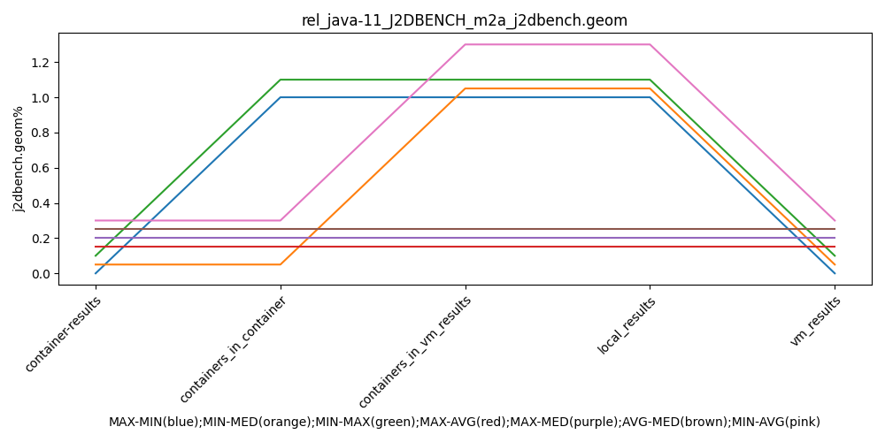
java-11 J2DBENCH j2dbench.geom where all runs of one jdk are treated as INDIVIDUAL items
MAX-MIN 0.0 container-results MAX-MIN 1.0 containers_in_container MAX-MIN 4.0 containers_in_vm_results MAX-MIN 2.0 local_results MAX-MIN 1.0 vm_results MIN-MED 0.0 container-results MIN-MED 1.0 containers_in_container MIN-MED 3.0 containers_in_vm_results MIN-MED 2.0 local_results MIN-MED 1.0 vm_results MIN-MAX 0.0 container-results MIN-MAX 1.0 containers_in_container MIN-MAX 4.0 containers_in_vm_results MIN-MAX 2.0 local_results MIN-MAX 1.0 vm_results MAX-AVG 0.0 container-results MAX-AVG 0.0 containers_in_container MAX-AVG 1.0 containers_in_vm_results MAX-AVG 0.0 local_results MAX-AVG 0.0 vm_results MAX-MED 0.0 container-results MAX-MED 0.0 containers_in_container MAX-MED 1.0 containers_in_vm_results MAX-MED 0.0 local_results MAX-MED 0.0 vm_results AVG-MED 0.0 container-results AVG-MED 0.0 containers_in_container AVG-MED 0.0 containers_in_vm_results AVG-MED 0.0 local_results AVG-MED 0.0 vm_results MIN-AVG 0.0 container-results MIN-AVG 0.0 containers_in_container MIN-AVG 2.0 containers_in_vm_results MIN-AVG 2.0 local_results MIN-AVG 1.0 vm_results
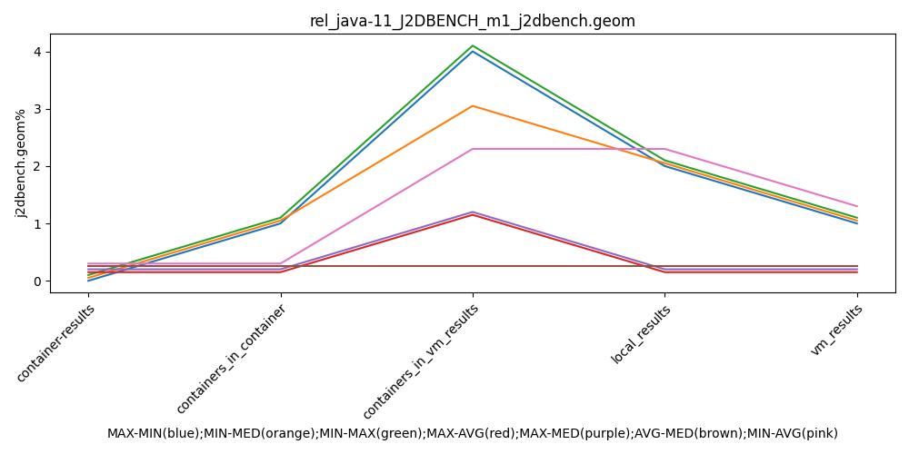
java-11 J2DBENCH j2dbench.geom where all runs of one jdk were made MEDIAN before processing
MAX-MIN 0.0 container-results MAX-MIN 1.0 containers_in_container MAX-MIN 1.0 containers_in_vm_results MAX-MIN 1.0 local_results MAX-MIN 0.0 vm_results MIN-MED 0.0 container-results MIN-MED 0.0 containers_in_container MIN-MED 1.0 containers_in_vm_results MIN-MED 0.0 local_results MIN-MED 0.0 vm_results MIN-MAX 0.0 container-results MIN-MAX 1.0 containers_in_container MIN-MAX 1.0 containers_in_vm_results MIN-MAX 1.0 local_results MIN-MAX 0.0 vm_results MAX-AVG 0.0 container-results MAX-AVG 0.0 containers_in_container MAX-AVG 1.0 containers_in_vm_results MAX-AVG 0.0 local_results MAX-AVG 0.0 vm_results MAX-MED 0.0 container-results MAX-MED 0.0 containers_in_container MAX-MED 0.0 containers_in_vm_results MAX-MED 0.0 local_results MAX-MED 0.0 vm_results AVG-MED 0.0 container-results AVG-MED 0.0 containers_in_container AVG-MED 0.0 containers_in_vm_results AVG-MED 0.0 local_results AVG-MED 0.0 vm_results MIN-AVG 0.0 container-results MIN-AVG 0.0 containers_in_container MIN-AVG 1.0 containers_in_vm_results MIN-AVG 0.0 local_results MIN-AVG 0.0 vm_results
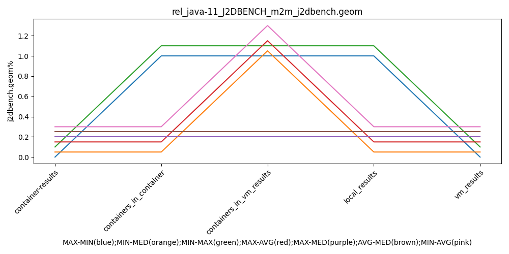
java-11 RADARGUNs1 BasicOperations.Get.Throughput= where all runs of one jdk were made AVARAGE before processing
MAX-MIN 5.0 container-results MAX-MIN 4.0 containers_in_container MAX-MIN 7.0 containers_in_vm_results MAX-MIN 5.0 local_results MAX-MIN 3.0 vm_results MIN-MED 2.0 container-results MIN-MED 2.0 containers_in_container MIN-MED 2.0 containers_in_vm_results MIN-MED 2.0 local_results MIN-MED 1.0 vm_results MIN-MAX 4.0 container-results MIN-MAX 4.0 containers_in_container MIN-MAX 7.0 containers_in_vm_results MIN-MAX 5.0 local_results MIN-MAX 3.0 vm_results MAX-AVG 2.0 container-results MAX-AVG 2.0 containers_in_container MAX-AVG 4.0 containers_in_vm_results MAX-AVG 3.0 local_results MAX-AVG 1.0 vm_results MAX-MED 2.0 container-results MAX-MED 2.0 containers_in_container MAX-MED 4.0 containers_in_vm_results MAX-MED 3.0 local_results MAX-MED 2.0 vm_results AVG-MED 0.0 container-results AVG-MED 0.0 containers_in_container AVG-MED 1.0 containers_in_vm_results AVG-MED 0.0 local_results AVG-MED 0.0 vm_results MIN-AVG 2.0 container-results MIN-AVG 2.0 containers_in_container MIN-AVG 3.0 containers_in_vm_results MIN-AVG 2.0 local_results MIN-AVG 1.0 vm_results
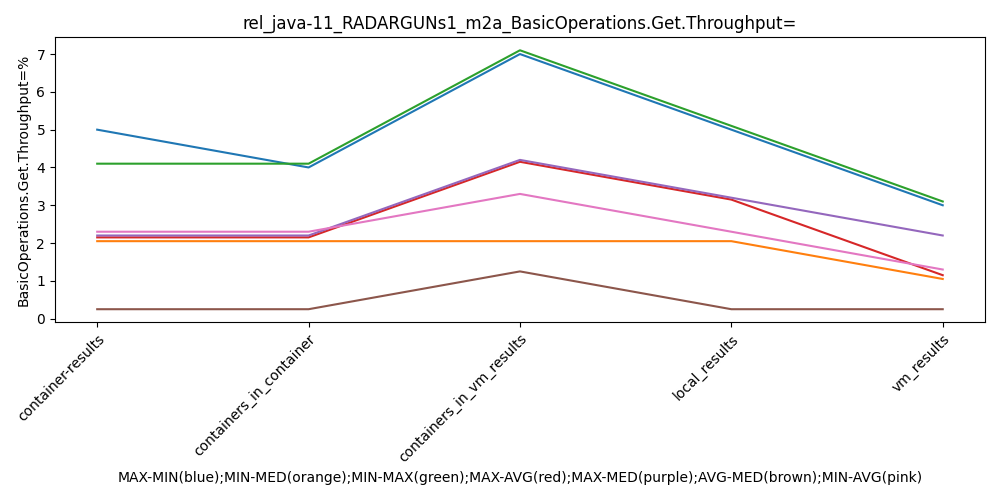
java-11 RADARGUNs1 BasicOperations.Put.ResponseTimeMean where all runs of one jdk were made AVARAGE before processing
MAX-MIN 5.0 container-results MAX-MIN 4.0 containers_in_container MAX-MIN 5.0 containers_in_vm_results MAX-MIN 4.0 local_results MAX-MIN 3.0 vm_results MIN-MED 5.0 container-results MIN-MED 2.0 containers_in_container MIN-MED 3.0 containers_in_vm_results MIN-MED 1.0 local_results MIN-MED 1.0 vm_results MIN-MAX 5.0 container-results MIN-MAX 5.0 containers_in_container MIN-MAX 5.0 containers_in_vm_results MIN-MAX 4.0 local_results MIN-MAX 3.0 vm_results MAX-AVG 2.0 container-results MAX-AVG 2.0 containers_in_container MAX-AVG 3.0 containers_in_vm_results MAX-AVG 3.0 local_results MAX-AVG 1.0 vm_results MAX-MED 1.0 container-results MAX-MED 2.0 containers_in_container MAX-MED 2.0 containers_in_vm_results MAX-MED 4.0 local_results MAX-MED 2.0 vm_results AVG-MED 1.0 container-results AVG-MED 0.0 containers_in_container AVG-MED 0.0 containers_in_vm_results AVG-MED 1.0 local_results AVG-MED 0.0 vm_results MIN-AVG 4.0 container-results MIN-AVG 2.0 containers_in_container MIN-AVG 2.0 containers_in_vm_results MIN-AVG 1.0 local_results MIN-AVG 1.0 vm_results
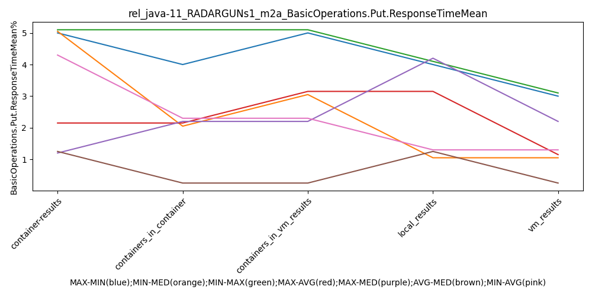
java-11 RADARGUNs1 BasicOperations.Get.ResponseTimeMean where all runs of one jdk were made AVARAGE before processing
MAX-MIN 3.0 container-results MAX-MIN 2.0 containers_in_container MAX-MIN 5.0 containers_in_vm_results MAX-MIN 3.0 local_results MAX-MIN 4.0 vm_results MIN-MED 1.0 container-results MIN-MED 1.0 containers_in_container MIN-MED 3.0 containers_in_vm_results MIN-MED 1.0 local_results MIN-MED 2.0 vm_results MIN-MAX 3.0 container-results MIN-MAX 2.0 containers_in_container MIN-MAX 5.0 containers_in_vm_results MIN-MAX 3.0 local_results MIN-MAX 4.0 vm_results MAX-AVG 2.0 container-results MAX-AVG 1.0 containers_in_container MAX-AVG 3.0 containers_in_vm_results MAX-AVG 2.0 local_results MAX-AVG 2.0 vm_results MAX-MED 2.0 container-results MAX-MED 1.0 containers_in_container MAX-MED 3.0 containers_in_vm_results MAX-MED 2.0 local_results MAX-MED 2.0 vm_results AVG-MED 1.0 container-results AVG-MED 0.0 containers_in_container AVG-MED 0.0 containers_in_vm_results AVG-MED 1.0 local_results AVG-MED 0.0 vm_results MIN-AVG 1.0 container-results MIN-AVG 1.0 containers_in_container MIN-AVG 2.0 containers_in_vm_results MIN-AVG 1.0 local_results MIN-AVG 2.0 vm_results
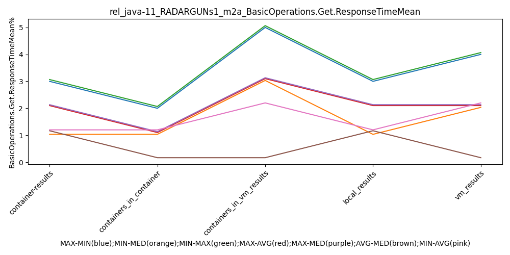
java-11 RADARGUNs1 BasicOperations.Put.Throughput= where all runs of one jdk were made AVARAGE before processing
MAX-MIN 5.0 container-results MAX-MIN 4.0 containers_in_container MAX-MIN 7.0 containers_in_vm_results MAX-MIN 5.0 local_results MAX-MIN 3.0 vm_results MIN-MED 2.0 container-results MIN-MED 2.0 containers_in_container MIN-MED 2.0 containers_in_vm_results MIN-MED 2.0 local_results MIN-MED 1.0 vm_results MIN-MAX 4.0 container-results MIN-MAX 4.0 containers_in_container MIN-MAX 7.0 containers_in_vm_results MIN-MAX 5.0 local_results MIN-MAX 3.0 vm_results MAX-AVG 2.0 container-results MAX-AVG 2.0 containers_in_container MAX-AVG 4.0 containers_in_vm_results MAX-AVG 3.0 local_results MAX-AVG 1.0 vm_results MAX-MED 2.0 container-results MAX-MED 2.0 containers_in_container MAX-MED 4.0 containers_in_vm_results MAX-MED 3.0 local_results MAX-MED 2.0 vm_results AVG-MED 0.0 container-results AVG-MED 0.0 containers_in_container AVG-MED 1.0 containers_in_vm_results AVG-MED 0.0 local_results AVG-MED 0.0 vm_results MIN-AVG 2.0 container-results MIN-AVG 2.0 containers_in_container MIN-AVG 3.0 containers_in_vm_results MIN-AVG 2.0 local_results MIN-AVG 1.0 vm_results
java-11 RADARGUNs1 BasicOperations.Get.Throughput= where all runs of one jdk are treated as INDIVIDUAL items
MAX-MIN 19.0 container-results MAX-MIN 17.0 containers_in_container MAX-MIN 23.0 containers_in_vm_results MAX-MIN 15.0 local_results MAX-MIN 10.0 vm_results MIN-MED 12.0 container-results MIN-MED 11.0 containers_in_container MIN-MED 14.0 containers_in_vm_results MIN-MED 9.0 local_results MIN-MED 4.0 vm_results MIN-MAX 16.0 container-results MIN-MAX 14.0 containers_in_container MIN-MAX 18.0 containers_in_vm_results MIN-MAX 13.0 local_results MIN-MAX 9.0 vm_results MAX-AVG 5.0 container-results MAX-AVG 5.0 containers_in_container MAX-AVG 7.0 containers_in_vm_results MAX-AVG 5.0 local_results MAX-AVG 6.0 vm_results MAX-MED 4.0 container-results MAX-MED 4.0 containers_in_container MAX-MED 6.0 containers_in_vm_results MAX-MED 5.0 local_results MAX-MED 6.0 vm_results AVG-MED 1.0 container-results AVG-MED 1.0 containers_in_container AVG-MED 1.0 containers_in_vm_results AVG-MED 0.0 local_results AVG-MED 0.0 vm_results MIN-AVG 12.0 container-results MIN-AVG 10.0 containers_in_container MIN-AVG 13.0 containers_in_vm_results MIN-AVG 9.0 local_results MIN-AVG 4.0 vm_results
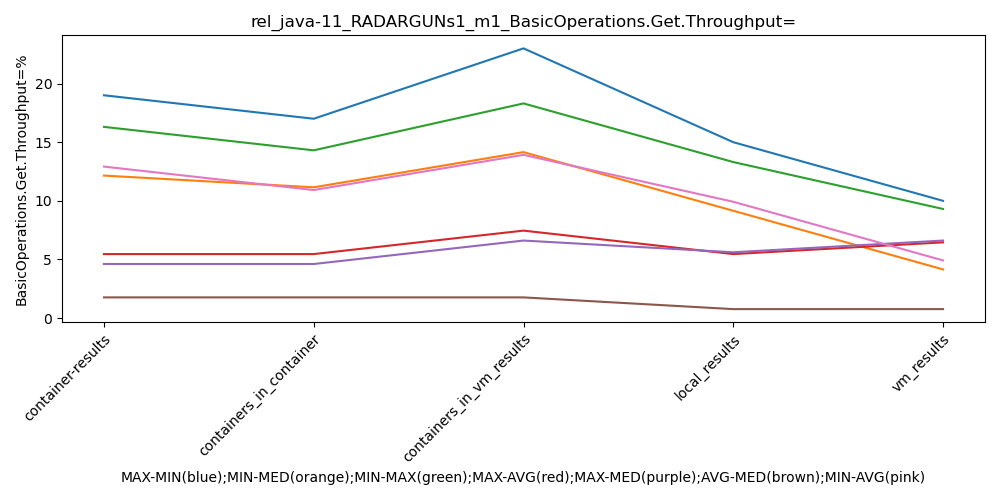
java-11 RADARGUNs1 BasicOperations.Put.ResponseTimeMean where all runs of one jdk are treated as INDIVIDUAL items
MAX-MIN 12.0 container-results MAX-MIN 9.0 containers_in_container MAX-MIN 13.0 containers_in_vm_results MAX-MIN 10.0 local_results MAX-MIN 12.0 vm_results MIN-MED 7.0 container-results MIN-MED 6.0 containers_in_container MIN-MED 9.0 containers_in_vm_results MIN-MED 6.0 local_results MIN-MED 9.0 vm_results MIN-MAX 13.0 container-results MIN-MAX 10.0 containers_in_container MIN-MAX 15.0 containers_in_vm_results MIN-MAX 11.0 local_results MIN-MAX 14.0 vm_results MAX-AVG 5.0 container-results MAX-AVG 4.0 containers_in_container MAX-AVG 6.0 containers_in_vm_results MAX-AVG 5.0 local_results MAX-AVG 4.0 vm_results MAX-MED 5.0 container-results MAX-MED 4.0 containers_in_container MAX-MED 6.0 containers_in_vm_results MAX-MED 5.0 local_results MAX-MED 4.0 vm_results AVG-MED 0.0 container-results AVG-MED 0.0 containers_in_container AVG-MED 0.0 containers_in_vm_results AVG-MED 0.0 local_results AVG-MED 0.0 vm_results MIN-AVG 7.0 container-results MIN-AVG 5.0 containers_in_container MIN-AVG 9.0 containers_in_vm_results MIN-AVG 6.0 local_results MIN-AVG 9.0 vm_results
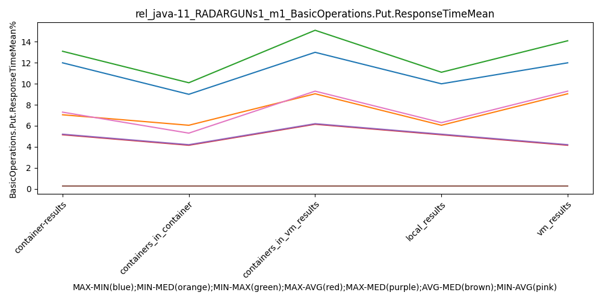
java-11 RADARGUNs1 BasicOperations.Get.ResponseTimeMean where all runs of one jdk are treated as INDIVIDUAL items
MAX-MIN 8.0 container-results MAX-MIN 11.0 containers_in_container MAX-MIN 11.0 containers_in_vm_results MAX-MIN 8.0 local_results MAX-MIN 10.0 vm_results MIN-MED 4.0 container-results MIN-MED 6.0 containers_in_container MIN-MED 7.0 containers_in_vm_results MIN-MED 5.0 local_results MIN-MED 5.0 vm_results MIN-MAX 9.0 container-results MIN-MAX 12.0 containers_in_container MIN-MAX 12.0 containers_in_vm_results MIN-MAX 9.0 local_results MIN-MAX 12.0 vm_results MAX-AVG 4.0 container-results MAX-AVG 5.0 containers_in_container MAX-AVG 5.0 containers_in_vm_results MAX-AVG 3.0 local_results MAX-AVG 6.0 vm_results MAX-MED 4.0 container-results MAX-MED 6.0 containers_in_container MAX-MED 5.0 containers_in_vm_results MAX-MED 3.0 local_results MAX-MED 6.0 vm_results AVG-MED 0.0 container-results AVG-MED 1.0 containers_in_container AVG-MED 0.0 containers_in_vm_results AVG-MED 0.0 local_results AVG-MED 0.0 vm_results MIN-AVG 4.0 container-results MIN-AVG 6.0 containers_in_container MIN-AVG 6.0 containers_in_vm_results MIN-AVG 5.0 local_results MIN-AVG 5.0 vm_results
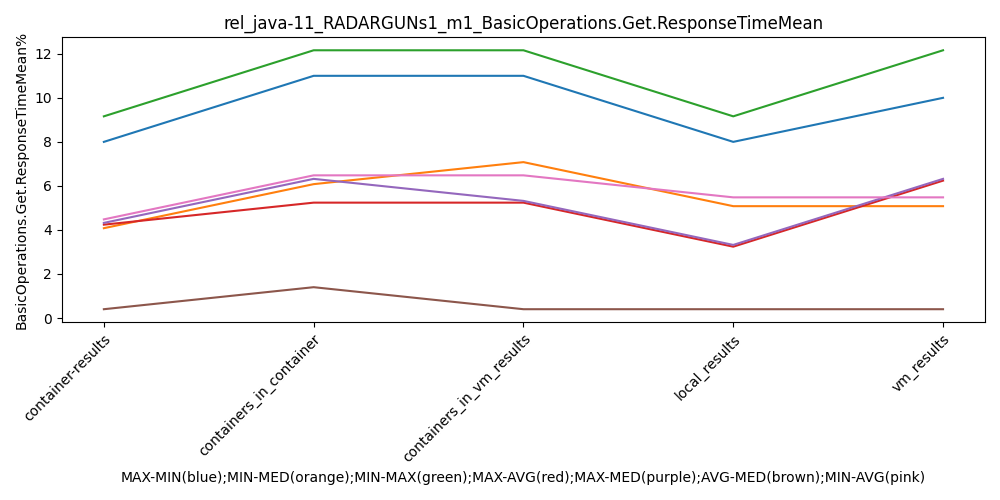
java-11 RADARGUNs1 BasicOperations.Put.Throughput= where all runs of one jdk are treated as INDIVIDUAL items
MAX-MIN 19.0 container-results MAX-MIN 17.0 containers_in_container MAX-MIN 23.0 containers_in_vm_results MAX-MIN 15.0 local_results MAX-MIN 10.0 vm_results MIN-MED 12.0 container-results MIN-MED 11.0 containers_in_container MIN-MED 14.0 containers_in_vm_results MIN-MED 9.0 local_results MIN-MED 4.0 vm_results MIN-MAX 16.0 container-results MIN-MAX 14.0 containers_in_container MIN-MAX 18.0 containers_in_vm_results MIN-MAX 13.0 local_results MIN-MAX 9.0 vm_results MAX-AVG 5.0 container-results MAX-AVG 5.0 containers_in_container MAX-AVG 7.0 containers_in_vm_results MAX-AVG 5.0 local_results MAX-AVG 6.0 vm_results MAX-MED 4.0 container-results MAX-MED 4.0 containers_in_container MAX-MED 6.0 containers_in_vm_results MAX-MED 5.0 local_results MAX-MED 6.0 vm_results AVG-MED 1.0 container-results AVG-MED 1.0 containers_in_container AVG-MED 1.0 containers_in_vm_results AVG-MED 0.0 local_results AVG-MED 0.0 vm_results MIN-AVG 12.0 container-results MIN-AVG 10.0 containers_in_container MIN-AVG 13.0 containers_in_vm_results MIN-AVG 9.0 local_results MIN-AVG 4.0 vm_results
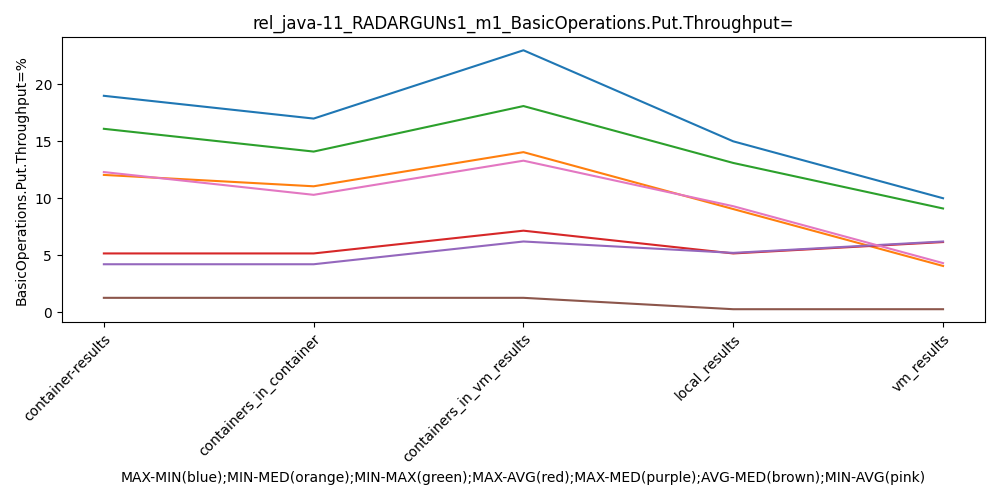
java-11 RADARGUNs1 BasicOperations.Get.Throughput= where all runs of one jdk were made MEDIAN before processing
MAX-MIN 1.0 container-results MAX-MIN 3.0 containers_in_container MAX-MIN 5.0 containers_in_vm_results MAX-MIN 3.0 local_results MAX-MIN 3.0 vm_results MIN-MED 1.0 container-results MIN-MED 1.0 containers_in_container MIN-MED 2.0 containers_in_vm_results MIN-MED 0.0 local_results MIN-MED 2.0 vm_results MIN-MAX 1.0 container-results MIN-MAX 3.0 containers_in_container MIN-MAX 5.0 containers_in_vm_results MIN-MAX 3.0 local_results MIN-MAX 3.0 vm_results MAX-AVG 0.0 container-results MAX-AVG 2.0 containers_in_container MAX-AVG 3.0 containers_in_vm_results MAX-AVG 2.0 local_results MAX-AVG 2.0 vm_results MAX-MED 0.0 container-results MAX-MED 2.0 containers_in_container MAX-MED 3.0 containers_in_vm_results MAX-MED 2.0 local_results MAX-MED 1.0 vm_results AVG-MED 0.0 container-results AVG-MED 0.0 containers_in_container AVG-MED 0.0 containers_in_vm_results AVG-MED 0.0 local_results AVG-MED 0.0 vm_results MIN-AVG 1.0 container-results MIN-AVG 1.0 containers_in_container MIN-AVG 2.0 containers_in_vm_results MIN-AVG 1.0 local_results MIN-AVG 2.0 vm_results
java-11 RADARGUNs1 BasicOperations.Put.ResponseTimeMean where all runs of one jdk were made MEDIAN before processing
MAX-MIN 5.0 container-results MAX-MIN 4.0 containers_in_container MAX-MIN 7.0 containers_in_vm_results MAX-MIN 5.0 local_results MAX-MIN 4.0 vm_results MIN-MED 5.0 container-results MIN-MED 2.0 containers_in_container MIN-MED 3.0 containers_in_vm_results MIN-MED 1.0 local_results MIN-MED 3.0 vm_results MIN-MAX 5.0 container-results MIN-MAX 4.0 containers_in_container MIN-MAX 8.0 containers_in_vm_results MIN-MAX 5.0 local_results MIN-MAX 5.0 vm_results MAX-AVG 2.0 container-results MAX-AVG 2.0 containers_in_container MAX-AVG 4.0 containers_in_vm_results MAX-AVG 3.0 local_results MAX-AVG 2.0 vm_results MAX-MED 1.0 container-results MAX-MED 2.0 containers_in_container MAX-MED 4.0 containers_in_vm_results MAX-MED 4.0 local_results MAX-MED 1.0 vm_results AVG-MED 1.0 container-results AVG-MED 0.0 containers_in_container AVG-MED 0.0 containers_in_vm_results AVG-MED 1.0 local_results AVG-MED 1.0 vm_results MIN-AVG 4.0 container-results MIN-AVG 2.0 containers_in_container MIN-AVG 3.0 containers_in_vm_results MIN-AVG 2.0 local_results MIN-AVG 3.0 vm_results
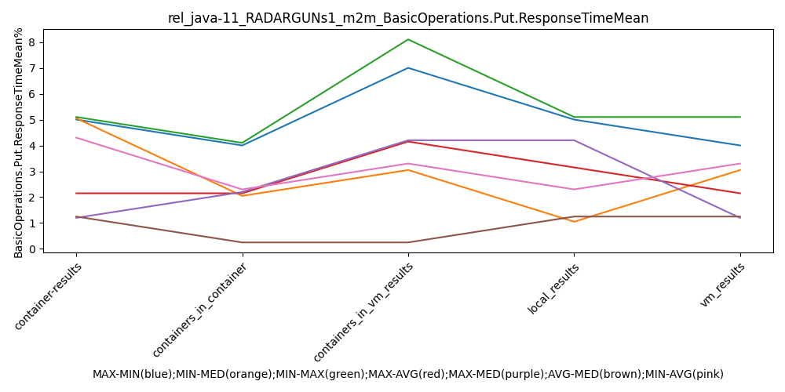
java-11 RADARGUNs1 BasicOperations.Get.ResponseTimeMean where all runs of one jdk were made MEDIAN before processing
MAX-MIN 3.0 container-results MAX-MIN 2.0 containers_in_container MAX-MIN 5.0 containers_in_vm_results MAX-MIN 3.0 local_results MAX-MIN 4.0 vm_results MIN-MED 1.0 container-results MIN-MED 1.0 containers_in_container MIN-MED 2.0 containers_in_vm_results MIN-MED 1.0 local_results MIN-MED 2.0 vm_results MIN-MAX 3.0 container-results MIN-MAX 2.0 containers_in_container MIN-MAX 5.0 containers_in_vm_results MIN-MAX 3.0 local_results MIN-MAX 4.0 vm_results MAX-AVG 2.0 container-results MAX-AVG 1.0 containers_in_container MAX-AVG 3.0 containers_in_vm_results MAX-AVG 2.0 local_results MAX-AVG 2.0 vm_results MAX-MED 2.0 container-results MAX-MED 1.0 containers_in_container MAX-MED 3.0 containers_in_vm_results MAX-MED 2.0 local_results MAX-MED 1.0 vm_results AVG-MED 0.0 container-results AVG-MED 0.0 containers_in_container AVG-MED 0.0 containers_in_vm_results AVG-MED 1.0 local_results AVG-MED 1.0 vm_results MIN-AVG 1.0 container-results MIN-AVG 1.0 containers_in_container MIN-AVG 2.0 containers_in_vm_results MIN-AVG 2.0 local_results MIN-AVG 2.0 vm_results
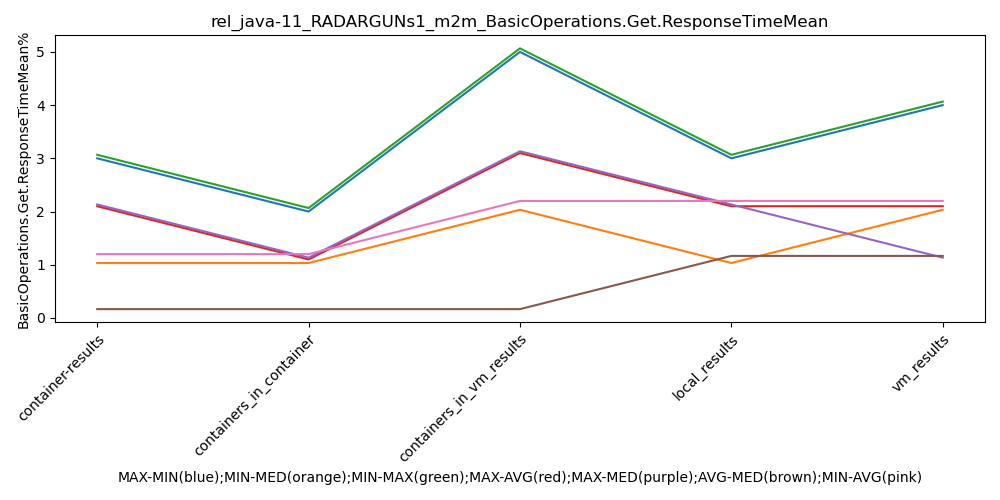
java-11 RADARGUNs1 BasicOperations.Put.Throughput= where all runs of one jdk were made MEDIAN before processing
MAX-MIN 1.0 container-results MAX-MIN 3.0 containers_in_container MAX-MIN 5.0 containers_in_vm_results MAX-MIN 3.0 local_results MAX-MIN 3.0 vm_results MIN-MED 1.0 container-results MIN-MED 1.0 containers_in_container MIN-MED 2.0 containers_in_vm_results MIN-MED 0.0 local_results MIN-MED 2.0 vm_results MIN-MAX 1.0 container-results MIN-MAX 3.0 containers_in_container MIN-MAX 5.0 containers_in_vm_results MIN-MAX 3.0 local_results MIN-MAX 3.0 vm_results MAX-AVG 0.0 container-results MAX-AVG 2.0 containers_in_container MAX-AVG 3.0 containers_in_vm_results MAX-AVG 2.0 local_results MAX-AVG 2.0 vm_results MAX-MED 0.0 container-results MAX-MED 2.0 containers_in_container MAX-MED 3.0 containers_in_vm_results MAX-MED 2.0 local_results MAX-MED 1.0 vm_results AVG-MED 0.0 container-results AVG-MED 0.0 containers_in_container AVG-MED 0.0 containers_in_vm_results AVG-MED 0.0 local_results AVG-MED 0.0 vm_results MIN-AVG 1.0 container-results MIN-AVG 1.0 containers_in_container MIN-AVG 2.0 containers_in_vm_results MIN-AVG 1.0 local_results MIN-AVG 2.0 vm_results
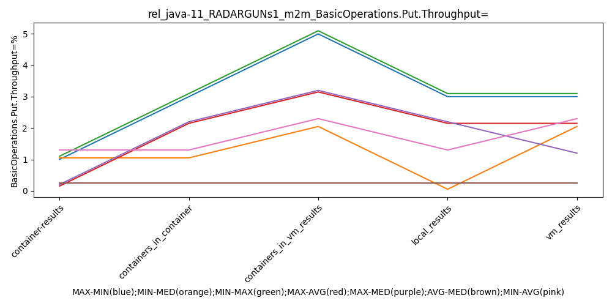
java-11 JMH geom where all runs of one jdk were made AVARAGE before processing
MAX-MIN 0.0 container-results MAX-MIN 1.0 containers_in_container MAX-MIN 2.0 containers_in_vm_results MAX-MIN 2.0 local_results MAX-MIN 0.0 vm_results MIN-MED 0.0 container-results MIN-MED 0.0 containers_in_container MIN-MED 1.0 containers_in_vm_results MIN-MED 1.0 local_results MIN-MED 0.0 vm_results MIN-MAX 0.0 container-results MIN-MAX 1.0 containers_in_container MIN-MAX 2.0 containers_in_vm_results MIN-MAX 2.0 local_results MIN-MAX 0.0 vm_results MAX-AVG 0.0 container-results MAX-AVG 0.0 containers_in_container MAX-AVG 1.0 containers_in_vm_results MAX-AVG 2.0 local_results MAX-AVG 0.0 vm_results MAX-MED 0.0 container-results MAX-MED 1.0 containers_in_container MAX-MED 1.0 containers_in_vm_results MAX-MED 2.0 local_results MAX-MED 0.0 vm_results AVG-MED 0.0 container-results AVG-MED 0.0 containers_in_container AVG-MED 0.0 containers_in_vm_results AVG-MED 0.0 local_results AVG-MED 0.0 vm_results MIN-AVG 0.0 container-results MIN-AVG 0.0 containers_in_container MIN-AVG 1.0 containers_in_vm_results MIN-AVG 1.0 local_results MIN-AVG 0.0 vm_results
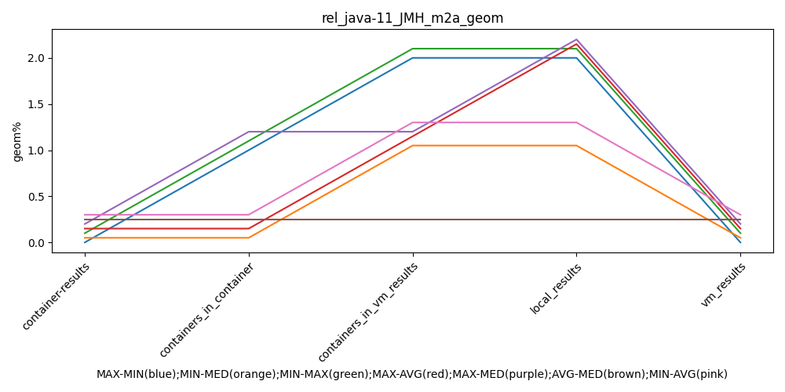
java-11 JMH geom where all runs of one jdk are treated as INDIVIDUAL items
MAX-MIN 2.0 container-results MAX-MIN 3.0 containers_in_container MAX-MIN 5.0 containers_in_vm_results MAX-MIN 13.0 local_results MAX-MIN 1.0 vm_results MIN-MED 1.0 container-results MIN-MED 1.0 containers_in_container MIN-MED 2.0 containers_in_vm_results MIN-MED 3.0 local_results MIN-MED 1.0 vm_results MIN-MAX 2.0 container-results MIN-MAX 3.0 containers_in_container MIN-MAX 4.0 containers_in_vm_results MIN-MAX 11.0 local_results MIN-MAX 1.0 vm_results MAX-AVG 0.0 container-results MAX-AVG 2.0 containers_in_container MAX-AVG 2.0 containers_in_vm_results MAX-AVG 9.0 local_results MAX-AVG 0.0 vm_results MAX-MED 0.0 container-results MAX-MED 2.0 containers_in_container MAX-MED 2.0 containers_in_vm_results MAX-MED 10.0 local_results MAX-MED 1.0 vm_results AVG-MED 0.0 container-results AVG-MED 0.0 containers_in_container AVG-MED 0.0 containers_in_vm_results AVG-MED 0.0 local_results AVG-MED 0.0 vm_results MIN-AVG 1.0 container-results MIN-AVG 1.0 containers_in_container MIN-AVG 2.0 containers_in_vm_results MIN-AVG 3.0 local_results MIN-AVG 1.0 vm_results
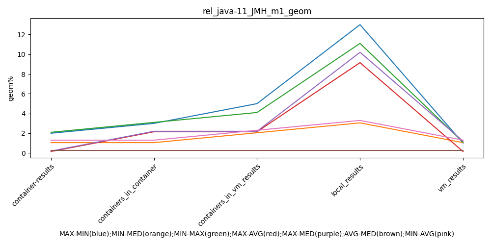
java-11 JMH geom where all runs of one jdk were made MEDIAN before processing
MAX-MIN 0.0 container-results MAX-MIN 1.0 containers_in_container MAX-MIN 2.0 containers_in_vm_results MAX-MIN 0.0 local_results MAX-MIN 0.0 vm_results MIN-MED 0.0 container-results MIN-MED 0.0 containers_in_container MIN-MED 1.0 containers_in_vm_results MIN-MED 0.0 local_results MIN-MED 0.0 vm_results MIN-MAX 0.0 container-results MIN-MAX 1.0 containers_in_container MIN-MAX 2.0 containers_in_vm_results MIN-MAX 0.0 local_results MIN-MAX 0.0 vm_results MAX-AVG 0.0 container-results MAX-AVG 0.0 containers_in_container MAX-AVG 1.0 containers_in_vm_results MAX-AVG 0.0 local_results MAX-AVG 0.0 vm_results MAX-MED 0.0 container-results MAX-MED 0.0 containers_in_container MAX-MED 2.0 containers_in_vm_results MAX-MED 0.0 local_results MAX-MED 0.0 vm_results AVG-MED 0.0 container-results AVG-MED 0.0 containers_in_container AVG-MED 0.0 containers_in_vm_results AVG-MED 0.0 local_results AVG-MED 0.0 vm_results MIN-AVG 0.0 container-results MIN-AVG 0.0 containers_in_container MIN-AVG 1.0 containers_in_vm_results MIN-AVG 0.0 local_results MIN-AVG 0.0 vm_results
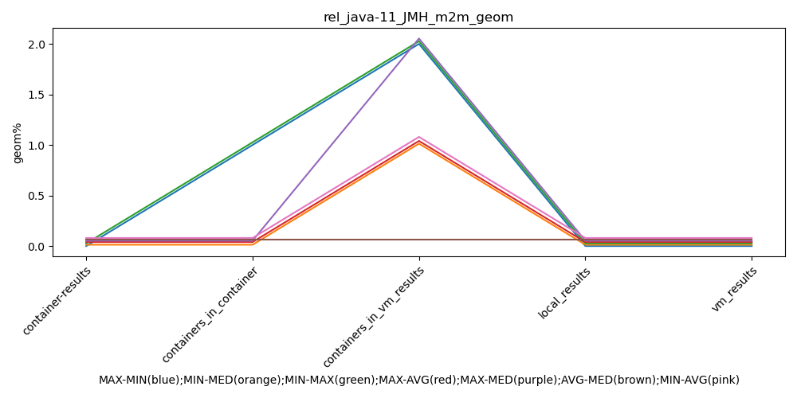
java-11 RADARGUNs3 BasicOperations.Get.Throughput= where all runs of one jdk were made AVARAGE before processing
MAX-MIN 2.0 container-results MAX-MIN 2.0 containers_in_container MAX-MIN 5.0 containers_in_vm_results MAX-MIN 2.0 local_results MAX-MIN 5.0 vm_results MIN-MED 1.0 container-results MIN-MED 1.0 containers_in_container MIN-MED 3.0 containers_in_vm_results MIN-MED 2.0 local_results MIN-MED 3.0 vm_results MIN-MAX 2.0 container-results MIN-MAX 2.0 containers_in_container MIN-MAX 5.0 containers_in_vm_results MIN-MAX 2.0 local_results MIN-MAX 5.0 vm_results MAX-AVG 1.0 container-results MAX-AVG 1.0 containers_in_container MAX-AVG 3.0 containers_in_vm_results MAX-AVG 1.0 local_results MAX-AVG 2.0 vm_results MAX-MED 1.0 container-results MAX-MED 0.0 containers_in_container MAX-MED 2.0 containers_in_vm_results MAX-MED 1.0 local_results MAX-MED 2.0 vm_results AVG-MED 0.0 container-results AVG-MED 0.0 containers_in_container AVG-MED 0.0 containers_in_vm_results AVG-MED 0.0 local_results AVG-MED 0.0 vm_results MIN-AVG 1.0 container-results MIN-AVG 1.0 containers_in_container MIN-AVG 3.0 containers_in_vm_results MIN-AVG 1.0 local_results MIN-AVG 3.0 vm_results
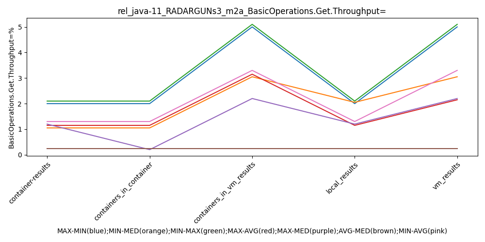
java-11 RADARGUNs3 BasicOperations.Put.ResponseTimeMean where all runs of one jdk were made AVARAGE before processing
MAX-MIN 2.0 container-results MAX-MIN 2.0 containers_in_container MAX-MIN 5.0 containers_in_vm_results MAX-MIN 2.0 local_results MAX-MIN 5.0 vm_results MIN-MED 1.0 container-results MIN-MED 1.0 containers_in_container MIN-MED 3.0 containers_in_vm_results MIN-MED 2.0 local_results MIN-MED 3.0 vm_results MIN-MAX 2.0 container-results MIN-MAX 2.0 containers_in_container MIN-MAX 5.0 containers_in_vm_results MIN-MAX 2.0 local_results MIN-MAX 6.0 vm_results MAX-AVG 1.0 container-results MAX-AVG 1.0 containers_in_container MAX-AVG 3.0 containers_in_vm_results MAX-AVG 1.0 local_results MAX-AVG 2.0 vm_results MAX-MED 1.0 container-results MAX-MED 0.0 containers_in_container MAX-MED 2.0 containers_in_vm_results MAX-MED 0.0 local_results MAX-MED 2.0 vm_results AVG-MED 0.0 container-results AVG-MED 0.0 containers_in_container AVG-MED 1.0 containers_in_vm_results AVG-MED 0.0 local_results AVG-MED 0.0 vm_results MIN-AVG 1.0 container-results MIN-AVG 1.0 containers_in_container MIN-AVG 3.0 containers_in_vm_results MIN-AVG 1.0 local_results MIN-AVG 3.0 vm_results
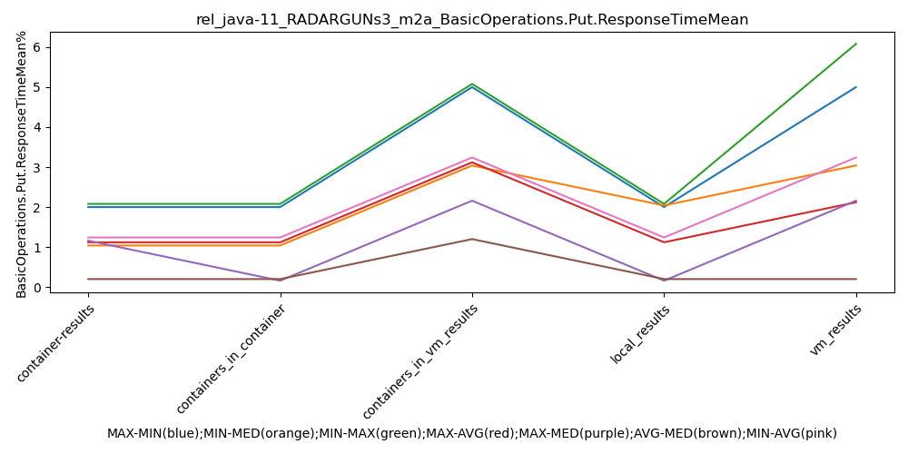
java-11 RADARGUNs3 BasicOperations.Get.ResponseTimeMean where all runs of one jdk were made AVARAGE before processing
MAX-MIN 3.0 container-results MAX-MIN 2.0 containers_in_container MAX-MIN 5.0 containers_in_vm_results MAX-MIN 2.0 local_results MAX-MIN 5.0 vm_results MIN-MED 2.0 container-results MIN-MED 1.0 containers_in_container MIN-MED 3.0 containers_in_vm_results MIN-MED 1.0 local_results MIN-MED 3.0 vm_results MIN-MAX 3.0 container-results MIN-MAX 2.0 containers_in_container MIN-MAX 5.0 containers_in_vm_results MIN-MAX 2.0 local_results MIN-MAX 6.0 vm_results MAX-AVG 1.0 container-results MAX-AVG 1.0 containers_in_container MAX-AVG 3.0 containers_in_vm_results MAX-AVG 1.0 local_results MAX-AVG 2.0 vm_results MAX-MED 1.0 container-results MAX-MED 1.0 containers_in_container MAX-MED 2.0 containers_in_vm_results MAX-MED 1.0 local_results MAX-MED 2.0 vm_results AVG-MED 0.0 container-results AVG-MED 0.0 containers_in_container AVG-MED 0.0 containers_in_vm_results AVG-MED 0.0 local_results AVG-MED 0.0 vm_results MIN-AVG 1.0 container-results MIN-AVG 1.0 containers_in_container MIN-AVG 3.0 containers_in_vm_results MIN-AVG 1.0 local_results MIN-AVG 3.0 vm_results
java-11 RADARGUNs3 BasicOperations.Put.Throughput= where all runs of one jdk were made AVARAGE before processing
MAX-MIN 2.0 container-results MAX-MIN 2.0 containers_in_container MAX-MIN 5.0 containers_in_vm_results MAX-MIN 2.0 local_results MAX-MIN 6.0 vm_results MIN-MED 1.0 container-results MIN-MED 1.0 containers_in_container MIN-MED 3.0 containers_in_vm_results MIN-MED 2.0 local_results MIN-MED 3.0 vm_results MIN-MAX 2.0 container-results MIN-MAX 2.0 containers_in_container MIN-MAX 5.0 containers_in_vm_results MIN-MAX 2.0 local_results MIN-MAX 5.0 vm_results MAX-AVG 1.0 container-results MAX-AVG 1.0 containers_in_container MAX-AVG 3.0 containers_in_vm_results MAX-AVG 1.0 local_results MAX-AVG 2.0 vm_results MAX-MED 1.0 container-results MAX-MED 0.0 containers_in_container MAX-MED 2.0 containers_in_vm_results MAX-MED 1.0 local_results MAX-MED 2.0 vm_results AVG-MED 0.0 container-results AVG-MED 0.0 containers_in_container AVG-MED 0.0 containers_in_vm_results AVG-MED 0.0 local_results AVG-MED 0.0 vm_results MIN-AVG 1.0 container-results MIN-AVG 1.0 containers_in_container MIN-AVG 3.0 containers_in_vm_results MIN-AVG 1.0 local_results MIN-AVG 3.0 vm_results
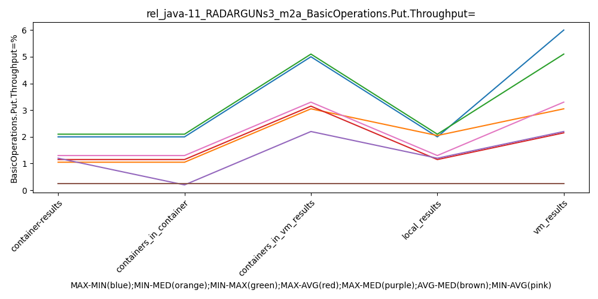
java-11 RADARGUNs3 BasicOperations.Get.Throughput= where all runs of one jdk are treated as INDIVIDUAL items
MAX-MIN 4.0 container-results MAX-MIN 4.0 containers_in_container MAX-MIN 11.0 containers_in_vm_results MAX-MIN 3.0 local_results MAX-MIN 12.0 vm_results MIN-MED 2.0 container-results MIN-MED 2.0 containers_in_container MIN-MED 3.0 containers_in_vm_results MIN-MED 2.0 local_results MIN-MED 7.0 vm_results MIN-MAX 3.0 container-results MIN-MAX 4.0 containers_in_container MIN-MAX 10.0 containers_in_vm_results MIN-MAX 3.0 local_results MIN-MAX 10.0 vm_results MAX-AVG 2.0 container-results MAX-AVG 2.0 containers_in_container MAX-AVG 6.0 containers_in_vm_results MAX-AVG 2.0 local_results MAX-AVG 4.0 vm_results MAX-MED 2.0 container-results MAX-MED 2.0 containers_in_container MAX-MED 7.0 containers_in_vm_results MAX-MED 1.0 local_results MAX-MED 4.0 vm_results AVG-MED 0.0 container-results AVG-MED 0.0 containers_in_container AVG-MED 1.0 containers_in_vm_results AVG-MED 0.0 local_results AVG-MED 0.0 vm_results MIN-AVG 2.0 container-results MIN-AVG 2.0 containers_in_container MIN-AVG 4.0 containers_in_vm_results MIN-AVG 2.0 local_results MIN-AVG 6.0 vm_results
java-11 RADARGUNs3 BasicOperations.Put.ResponseTimeMean where all runs of one jdk are treated as INDIVIDUAL items
MAX-MIN 3.0 container-results MAX-MIN 3.0 containers_in_container MAX-MIN 10.0 containers_in_vm_results MAX-MIN 3.0 local_results MAX-MIN 11.0 vm_results MIN-MED 2.0 container-results MIN-MED 2.0 containers_in_container MIN-MED 3.0 containers_in_vm_results MIN-MED 2.0 local_results MIN-MED 7.0 vm_results MIN-MAX 3.0 container-results MIN-MAX 3.0 containers_in_container MIN-MAX 11.0 containers_in_vm_results MIN-MAX 3.0 local_results MIN-MAX 12.0 vm_results MAX-AVG 1.0 container-results MAX-AVG 2.0 containers_in_container MAX-AVG 6.0 containers_in_vm_results MAX-AVG 2.0 local_results MAX-AVG 5.0 vm_results MAX-MED 1.0 container-results MAX-MED 2.0 containers_in_container MAX-MED 7.0 containers_in_vm_results MAX-MED 1.0 local_results MAX-MED 4.0 vm_results AVG-MED 0.0 container-results AVG-MED 0.0 containers_in_container AVG-MED 1.0 containers_in_vm_results AVG-MED 0.0 local_results AVG-MED 0.0 vm_results MIN-AVG 2.0 container-results MIN-AVG 2.0 containers_in_container MIN-AVG 4.0 containers_in_vm_results MIN-AVG 2.0 local_results MIN-AVG 7.0 vm_results
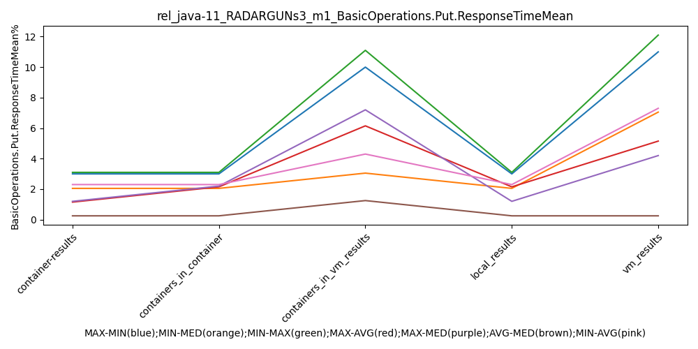
java-11 RADARGUNs3 BasicOperations.Get.ResponseTimeMean where all runs of one jdk are treated as INDIVIDUAL items
MAX-MIN 4.0 container-results MAX-MIN 4.0 containers_in_container MAX-MIN 11.0 containers_in_vm_results MAX-MIN 4.0 local_results MAX-MIN 10.0 vm_results MIN-MED 2.0 container-results MIN-MED 3.0 containers_in_container MIN-MED 4.0 containers_in_vm_results MIN-MED 2.0 local_results MIN-MED 7.0 vm_results MIN-MAX 4.0 container-results MIN-MAX 5.0 containers_in_container MIN-MAX 12.0 containers_in_vm_results MIN-MAX 4.0 local_results MIN-MAX 11.0 vm_results MAX-AVG 2.0 container-results MAX-AVG 2.0 containers_in_container MAX-AVG 6.0 containers_in_vm_results MAX-AVG 2.0 local_results MAX-AVG 4.0 vm_results MAX-MED 2.0 container-results MAX-MED 2.0 containers_in_container MAX-MED 7.0 containers_in_vm_results MAX-MED 1.0 local_results MAX-MED 3.0 vm_results AVG-MED 0.0 container-results AVG-MED 0.0 containers_in_container AVG-MED 1.0 containers_in_vm_results AVG-MED 0.0 local_results AVG-MED 1.0 vm_results MIN-AVG 2.0 container-results MIN-AVG 2.0 containers_in_container MIN-AVG 5.0 containers_in_vm_results MIN-AVG 2.0 local_results MIN-AVG 7.0 vm_results
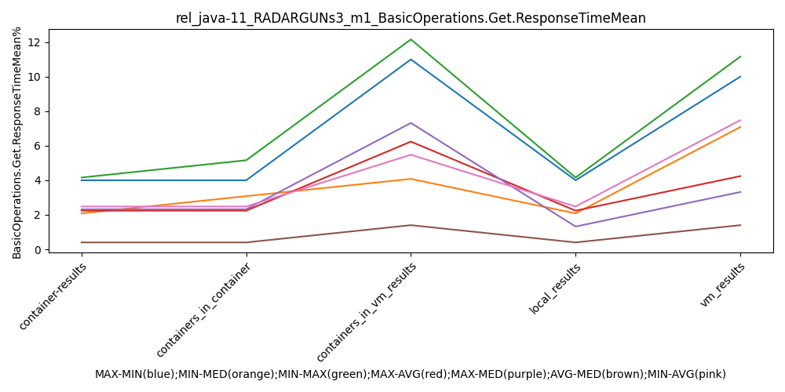
java-11 RADARGUNs3 BasicOperations.Put.Throughput= where all runs of one jdk are treated as INDIVIDUAL items
MAX-MIN 4.0 container-results MAX-MIN 4.0 containers_in_container MAX-MIN 11.0 containers_in_vm_results MAX-MIN 3.0 local_results MAX-MIN 12.0 vm_results MIN-MED 2.0 container-results MIN-MED 2.0 containers_in_container MIN-MED 3.0 containers_in_vm_results MIN-MED 2.0 local_results MIN-MED 7.0 vm_results MIN-MAX 3.0 container-results MIN-MAX 4.0 containers_in_container MIN-MAX 10.0 containers_in_vm_results MIN-MAX 3.0 local_results MIN-MAX 10.0 vm_results MAX-AVG 2.0 container-results MAX-AVG 2.0 containers_in_container MAX-AVG 6.0 containers_in_vm_results MAX-AVG 2.0 local_results MAX-AVG 4.0 vm_results MAX-MED 2.0 container-results MAX-MED 2.0 containers_in_container MAX-MED 7.0 containers_in_vm_results MAX-MED 1.0 local_results MAX-MED 4.0 vm_results AVG-MED 0.0 container-results AVG-MED 0.0 containers_in_container AVG-MED 1.0 containers_in_vm_results AVG-MED 0.0 local_results AVG-MED 0.0 vm_results MIN-AVG 2.0 container-results MIN-AVG 2.0 containers_in_container MIN-AVG 4.0 containers_in_vm_results MIN-AVG 2.0 local_results MIN-AVG 6.0 vm_results
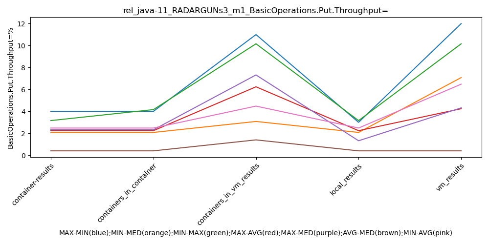
java-11 RADARGUNs3 BasicOperations.Get.Throughput= where all runs of one jdk were made MEDIAN before processing
MAX-MIN 2.0 container-results MAX-MIN 2.0 containers_in_container MAX-MIN 5.0 containers_in_vm_results MAX-MIN 2.0 local_results MAX-MIN 6.0 vm_results MIN-MED 1.0 container-results MIN-MED 1.0 containers_in_container MIN-MED 4.0 containers_in_vm_results MIN-MED 2.0 local_results MIN-MED 4.0 vm_results MIN-MAX 2.0 container-results MIN-MAX 2.0 containers_in_container MIN-MAX 5.0 containers_in_vm_results MIN-MAX 2.0 local_results MIN-MAX 6.0 vm_results MAX-AVG 1.0 container-results MAX-AVG 1.0 containers_in_container MAX-AVG 2.0 containers_in_vm_results MAX-AVG 1.0 local_results MAX-AVG 2.0 vm_results MAX-MED 1.0 container-results MAX-MED 1.0 containers_in_container MAX-MED 1.0 containers_in_vm_results MAX-MED 0.0 local_results MAX-MED 2.0 vm_results AVG-MED 0.0 container-results AVG-MED 0.0 containers_in_container AVG-MED 1.0 containers_in_vm_results AVG-MED 0.0 local_results AVG-MED 0.0 vm_results MIN-AVG 1.0 container-results MIN-AVG 1.0 containers_in_container MIN-AVG 3.0 containers_in_vm_results MIN-AVG 1.0 local_results MIN-AVG 4.0 vm_results
java-11 RADARGUNs3 BasicOperations.Put.ResponseTimeMean where all runs of one jdk were made MEDIAN before processing
MAX-MIN 2.0 container-results MAX-MIN 2.0 containers_in_container MAX-MIN 5.0 containers_in_vm_results MAX-MIN 2.0 local_results MAX-MIN 5.0 vm_results MIN-MED 2.0 container-results MIN-MED 1.0 containers_in_container MIN-MED 5.0 containers_in_vm_results MIN-MED 1.0 local_results MIN-MED 4.0 vm_results MIN-MAX 2.0 container-results MIN-MAX 2.0 containers_in_container MIN-MAX 6.0 containers_in_vm_results MIN-MAX 2.0 local_results MIN-MAX 6.0 vm_results MAX-AVG 1.0 container-results MAX-AVG 1.0 containers_in_container MAX-AVG 2.0 containers_in_vm_results MAX-AVG 1.0 local_results MAX-AVG 2.0 vm_results MAX-MED 0.0 container-results MAX-MED 1.0 containers_in_container MAX-MED 1.0 containers_in_vm_results MAX-MED 0.0 local_results MAX-MED 2.0 vm_results AVG-MED 0.0 container-results AVG-MED 0.0 containers_in_container AVG-MED 1.0 containers_in_vm_results AVG-MED 0.0 local_results AVG-MED 0.0 vm_results MIN-AVG 1.0 container-results MIN-AVG 1.0 containers_in_container MIN-AVG 3.0 containers_in_vm_results MIN-AVG 1.0 local_results MIN-AVG 4.0 vm_results
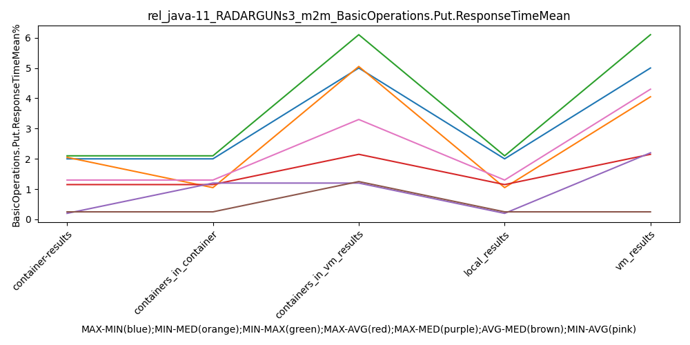
java-11 RADARGUNs3 BasicOperations.Get.ResponseTimeMean where all runs of one jdk were made MEDIAN before processing
MAX-MIN 3.0 container-results MAX-MIN 2.0 containers_in_container MAX-MIN 5.0 containers_in_vm_results MAX-MIN 2.0 local_results MAX-MIN 6.0 vm_results MIN-MED 1.0 container-results MIN-MED 1.0 containers_in_container MIN-MED 4.0 containers_in_vm_results MIN-MED 2.0 local_results MIN-MED 4.0 vm_results MIN-MAX 3.0 container-results MIN-MAX 2.0 containers_in_container MIN-MAX 5.0 containers_in_vm_results MIN-MAX 2.0 local_results MIN-MAX 6.0 vm_results MAX-AVG 1.0 container-results MAX-AVG 1.0 containers_in_container MAX-AVG 2.0 containers_in_vm_results MAX-AVG 1.0 local_results MAX-AVG 2.0 vm_results MAX-MED 1.0 container-results MAX-MED 1.0 containers_in_container MAX-MED 1.0 containers_in_vm_results MAX-MED 0.0 local_results MAX-MED 2.0 vm_results AVG-MED 0.0 container-results AVG-MED 0.0 containers_in_container AVG-MED 1.0 containers_in_vm_results AVG-MED 0.0 local_results AVG-MED 0.0 vm_results MIN-AVG 1.0 container-results MIN-AVG 1.0 containers_in_container MIN-AVG 3.0 containers_in_vm_results MIN-AVG 2.0 local_results MIN-AVG 4.0 vm_results
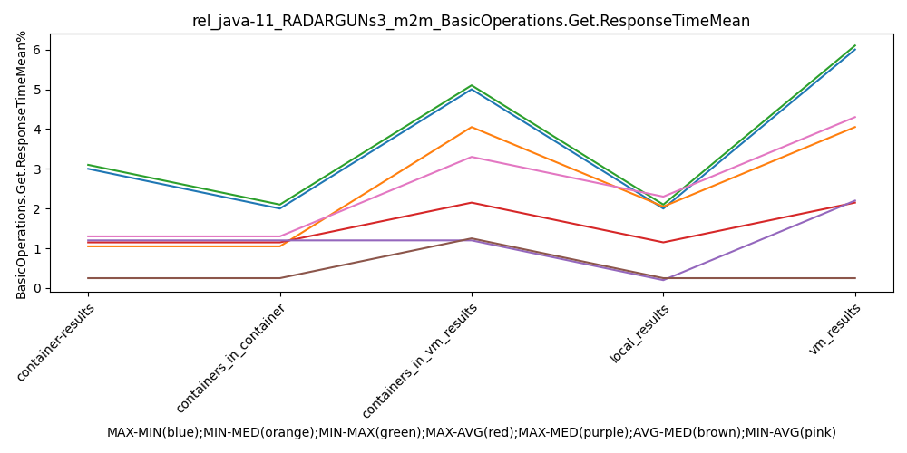
java-11 RADARGUNs3 BasicOperations.Put.Throughput= where all runs of one jdk were made MEDIAN before processing
MAX-MIN 2.0 container-results MAX-MIN 2.0 containers_in_container MAX-MIN 5.0 containers_in_vm_results MAX-MIN 2.0 local_results MAX-MIN 6.0 vm_results MIN-MED 1.0 container-results MIN-MED 1.0 containers_in_container MIN-MED 4.0 containers_in_vm_results MIN-MED 2.0 local_results MIN-MED 4.0 vm_results MIN-MAX 2.0 container-results MIN-MAX 2.0 containers_in_container MIN-MAX 5.0 containers_in_vm_results MIN-MAX 2.0 local_results MIN-MAX 6.0 vm_results MAX-AVG 1.0 container-results MAX-AVG 1.0 containers_in_container MAX-AVG 2.0 containers_in_vm_results MAX-AVG 1.0 local_results MAX-AVG 2.0 vm_results MAX-MED 1.0 container-results MAX-MED 1.0 containers_in_container MAX-MED 1.0 containers_in_vm_results MAX-MED 0.0 local_results MAX-MED 2.0 vm_results AVG-MED 0.0 container-results AVG-MED 0.0 containers_in_container AVG-MED 1.0 containers_in_vm_results AVG-MED 0.0 local_results AVG-MED 0.0 vm_results MIN-AVG 1.0 container-results MIN-AVG 1.0 containers_in_container MIN-AVG 3.0 containers_in_vm_results MIN-AVG 1.0 local_results MIN-AVG 4.0 vm_results
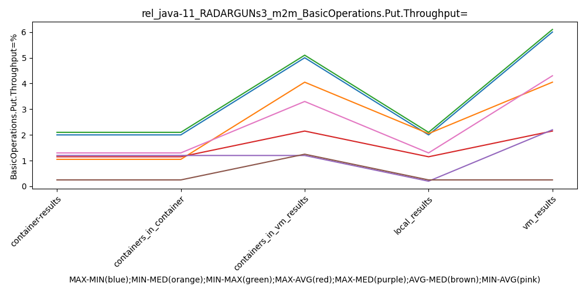
java-11 DACAPO geom where all runs of one jdk were made AVARAGE before processing
MAX-MIN 1.0 container-results MAX-MIN 6.0 containers_in_container MAX-MIN 4.0 containers_in_vm_results MAX-MIN 2.0 local_results MAX-MIN 2.0 vm_results MIN-MED 0.0 container-results MIN-MED 2.0 containers_in_container MIN-MED 3.0 containers_in_vm_results MIN-MED 1.0 local_results MIN-MED 1.0 vm_results MIN-MAX 1.0 container-results MIN-MAX 6.0 containers_in_container MIN-MAX 4.0 containers_in_vm_results MIN-MAX 2.0 local_results MIN-MAX 2.0 vm_results MAX-AVG 1.0 container-results MAX-AVG 4.0 containers_in_container MAX-AVG 2.0 containers_in_vm_results MAX-AVG 1.0 local_results MAX-AVG 1.0 vm_results MAX-MED 1.0 container-results MAX-MED 4.0 containers_in_container MAX-MED 2.0 containers_in_vm_results MAX-MED 1.0 local_results MAX-MED 1.0 vm_results AVG-MED 0.0 container-results AVG-MED 0.0 containers_in_container AVG-MED 0.0 containers_in_vm_results AVG-MED 0.0 local_results AVG-MED 0.0 vm_results MIN-AVG 1.0 container-results MIN-AVG 2.0 containers_in_container MIN-AVG 2.0 containers_in_vm_results MIN-AVG 1.0 local_results MIN-AVG 1.0 vm_results
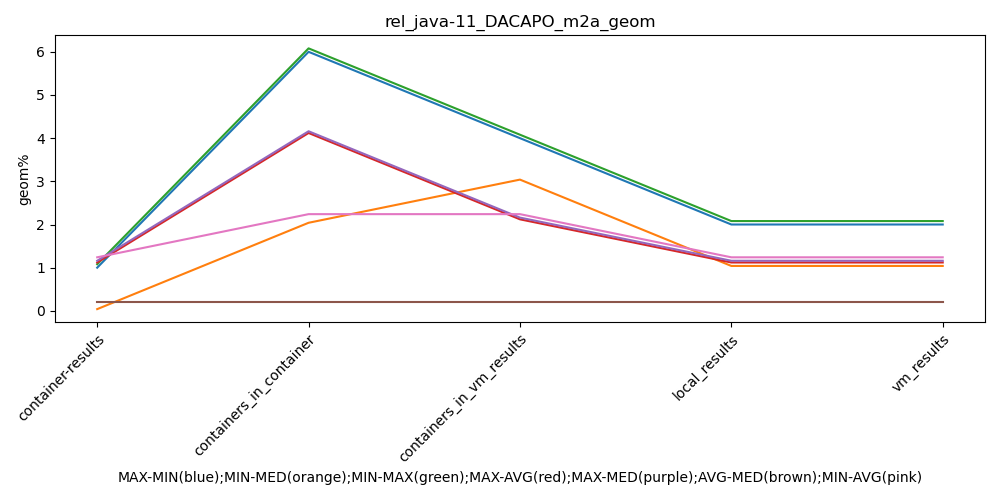
java-11 DACAPO geom where all runs of one jdk are treated as INDIVIDUAL items
MAX-MIN 11.0 container-results MAX-MIN 12.0 containers_in_container MAX-MIN 27.0 containers_in_vm_results MAX-MIN 13.0 local_results MAX-MIN 9.0 vm_results MIN-MED 5.0 container-results MIN-MED 4.0 containers_in_container MIN-MED 8.0 containers_in_vm_results MIN-MED 3.0 local_results MIN-MED 4.0 vm_results MIN-MAX 10.0 container-results MIN-MAX 10.0 containers_in_container MIN-MAX 21.0 containers_in_vm_results MIN-MAX 12.0 local_results MIN-MAX 8.0 vm_results MAX-AVG 6.0 container-results MAX-AVG 7.0 containers_in_container MAX-AVG 16.0 containers_in_vm_results MAX-AVG 9.0 local_results MAX-AVG 5.0 vm_results MAX-MED 6.0 container-results MAX-MED 7.0 containers_in_container MAX-MED 16.0 containers_in_vm_results MAX-MED 9.0 local_results MAX-MED 5.0 vm_results AVG-MED 0.0 container-results AVG-MED 0.0 containers_in_container AVG-MED 0.0 containers_in_vm_results AVG-MED 1.0 local_results AVG-MED 0.0 vm_results MIN-AVG 4.0 container-results MIN-AVG 4.0 containers_in_container MIN-AVG 8.0 containers_in_vm_results MIN-AVG 4.0 local_results MIN-AVG 4.0 vm_results
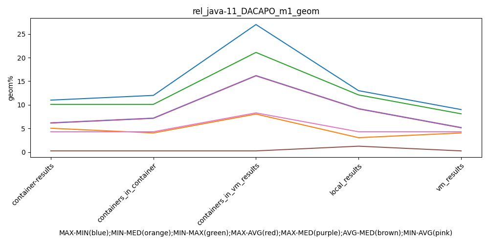
java-11 DACAPO geom where all runs of one jdk were made MEDIAN before processing
MAX-MIN 2.0 container-results MAX-MIN 5.0 containers_in_container MAX-MIN 6.0 containers_in_vm_results MAX-MIN 4.0 local_results MAX-MIN 4.0 vm_results MIN-MED 1.0 container-results MIN-MED 4.0 containers_in_container MIN-MED 2.0 containers_in_vm_results MIN-MED 1.0 local_results MIN-MED 2.0 vm_results MIN-MAX 2.0 container-results MIN-MAX 5.0 containers_in_container MIN-MAX 6.0 containers_in_vm_results MIN-MAX 4.0 local_results MIN-MAX 4.0 vm_results MAX-AVG 1.0 container-results MAX-AVG 2.0 containers_in_container MAX-AVG 4.0 containers_in_vm_results MAX-AVG 3.0 local_results MAX-AVG 2.0 vm_results MAX-MED 1.0 container-results MAX-MED 2.0 containers_in_container MAX-MED 4.0 containers_in_vm_results MAX-MED 3.0 local_results MAX-MED 2.0 vm_results AVG-MED 0.0 container-results AVG-MED 1.0 containers_in_container AVG-MED 0.0 containers_in_vm_results AVG-MED 0.0 local_results AVG-MED 0.0 vm_results MIN-AVG 1.0 container-results MIN-AVG 3.0 containers_in_container MIN-AVG 2.0 containers_in_vm_results MIN-AVG 1.0 local_results MIN-AVG 2.0 vm_results
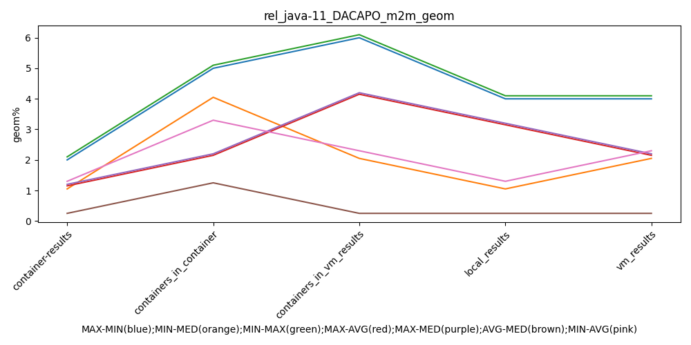
java-11 SPECJBB jbb2015.result.metric.max-jOPS where all runs of one jdk were made AVARAGE before processing
MAX-MIN 4.0 container-results MAX-MIN 2.0 containers_in_container MAX-MIN 3.0 containers_in_vm_results MAX-MIN 3.0 local_results MAX-MIN 3.0 vm_results MIN-MED 2.0 container-results MIN-MED 2.0 containers_in_container MIN-MED 2.0 containers_in_vm_results MIN-MED 1.0 local_results MIN-MED 1.0 vm_results MIN-MAX 3.0 container-results MIN-MAX 2.0 containers_in_container MIN-MAX 3.0 containers_in_vm_results MIN-MAX 3.0 local_results MIN-MAX 3.0 vm_results MAX-AVG 1.0 container-results MAX-AVG 1.0 containers_in_container MAX-AVG 1.0 containers_in_vm_results MAX-AVG 2.0 local_results MAX-AVG 2.0 vm_results MAX-MED 1.0 container-results MAX-MED 0.0 containers_in_container MAX-MED 1.0 containers_in_vm_results MAX-MED 2.0 local_results MAX-MED 2.0 vm_results AVG-MED 0.0 container-results AVG-MED 0.0 containers_in_container AVG-MED 0.0 containers_in_vm_results AVG-MED 0.0 local_results AVG-MED 0.0 vm_results MIN-AVG 2.0 container-results MIN-AVG 1.0 containers_in_container MIN-AVG 2.0 containers_in_vm_results MIN-AVG 1.0 local_results MIN-AVG 1.0 vm_results
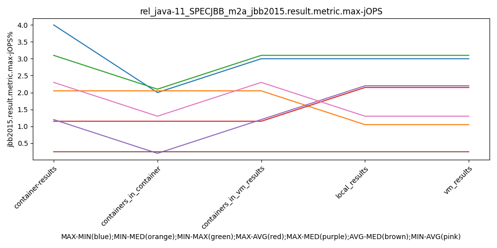
java-11 SPECJBB jbb2015.result.metric.critical-jOPS where all runs of one jdk were made AVARAGE before processing
MAX-MIN 7.0 container-results MAX-MIN 8.0 containers_in_container MAX-MIN 4.0 containers_in_vm_results MAX-MIN 10.0 local_results MAX-MIN 5.0 vm_results MIN-MED 1.0 container-results MIN-MED 5.0 containers_in_container MIN-MED 3.0 containers_in_vm_results MIN-MED 5.0 local_results MIN-MED 1.0 vm_results MIN-MAX 7.0 container-results MIN-MAX 7.0 containers_in_container MIN-MAX 4.0 containers_in_vm_results MIN-MAX 9.0 local_results MIN-MAX 5.0 vm_results MAX-AVG 5.0 container-results MAX-AVG 4.0 containers_in_container MAX-AVG 2.0 containers_in_vm_results MAX-AVG 5.0 local_results MAX-AVG 3.0 vm_results MAX-MED 7.0 container-results MAX-MED 3.0 containers_in_container MAX-MED 1.0 containers_in_vm_results MAX-MED 5.0 local_results MAX-MED 4.0 vm_results AVG-MED 2.0 container-results AVG-MED 1.0 containers_in_container AVG-MED 1.0 containers_in_vm_results AVG-MED 0.0 local_results AVG-MED 1.0 vm_results MIN-AVG 2.0 container-results MIN-AVG 4.0 containers_in_container MIN-AVG 2.0 containers_in_vm_results MIN-AVG 5.0 local_results MIN-AVG 2.0 vm_results
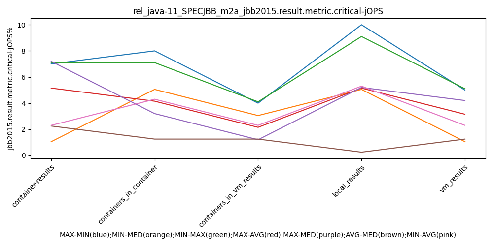
java-11 SPECJBB jbb2015.result.metric.max-jOPS where all runs of one jdk are treated as INDIVIDUAL items
MAX-MIN 7.0 container-results MAX-MIN 8.0 containers_in_container MAX-MIN 8.0 containers_in_vm_results MAX-MIN 10.0 local_results MAX-MIN 14.0 vm_results MIN-MED 3.0 container-results MIN-MED 5.0 containers_in_container MIN-MED 5.0 containers_in_vm_results MIN-MED 6.0 local_results MIN-MED 5.0 vm_results MIN-MAX 7.0 container-results MIN-MAX 7.0 containers_in_container MIN-MAX 7.0 containers_in_vm_results MIN-MAX 9.0 local_results MIN-MAX 12.0 vm_results MAX-AVG 4.0 container-results MAX-AVG 3.0 containers_in_container MAX-AVG 3.0 containers_in_vm_results MAX-AVG 5.0 local_results MAX-AVG 8.0 vm_results MAX-MED 4.0 container-results MAX-MED 3.0 containers_in_container MAX-MED 3.0 containers_in_vm_results MAX-MED 4.0 local_results MAX-MED 8.0 vm_results AVG-MED 0.0 container-results AVG-MED 0.0 containers_in_container AVG-MED 1.0 containers_in_vm_results AVG-MED 1.0 local_results AVG-MED 0.0 vm_results MIN-AVG 3.0 container-results MIN-AVG 4.0 containers_in_container MIN-AVG 4.0 containers_in_vm_results MIN-AVG 5.0 local_results MIN-AVG 5.0 vm_results
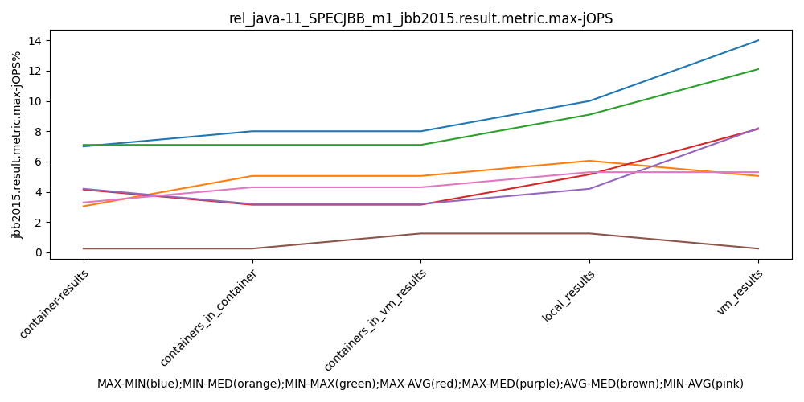
java-11 SPECJBB jbb2015.result.metric.critical-jOPS where all runs of one jdk are treated as INDIVIDUAL items
MAX-MIN 31.0 container-results MAX-MIN 33.0 containers_in_container MAX-MIN 22.0 containers_in_vm_results MAX-MIN 35.0 local_results MAX-MIN 27.0 vm_results MIN-MED 16.0 container-results MIN-MED 19.0 containers_in_container MIN-MED 8.0 containers_in_vm_results MIN-MED 15.0 local_results MIN-MED 12.0 vm_results MIN-MAX 24.0 container-results MIN-MAX 25.0 containers_in_container MIN-MAX 18.0 containers_in_vm_results MIN-MAX 26.0 local_results MIN-MAX 21.0 vm_results MAX-AVG 11.0 container-results MAX-AVG 9.0 containers_in_container MAX-AVG 11.0 containers_in_vm_results MAX-AVG 14.0 local_results MAX-AVG 12.0 vm_results MAX-MED 10.0 container-results MAX-MED 8.0 containers_in_container MAX-MED 11.0 containers_in_vm_results MAX-MED 14.0 local_results MAX-MED 12.0 vm_results AVG-MED 1.0 container-results AVG-MED 1.0 containers_in_container AVG-MED 0.0 containers_in_vm_results AVG-MED 0.0 local_results AVG-MED 0.0 vm_results MIN-AVG 15.0 container-results MIN-AVG 18.0 containers_in_container MIN-AVG 8.0 containers_in_vm_results MIN-AVG 16.0 local_results MIN-AVG 12.0 vm_results
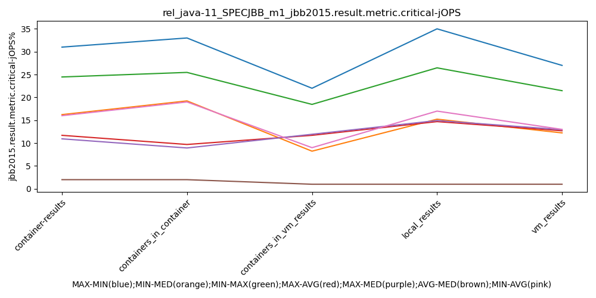
java-11 SPECJBB jbb2015.result.metric.max-jOPS where all runs of one jdk were made MEDIAN before processing
MAX-MIN 3.0 container-results MAX-MIN 4.0 containers_in_container MAX-MIN 5.0 containers_in_vm_results MAX-MIN 2.0 local_results MAX-MIN 6.0 vm_results MIN-MED 2.0 container-results MIN-MED 2.0 containers_in_container MIN-MED 4.0 containers_in_vm_results MIN-MED 1.0 local_results MIN-MED 4.0 vm_results MIN-MAX 3.0 container-results MIN-MAX 4.0 containers_in_container MIN-MAX 5.0 containers_in_vm_results MIN-MAX 2.0 local_results MIN-MAX 5.0 vm_results MAX-AVG 1.0 container-results MAX-AVG 2.0 containers_in_container MAX-AVG 2.0 containers_in_vm_results MAX-AVG 1.0 local_results MAX-AVG 2.0 vm_results MAX-MED 2.0 container-results MAX-MED 2.0 containers_in_container MAX-MED 1.0 containers_in_vm_results MAX-MED 1.0 local_results MAX-MED 1.0 vm_results AVG-MED 0.0 container-results AVG-MED 0.0 containers_in_container AVG-MED 1.0 containers_in_vm_results AVG-MED 0.0 local_results AVG-MED 1.0 vm_results MIN-AVG 2.0 container-results MIN-AVG 2.0 containers_in_container MIN-AVG 3.0 containers_in_vm_results MIN-AVG 1.0 local_results MIN-AVG 3.0 vm_results
java-11 SPECJBB jbb2015.result.metric.critical-jOPS where all runs of one jdk were made MEDIAN before processing
MAX-MIN 9.0 container-results MAX-MIN 9.0 containers_in_container MAX-MIN 3.0 containers_in_vm_results MAX-MIN 3.0 local_results MAX-MIN 8.0 vm_results MIN-MED 5.0 container-results MIN-MED 5.0 containers_in_container MIN-MED 2.0 containers_in_vm_results MIN-MED 2.0 local_results MIN-MED 2.0 vm_results MIN-MAX 8.0 container-results MIN-MAX 8.0 containers_in_container MIN-MAX 3.0 containers_in_vm_results MIN-MAX 3.0 local_results MIN-MAX 8.0 vm_results MAX-AVG 4.0 container-results MAX-AVG 4.0 containers_in_container MAX-AVG 1.0 containers_in_vm_results MAX-AVG 1.0 local_results MAX-AVG 5.0 vm_results MAX-MED 4.0 container-results MAX-MED 3.0 containers_in_container MAX-MED 1.0 containers_in_vm_results MAX-MED 1.0 local_results MAX-MED 6.0 vm_results AVG-MED 0.0 container-results AVG-MED 1.0 containers_in_container AVG-MED 0.0 containers_in_vm_results AVG-MED 0.0 local_results AVG-MED 1.0 vm_results MIN-AVG 5.0 container-results MIN-AVG 4.0 containers_in_container MIN-AVG 2.0 containers_in_vm_results MIN-AVG 2.0 local_results MIN-AVG 3.0 vm_results
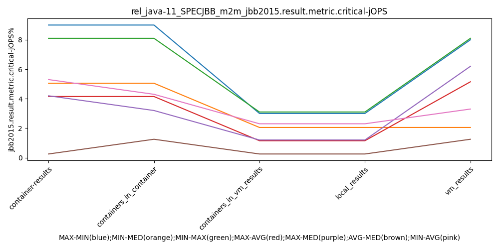
java-17 J2DBENCH j2dbench.geom where all runs of one jdk were made AVARAGE before processing
MAX-MIN 0.0 container-results MAX-MIN 0.0 containers_in_container MAX-MIN 1.0 containers_in_vm_results MAX-MIN 0.0 local_results MAX-MIN 0.0 vm_results MIN-MED 0.0 container-results MIN-MED 0.0 containers_in_container MIN-MED 1.0 containers_in_vm_results MIN-MED 0.0 local_results MIN-MED 0.0 vm_results MIN-MAX 0.0 container-results MIN-MAX 0.0 containers_in_container MIN-MAX 1.0 containers_in_vm_results MIN-MAX 0.0 local_results MIN-MAX 0.0 vm_results MAX-AVG 0.0 container-results MAX-AVG 0.0 containers_in_container MAX-AVG 0.0 containers_in_vm_results MAX-AVG 0.0 local_results MAX-AVG 0.0 vm_results MAX-MED 0.0 container-results MAX-MED 0.0 containers_in_container MAX-MED 0.0 containers_in_vm_results MAX-MED 0.0 local_results MAX-MED 0.0 vm_results AVG-MED 0.0 container-results AVG-MED 0.0 containers_in_container AVG-MED 0.0 containers_in_vm_results AVG-MED 0.0 local_results AVG-MED 0.0 vm_results MIN-AVG 0.0 container-results MIN-AVG 0.0 containers_in_container MIN-AVG 1.0 containers_in_vm_results MIN-AVG 0.0 local_results MIN-AVG 0.0 vm_results
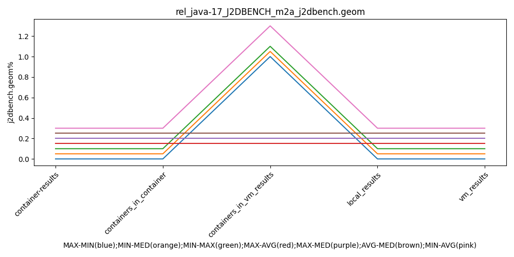
java-17 J2DBENCH j2dbench.geom where all runs of one jdk are treated as INDIVIDUAL items
MAX-MIN 0.0 container-results MAX-MIN 0.0 containers_in_container MAX-MIN 2.0 containers_in_vm_results MAX-MIN 1.0 local_results MAX-MIN 1.0 vm_results MIN-MED 0.0 container-results MIN-MED 0.0 containers_in_container MIN-MED 1.0 containers_in_vm_results MIN-MED 0.0 local_results MIN-MED 0.0 vm_results MIN-MAX 0.0 container-results MIN-MAX 0.0 containers_in_container MIN-MAX 2.0 containers_in_vm_results MIN-MAX 1.0 local_results MIN-MAX 1.0 vm_results MAX-AVG 0.0 container-results MAX-AVG 0.0 containers_in_container MAX-AVG 1.0 containers_in_vm_results MAX-AVG 0.0 local_results MAX-AVG 0.0 vm_results MAX-MED 0.0 container-results MAX-MED 0.0 containers_in_container MAX-MED 1.0 containers_in_vm_results MAX-MED 0.0 local_results MAX-MED 0.0 vm_results AVG-MED 0.0 container-results AVG-MED 0.0 containers_in_container AVG-MED 0.0 containers_in_vm_results AVG-MED 0.0 local_results AVG-MED 0.0 vm_results MIN-AVG 0.0 container-results MIN-AVG 0.0 containers_in_container MIN-AVG 1.0 containers_in_vm_results MIN-AVG 0.0 local_results MIN-AVG 0.0 vm_results
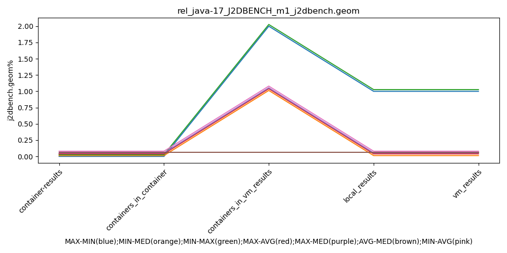
java-17 J2DBENCH j2dbench.geom where all runs of one jdk were made MEDIAN before processing
MAX-MIN 0.0 container-results MAX-MIN 0.0 containers_in_container MAX-MIN 1.0 containers_in_vm_results MAX-MIN 0.0 local_results MAX-MIN 0.0 vm_results MIN-MED 0.0 container-results MIN-MED 0.0 containers_in_container MIN-MED 0.0 containers_in_vm_results MIN-MED 0.0 local_results MIN-MED 0.0 vm_results MIN-MAX 0.0 container-results MIN-MAX 0.0 containers_in_container MIN-MAX 1.0 containers_in_vm_results MIN-MAX 0.0 local_results MIN-MAX 0.0 vm_results MAX-AVG 0.0 container-results MAX-AVG 0.0 containers_in_container MAX-AVG 0.0 containers_in_vm_results MAX-AVG 0.0 local_results MAX-AVG 0.0 vm_results MAX-MED 0.0 container-results MAX-MED 0.0 containers_in_container MAX-MED 0.0 containers_in_vm_results MAX-MED 0.0 local_results MAX-MED 0.0 vm_results AVG-MED 0.0 container-results AVG-MED 0.0 containers_in_container AVG-MED 0.0 containers_in_vm_results AVG-MED 0.0 local_results AVG-MED 0.0 vm_results MIN-AVG 0.0 container-results MIN-AVG 0.0 containers_in_container MIN-AVG 0.0 containers_in_vm_results MIN-AVG 0.0 local_results MIN-AVG 0.0 vm_results
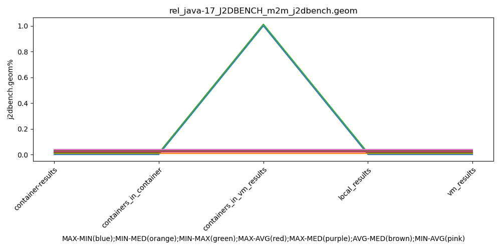
java-17 RADARGUNs1 BasicOperations.Get.Throughput= where all runs of one jdk were made AVARAGE before processing
MAX-MIN 10.0 container-results MAX-MIN 5.0 containers_in_container MAX-MIN 6.0 containers_in_vm_results MAX-MIN 6.0 local_results MAX-MIN 7.0 vm_results MIN-MED 6.0 container-results MIN-MED 5.0 containers_in_container MIN-MED 2.0 containers_in_vm_results MIN-MED 5.0 local_results MIN-MED 3.0 vm_results MIN-MAX 9.0 container-results MIN-MAX 5.0 containers_in_container MIN-MAX 6.0 containers_in_vm_results MIN-MAX 6.0 local_results MIN-MAX 7.0 vm_results MAX-AVG 5.0 container-results MAX-AVG 2.0 containers_in_container MAX-AVG 3.0 containers_in_vm_results MAX-AVG 2.0 local_results MAX-AVG 3.0 vm_results MAX-MED 3.0 container-results MAX-MED 0.0 containers_in_container MAX-MED 4.0 containers_in_vm_results MAX-MED 1.0 local_results MAX-MED 4.0 vm_results AVG-MED 2.0 container-results AVG-MED 2.0 containers_in_container AVG-MED 1.0 containers_in_vm_results AVG-MED 1.0 local_results AVG-MED 1.0 vm_results MIN-AVG 5.0 container-results MIN-AVG 3.0 containers_in_container MIN-AVG 3.0 containers_in_vm_results MIN-AVG 4.0 local_results MIN-AVG 4.0 vm_results
java-17 RADARGUNs1 BasicOperations.Put.ResponseTimeMean where all runs of one jdk were made AVARAGE before processing
MAX-MIN 3.0 container-results MAX-MIN 1.0 containers_in_container MAX-MIN 7.0 containers_in_vm_results MAX-MIN 4.0 local_results MAX-MIN 2.0 vm_results MIN-MED 2.0 container-results MIN-MED 0.0 containers_in_container MIN-MED 5.0 containers_in_vm_results MIN-MED 3.0 local_results MIN-MED 2.0 vm_results MIN-MAX 3.0 container-results MIN-MAX 1.0 containers_in_container MIN-MAX 7.0 containers_in_vm_results MIN-MAX 4.0 local_results MIN-MAX 2.0 vm_results MAX-AVG 1.0 container-results MAX-AVG 1.0 containers_in_container MAX-AVG 3.0 containers_in_vm_results MAX-AVG 2.0 local_results MAX-AVG 1.0 vm_results MAX-MED 0.0 container-results MAX-MED 1.0 containers_in_container MAX-MED 2.0 containers_in_vm_results MAX-MED 1.0 local_results MAX-MED 0.0 vm_results AVG-MED 1.0 container-results AVG-MED 0.0 containers_in_container AVG-MED 0.0 containers_in_vm_results AVG-MED 1.0 local_results AVG-MED 1.0 vm_results MIN-AVG 2.0 container-results MIN-AVG 1.0 containers_in_container MIN-AVG 5.0 containers_in_vm_results MIN-AVG 3.0 local_results MIN-AVG 1.0 vm_results
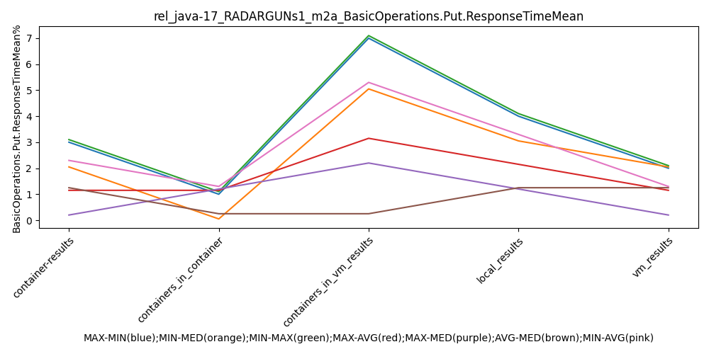
java-17 RADARGUNs1 BasicOperations.Get.ResponseTimeMean where all runs of one jdk were made AVARAGE before processing
MAX-MIN 3.0 container-results MAX-MIN 2.0 containers_in_container MAX-MIN 5.0 containers_in_vm_results MAX-MIN 3.0 local_results MAX-MIN 2.0 vm_results MIN-MED 1.0 container-results MIN-MED 1.0 containers_in_container MIN-MED 2.0 containers_in_vm_results MIN-MED 2.0 local_results MIN-MED 2.0 vm_results MIN-MAX 3.0 container-results MIN-MAX 2.0 containers_in_container MIN-MAX 5.0 containers_in_vm_results MIN-MAX 3.0 local_results MIN-MAX 2.0 vm_results MAX-AVG 2.0 container-results MAX-AVG 1.0 containers_in_container MAX-AVG 3.0 containers_in_vm_results MAX-AVG 1.0 local_results MAX-AVG 1.0 vm_results MAX-MED 3.0 container-results MAX-MED 1.0 containers_in_container MAX-MED 3.0 containers_in_vm_results MAX-MED 1.0 local_results MAX-MED 0.0 vm_results AVG-MED 1.0 container-results AVG-MED 0.0 containers_in_container AVG-MED 0.0 containers_in_vm_results AVG-MED 0.0 local_results AVG-MED 0.0 vm_results MIN-AVG 2.0 container-results MIN-AVG 1.0 containers_in_container MIN-AVG 2.0 containers_in_vm_results MIN-AVG 2.0 local_results MIN-AVG 1.0 vm_results
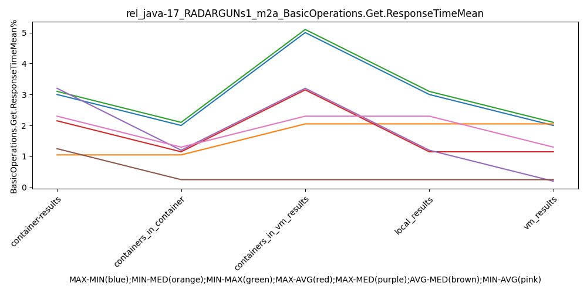
java-17 RADARGUNs1 BasicOperations.Put.Throughput= where all runs of one jdk were made AVARAGE before processing
MAX-MIN 10.0 container-results MAX-MIN 5.0 containers_in_container MAX-MIN 6.0 containers_in_vm_results MAX-MIN 6.0 local_results MAX-MIN 7.0 vm_results MIN-MED 6.0 container-results MIN-MED 5.0 containers_in_container MIN-MED 2.0 containers_in_vm_results MIN-MED 5.0 local_results MIN-MED 3.0 vm_results MIN-MAX 9.0 container-results MIN-MAX 5.0 containers_in_container MIN-MAX 6.0 containers_in_vm_results MIN-MAX 6.0 local_results MIN-MAX 7.0 vm_results MAX-AVG 5.0 container-results MAX-AVG 2.0 containers_in_container MAX-AVG 3.0 containers_in_vm_results MAX-AVG 2.0 local_results MAX-AVG 3.0 vm_results MAX-MED 3.0 container-results MAX-MED 0.0 containers_in_container MAX-MED 4.0 containers_in_vm_results MAX-MED 1.0 local_results MAX-MED 4.0 vm_results AVG-MED 2.0 container-results AVG-MED 2.0 containers_in_container AVG-MED 1.0 containers_in_vm_results AVG-MED 1.0 local_results AVG-MED 1.0 vm_results MIN-AVG 5.0 container-results MIN-AVG 3.0 containers_in_container MIN-AVG 3.0 containers_in_vm_results MIN-AVG 4.0 local_results MIN-AVG 4.0 vm_results
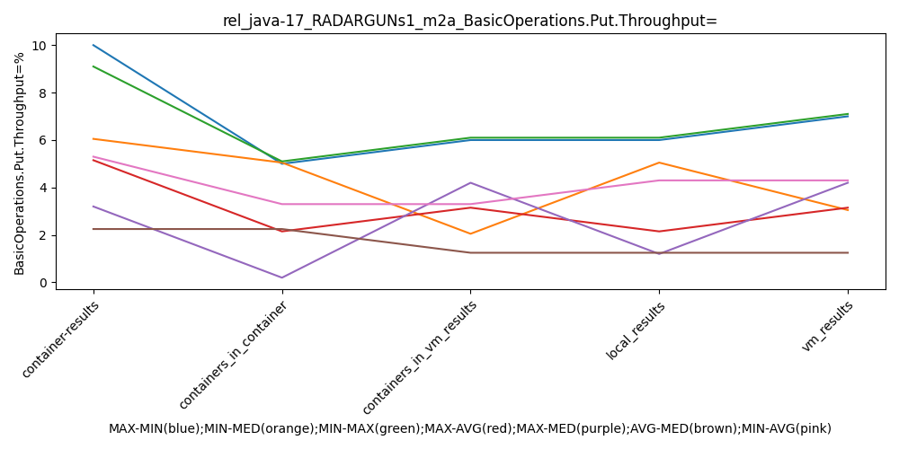
java-17 RADARGUNs1 BasicOperations.Get.Throughput= where all runs of one jdk are treated as INDIVIDUAL items
MAX-MIN 22.0 container-results MAX-MIN 21.0 containers_in_container MAX-MIN 27.0 containers_in_vm_results MAX-MIN 20.0 local_results MAX-MIN 19.0 vm_results MIN-MED 13.0 container-results MIN-MED 15.0 containers_in_container MIN-MED 17.0 containers_in_vm_results MIN-MED 13.0 local_results MIN-MED 12.0 vm_results MIN-MAX 18.0 container-results MIN-MAX 17.0 containers_in_container MIN-MAX 21.0 containers_in_vm_results MIN-MAX 16.0 local_results MIN-MAX 16.0 vm_results MAX-AVG 8.0 container-results MAX-AVG 5.0 containers_in_container MAX-AVG 7.0 containers_in_vm_results MAX-AVG 7.0 local_results MAX-AVG 7.0 vm_results MAX-MED 7.0 container-results MAX-MED 3.0 containers_in_container MAX-MED 6.0 containers_in_vm_results MAX-MED 4.0 local_results MAX-MED 4.0 vm_results AVG-MED 1.0 container-results AVG-MED 2.0 containers_in_container AVG-MED 1.0 containers_in_vm_results AVG-MED 3.0 local_results AVG-MED 3.0 vm_results MIN-AVG 12.0 container-results MIN-AVG 14.0 containers_in_container MIN-AVG 15.0 containers_in_vm_results MIN-AVG 10.0 local_results MIN-AVG 10.0 vm_results
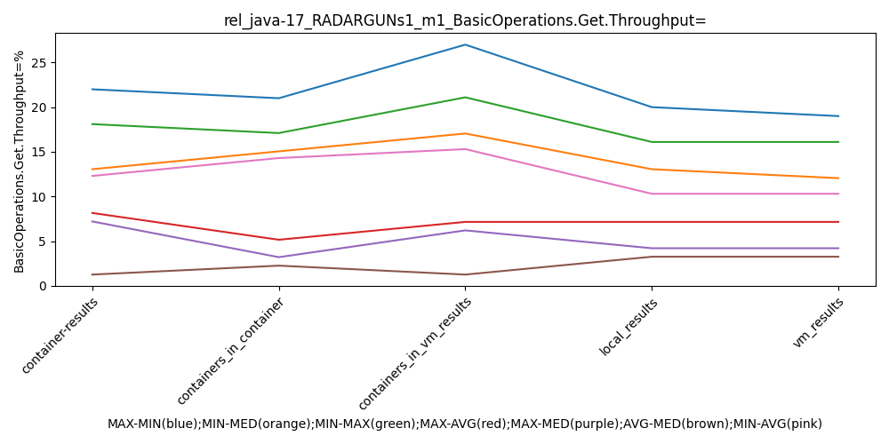
java-17 RADARGUNs1 BasicOperations.Put.ResponseTimeMean where all runs of one jdk are treated as INDIVIDUAL items
MAX-MIN 9.0 container-results MAX-MIN 7.0 containers_in_container MAX-MIN 14.0 containers_in_vm_results MAX-MIN 15.0 local_results MAX-MIN 8.0 vm_results MIN-MED 7.0 container-results MIN-MED 5.0 containers_in_container MIN-MED 9.0 containers_in_vm_results MIN-MED 14.0 local_results MIN-MED 6.0 vm_results MIN-MAX 10.0 container-results MIN-MAX 8.0 containers_in_container MIN-MAX 16.0 containers_in_vm_results MIN-MAX 18.0 local_results MIN-MAX 9.0 vm_results MAX-AVG 4.0 container-results MAX-AVG 2.0 containers_in_container MAX-AVG 7.0 containers_in_vm_results MAX-AVG 4.0 local_results MAX-AVG 3.0 vm_results MAX-MED 3.0 container-results MAX-MED 2.0 containers_in_container MAX-MED 6.0 containers_in_vm_results MAX-MED 4.0 local_results MAX-MED 3.0 vm_results AVG-MED 0.0 container-results AVG-MED 0.0 containers_in_container AVG-MED 1.0 containers_in_vm_results AVG-MED 1.0 local_results AVG-MED 0.0 vm_results MIN-AVG 7.0 container-results MIN-AVG 5.0 containers_in_container MIN-AVG 8.0 containers_in_vm_results MIN-AVG 13.0 local_results MIN-AVG 6.0 vm_results
java-17 RADARGUNs1 BasicOperations.Get.ResponseTimeMean where all runs of one jdk are treated as INDIVIDUAL items
MAX-MIN 10.0 container-results MAX-MIN 10.0 containers_in_container MAX-MIN 11.0 containers_in_vm_results MAX-MIN 9.0 local_results MAX-MIN 8.0 vm_results MIN-MED 6.0 container-results MIN-MED 8.0 containers_in_container MIN-MED 7.0 containers_in_vm_results MIN-MED 6.0 local_results MIN-MED 6.0 vm_results MIN-MAX 11.0 container-results MIN-MAX 11.0 containers_in_container MIN-MAX 12.0 containers_in_vm_results MIN-MAX 10.0 local_results MIN-MAX 9.0 vm_results MAX-AVG 4.0 container-results MAX-AVG 4.0 containers_in_container MAX-AVG 5.0 containers_in_vm_results MAX-AVG 4.0 local_results MAX-AVG 3.0 vm_results MAX-MED 4.0 container-results MAX-MED 3.0 containers_in_container MAX-MED 5.0 containers_in_vm_results MAX-MED 4.0 local_results MAX-MED 2.0 vm_results AVG-MED 0.0 container-results AVG-MED 1.0 containers_in_container AVG-MED 1.0 containers_in_vm_results AVG-MED 0.0 local_results AVG-MED 1.0 vm_results MIN-AVG 6.0 container-results MIN-AVG 7.0 containers_in_container MIN-AVG 6.0 containers_in_vm_results MIN-AVG 6.0 local_results MIN-AVG 6.0 vm_results
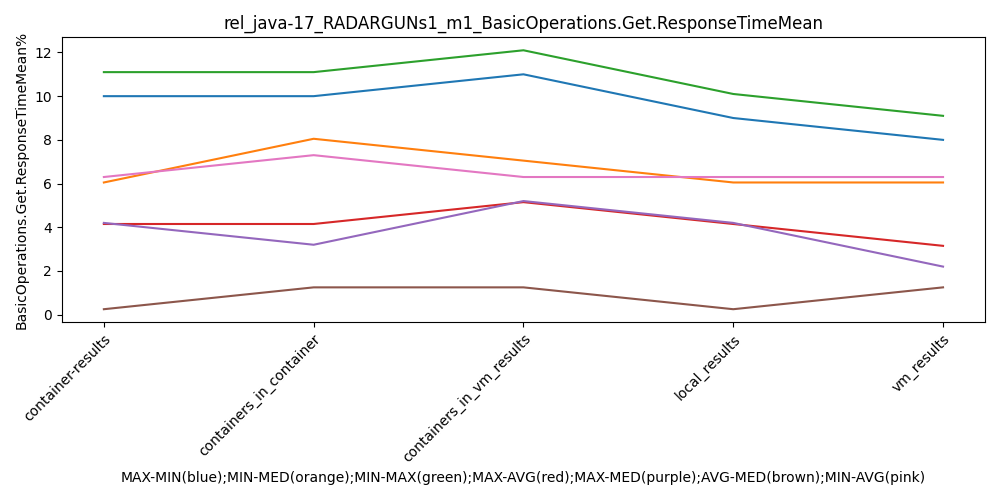
java-17 RADARGUNs1 BasicOperations.Put.Throughput= where all runs of one jdk are treated as INDIVIDUAL items
MAX-MIN 22.0 container-results MAX-MIN 21.0 containers_in_container MAX-MIN 27.0 containers_in_vm_results MAX-MIN 20.0 local_results MAX-MIN 19.0 vm_results MIN-MED 13.0 container-results MIN-MED 15.0 containers_in_container MIN-MED 17.0 containers_in_vm_results MIN-MED 13.0 local_results MIN-MED 12.0 vm_results MIN-MAX 18.0 container-results MIN-MAX 17.0 containers_in_container MIN-MAX 21.0 containers_in_vm_results MIN-MAX 16.0 local_results MIN-MAX 16.0 vm_results MAX-AVG 8.0 container-results MAX-AVG 5.0 containers_in_container MAX-AVG 7.0 containers_in_vm_results MAX-AVG 7.0 local_results MAX-AVG 7.0 vm_results MAX-MED 7.0 container-results MAX-MED 3.0 containers_in_container MAX-MED 6.0 containers_in_vm_results MAX-MED 4.0 local_results MAX-MED 4.0 vm_results AVG-MED 1.0 container-results AVG-MED 2.0 containers_in_container AVG-MED 1.0 containers_in_vm_results AVG-MED 3.0 local_results AVG-MED 3.0 vm_results MIN-AVG 12.0 container-results MIN-AVG 14.0 containers_in_container MIN-AVG 15.0 containers_in_vm_results MIN-AVG 10.0 local_results MIN-AVG 10.0 vm_results
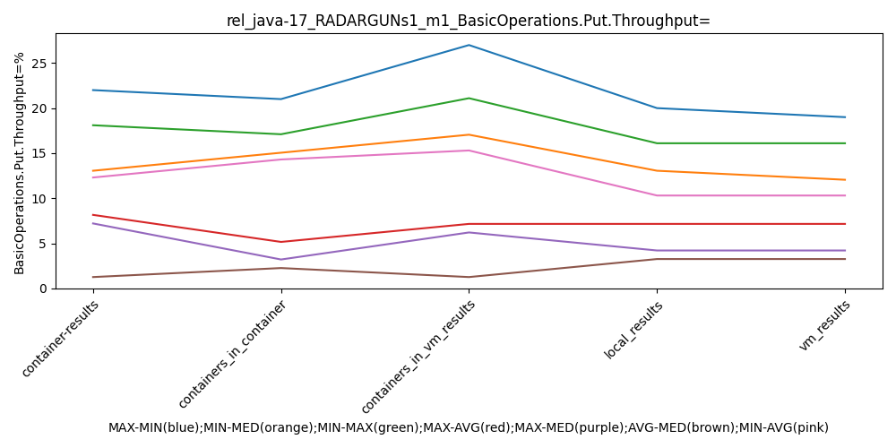
java-17 RADARGUNs1 BasicOperations.Get.Throughput= where all runs of one jdk were made MEDIAN before processing
MAX-MIN 12.0 container-results MAX-MIN 1.0 containers_in_container MAX-MIN 3.0 containers_in_vm_results MAX-MIN 14.0 local_results MAX-MIN 13.0 vm_results MIN-MED 8.0 container-results MIN-MED 1.0 containers_in_container MIN-MED 1.0 containers_in_vm_results MIN-MED 10.0 local_results MIN-MED 10.0 vm_results MIN-MAX 11.0 container-results MIN-MAX 1.0 containers_in_container MIN-MAX 3.0 containers_in_vm_results MIN-MAX 12.0 local_results MIN-MAX 12.0 vm_results MAX-AVG 5.0 container-results MAX-AVG 1.0 containers_in_container MAX-AVG 1.0 containers_in_vm_results MAX-AVG 4.0 local_results MAX-AVG 4.0 vm_results MAX-MED 3.0 container-results MAX-MED 1.0 containers_in_container MAX-MED 2.0 containers_in_vm_results MAX-MED 2.0 local_results MAX-MED 2.0 vm_results AVG-MED 2.0 container-results AVG-MED 0.0 containers_in_container AVG-MED 0.0 containers_in_vm_results AVG-MED 2.0 local_results AVG-MED 2.0 vm_results MIN-AVG 6.0 container-results MIN-AVG 1.0 containers_in_container MIN-AVG 2.0 containers_in_vm_results MIN-AVG 9.0 local_results MIN-AVG 8.0 vm_results
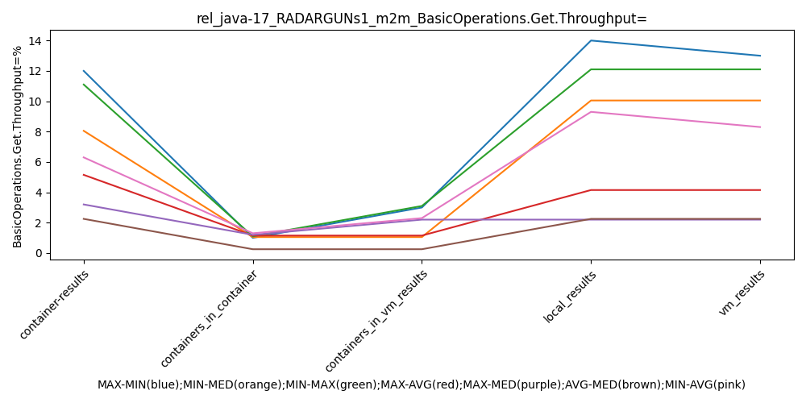
java-17 RADARGUNs1 BasicOperations.Put.ResponseTimeMean where all runs of one jdk were made MEDIAN before processing
MAX-MIN 3.0 container-results MAX-MIN 2.0 containers_in_container MAX-MIN 7.0 containers_in_vm_results MAX-MIN 1.0 local_results MAX-MIN 1.0 vm_results MIN-MED 2.0 container-results MIN-MED 0.0 containers_in_container MIN-MED 5.0 containers_in_vm_results MIN-MED 1.0 local_results MIN-MED 1.0 vm_results MIN-MAX 3.0 container-results MIN-MAX 2.0 containers_in_container MIN-MAX 8.0 containers_in_vm_results MIN-MAX 1.0 local_results MIN-MAX 1.0 vm_results MAX-AVG 1.0 container-results MAX-AVG 1.0 containers_in_container MAX-AVG 3.0 containers_in_vm_results MAX-AVG 1.0 local_results MAX-AVG 0.0 vm_results MAX-MED 0.0 container-results MAX-MED 2.0 containers_in_container MAX-MED 3.0 containers_in_vm_results MAX-MED 0.0 local_results MAX-MED 0.0 vm_results AVG-MED 0.0 container-results AVG-MED 0.0 containers_in_container AVG-MED 0.0 containers_in_vm_results AVG-MED 0.0 local_results AVG-MED 0.0 vm_results MIN-AVG 2.0 container-results MIN-AVG 1.0 containers_in_container MIN-AVG 5.0 containers_in_vm_results MIN-AVG 1.0 local_results MIN-AVG 1.0 vm_results
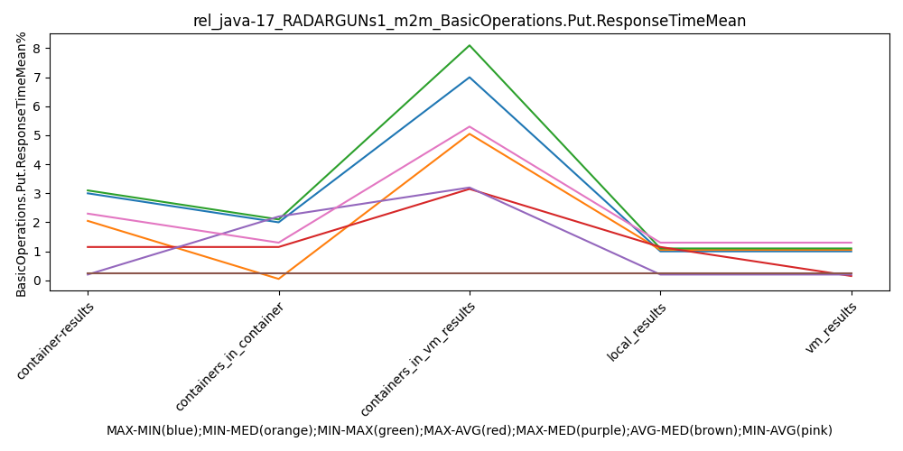
java-17 RADARGUNs1 BasicOperations.Get.ResponseTimeMean where all runs of one jdk were made MEDIAN before processing
MAX-MIN 3.0 container-results MAX-MIN 1.0 containers_in_container MAX-MIN 4.0 containers_in_vm_results MAX-MIN 4.0 local_results MAX-MIN 2.0 vm_results MIN-MED 2.0 container-results MIN-MED 1.0 containers_in_container MIN-MED 1.0 containers_in_vm_results MIN-MED 2.0 local_results MIN-MED 1.0 vm_results MIN-MAX 3.0 container-results MIN-MAX 1.0 containers_in_container MIN-MAX 5.0 containers_in_vm_results MIN-MAX 5.0 local_results MIN-MAX 2.0 vm_results MAX-AVG 1.0 container-results MAX-AVG 0.0 containers_in_container MAX-AVG 2.0 containers_in_vm_results MAX-AVG 2.0 local_results MAX-AVG 1.0 vm_results MAX-MED 1.0 container-results MAX-MED 0.0 containers_in_container MAX-MED 3.0 containers_in_vm_results MAX-MED 3.0 local_results MAX-MED 1.0 vm_results AVG-MED 0.0 container-results AVG-MED 0.0 containers_in_container AVG-MED 1.0 containers_in_vm_results AVG-MED 0.0 local_results AVG-MED 0.0 vm_results MIN-AVG 1.0 container-results MIN-AVG 1.0 containers_in_container MIN-AVG 2.0 containers_in_vm_results MIN-AVG 2.0 local_results MIN-AVG 1.0 vm_results
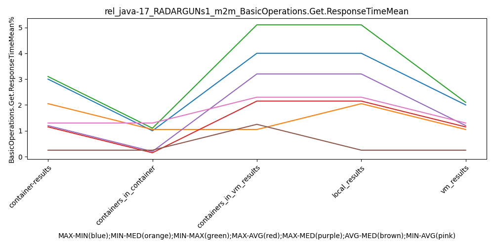
java-17 RADARGUNs1 BasicOperations.Put.Throughput= where all runs of one jdk were made MEDIAN before processing
MAX-MIN 12.0 container-results MAX-MIN 1.0 containers_in_container MAX-MIN 3.0 containers_in_vm_results MAX-MIN 14.0 local_results MAX-MIN 13.0 vm_results MIN-MED 8.0 container-results MIN-MED 1.0 containers_in_container MIN-MED 1.0 containers_in_vm_results MIN-MED 10.0 local_results MIN-MED 10.0 vm_results MIN-MAX 10.0 container-results MIN-MAX 1.0 containers_in_container MIN-MAX 3.0 containers_in_vm_results MIN-MAX 12.0 local_results MIN-MAX 12.0 vm_results MAX-AVG 5.0 container-results MAX-AVG 1.0 containers_in_container MAX-AVG 1.0 containers_in_vm_results MAX-AVG 4.0 local_results MAX-AVG 4.0 vm_results MAX-MED 3.0 container-results MAX-MED 1.0 containers_in_container MAX-MED 2.0 containers_in_vm_results MAX-MED 2.0 local_results MAX-MED 2.0 vm_results AVG-MED 2.0 container-results AVG-MED 0.0 containers_in_container AVG-MED 0.0 containers_in_vm_results AVG-MED 2.0 local_results AVG-MED 2.0 vm_results MIN-AVG 6.0 container-results MIN-AVG 1.0 containers_in_container MIN-AVG 2.0 containers_in_vm_results MIN-AVG 9.0 local_results MIN-AVG 8.0 vm_results
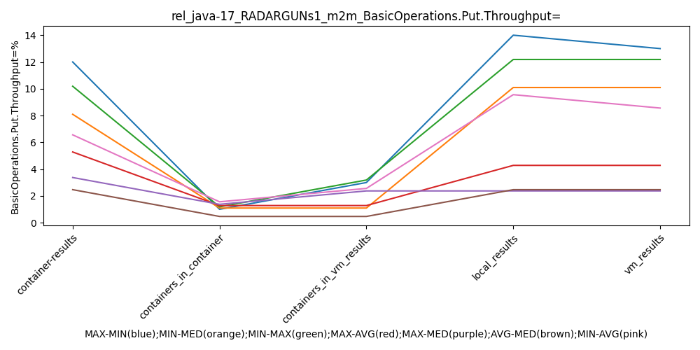
java-17 JMH geom where all runs of one jdk were made AVARAGE before processing
MAX-MIN 2.0 container-results MAX-MIN 0.0 containers_in_container MAX-MIN 2.0 containers_in_vm_results MAX-MIN 1.0 local_results MAX-MIN 0.0 vm_results MIN-MED 1.0 container-results MIN-MED 0.0 containers_in_container MIN-MED 1.0 containers_in_vm_results MIN-MED 0.0 local_results MIN-MED 0.0 vm_results MIN-MAX 2.0 container-results MIN-MAX 0.0 containers_in_container MIN-MAX 2.0 containers_in_vm_results MIN-MAX 1.0 local_results MIN-MAX 0.0 vm_results MAX-AVG 1.0 container-results MAX-AVG 0.0 containers_in_container MAX-AVG 1.0 containers_in_vm_results MAX-AVG 1.0 local_results MAX-AVG 0.0 vm_results MAX-MED 1.0 container-results MAX-MED 0.0 containers_in_container MAX-MED 0.0 containers_in_vm_results MAX-MED 1.0 local_results MAX-MED 0.0 vm_results AVG-MED 0.0 container-results AVG-MED 0.0 containers_in_container AVG-MED 0.0 containers_in_vm_results AVG-MED 0.0 local_results AVG-MED 0.0 vm_results MIN-AVG 1.0 container-results MIN-AVG 0.0 containers_in_container MIN-AVG 1.0 containers_in_vm_results MIN-AVG 0.0 local_results MIN-AVG 0.0 vm_results
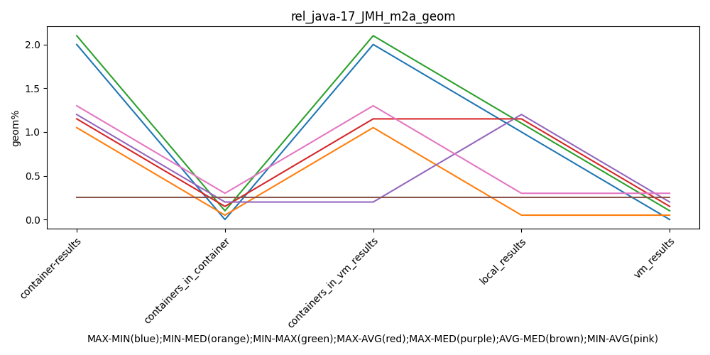
java-17 JMH geom where all runs of one jdk are treated as INDIVIDUAL items
MAX-MIN 5.0 container-results MAX-MIN 1.0 containers_in_container MAX-MIN 4.0 containers_in_vm_results MAX-MIN 4.0 local_results MAX-MIN 1.0 vm_results MIN-MED 4.0 container-results MIN-MED 0.0 containers_in_container MIN-MED 2.0 containers_in_vm_results MIN-MED 0.0 local_results MIN-MED 0.0 vm_results MIN-MAX 5.0 container-results MIN-MAX 1.0 containers_in_container MIN-MAX 4.0 containers_in_vm_results MIN-MAX 3.0 local_results MIN-MAX 1.0 vm_results MAX-AVG 2.0 container-results MAX-AVG 1.0 containers_in_container MAX-AVG 2.0 containers_in_vm_results MAX-AVG 3.0 local_results MAX-AVG 0.0 vm_results MAX-MED 1.0 container-results MAX-MED 0.0 containers_in_container MAX-MED 2.0 containers_in_vm_results MAX-MED 3.0 local_results MAX-MED 1.0 vm_results AVG-MED 0.0 container-results AVG-MED 0.0 containers_in_container AVG-MED 0.0 containers_in_vm_results AVG-MED 0.0 local_results AVG-MED 0.0 vm_results MIN-AVG 3.0 container-results MIN-AVG 0.0 containers_in_container MIN-AVG 2.0 containers_in_vm_results MIN-AVG 1.0 local_results MIN-AVG 0.0 vm_results
java-17 JMH geom where all runs of one jdk were made MEDIAN before processing
MAX-MIN 1.0 container-results MAX-MIN 0.0 containers_in_container MAX-MIN 2.0 containers_in_vm_results MAX-MIN 1.0 local_results MAX-MIN 1.0 vm_results MIN-MED 1.0 container-results MIN-MED 0.0 containers_in_container MIN-MED 1.0 containers_in_vm_results MIN-MED 0.0 local_results MIN-MED 0.0 vm_results MIN-MAX 1.0 container-results MIN-MAX 0.0 containers_in_container MIN-MAX 2.0 containers_in_vm_results MIN-MAX 1.0 local_results MIN-MAX 1.0 vm_results MAX-AVG 0.0 container-results MAX-AVG 0.0 containers_in_container MAX-AVG 1.0 containers_in_vm_results MAX-AVG 0.0 local_results MAX-AVG 0.0 vm_results MAX-MED 0.0 container-results MAX-MED 0.0 containers_in_container MAX-MED 1.0 containers_in_vm_results MAX-MED 0.0 local_results MAX-MED 1.0 vm_results AVG-MED 0.0 container-results AVG-MED 0.0 containers_in_container AVG-MED 0.0 containers_in_vm_results AVG-MED 0.0 local_results AVG-MED 0.0 vm_results MIN-AVG 1.0 container-results MIN-AVG 0.0 containers_in_container MIN-AVG 1.0 containers_in_vm_results MIN-AVG 0.0 local_results MIN-AVG 0.0 vm_results
java-17 RADARGUNs3 BasicOperations.Get.Throughput= where all runs of one jdk were made AVARAGE before processing
MAX-MIN 1.0 container-results MAX-MIN 0.0 containers_in_container MAX-MIN 3.0 containers_in_vm_results MAX-MIN 1.0 local_results MAX-MIN 5.0 vm_results MIN-MED 0.0 container-results MIN-MED 0.0 containers_in_container MIN-MED 2.0 containers_in_vm_results MIN-MED 0.0 local_results MIN-MED 3.0 vm_results MIN-MAX 1.0 container-results MIN-MAX 0.0 containers_in_container MIN-MAX 3.0 containers_in_vm_results MIN-MAX 1.0 local_results MIN-MAX 5.0 vm_results MAX-AVG 0.0 container-results MAX-AVG 0.0 containers_in_container MAX-AVG 2.0 containers_in_vm_results MAX-AVG 1.0 local_results MAX-AVG 2.0 vm_results MAX-MED 0.0 container-results MAX-MED 0.0 containers_in_container MAX-MED 1.0 containers_in_vm_results MAX-MED 1.0 local_results MAX-MED 2.0 vm_results AVG-MED 0.0 container-results AVG-MED 0.0 containers_in_container AVG-MED 0.0 containers_in_vm_results AVG-MED 0.0 local_results AVG-MED 1.0 vm_results MIN-AVG 0.0 container-results MIN-AVG 0.0 containers_in_container MIN-AVG 2.0 containers_in_vm_results MIN-AVG 0.0 local_results MIN-AVG 2.0 vm_results
java-17 RADARGUNs3 BasicOperations.Put.ResponseTimeMean where all runs of one jdk were made AVARAGE before processing
MAX-MIN 0.0 container-results MAX-MIN 0.0 containers_in_container MAX-MIN 3.0 containers_in_vm_results MAX-MIN 1.0 local_results MAX-MIN 5.0 vm_results MIN-MED 0.0 container-results MIN-MED 0.0 containers_in_container MIN-MED 2.0 containers_in_vm_results MIN-MED 0.0 local_results MIN-MED 3.0 vm_results MIN-MAX 0.0 container-results MIN-MAX 0.0 containers_in_container MIN-MAX 3.0 containers_in_vm_results MIN-MAX 1.0 local_results MIN-MAX 5.0 vm_results MAX-AVG 0.0 container-results MAX-AVG 0.0 containers_in_container MAX-AVG 2.0 containers_in_vm_results MAX-AVG 1.0 local_results MAX-AVG 3.0 vm_results MAX-MED 0.0 container-results MAX-MED 0.0 containers_in_container MAX-MED 1.0 containers_in_vm_results MAX-MED 1.0 local_results MAX-MED 2.0 vm_results AVG-MED 0.0 container-results AVG-MED 0.0 containers_in_container AVG-MED 0.0 containers_in_vm_results AVG-MED 0.0 local_results AVG-MED 1.0 vm_results MIN-AVG 0.0 container-results MIN-AVG 0.0 containers_in_container MIN-AVG 2.0 containers_in_vm_results MIN-AVG 0.0 local_results MIN-AVG 3.0 vm_results
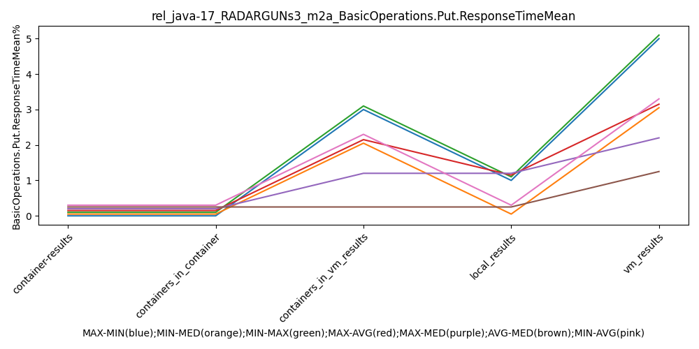
java-17 RADARGUNs3 BasicOperations.Get.ResponseTimeMean where all runs of one jdk were made AVARAGE before processing
MAX-MIN 1.0 container-results MAX-MIN 0.0 containers_in_container MAX-MIN 3.0 containers_in_vm_results MAX-MIN 2.0 local_results MAX-MIN 4.0 vm_results MIN-MED 0.0 container-results MIN-MED 0.0 containers_in_container MIN-MED 2.0 containers_in_vm_results MIN-MED 0.0 local_results MIN-MED 3.0 vm_results MIN-MAX 1.0 container-results MIN-MAX 0.0 containers_in_container MIN-MAX 3.0 containers_in_vm_results MIN-MAX 2.0 local_results MIN-MAX 4.0 vm_results MAX-AVG 0.0 container-results MAX-AVG 0.0 containers_in_container MAX-AVG 1.0 containers_in_vm_results MAX-AVG 1.0 local_results MAX-AVG 2.0 vm_results MAX-MED 0.0 container-results MAX-MED 0.0 containers_in_container MAX-MED 1.0 containers_in_vm_results MAX-MED 1.0 local_results MAX-MED 1.0 vm_results AVG-MED 0.0 container-results AVG-MED 0.0 containers_in_container AVG-MED 0.0 containers_in_vm_results AVG-MED 0.0 local_results AVG-MED 1.0 vm_results MIN-AVG 0.0 container-results MIN-AVG 0.0 containers_in_container MIN-AVG 2.0 containers_in_vm_results MIN-AVG 0.0 local_results MIN-AVG 2.0 vm_results
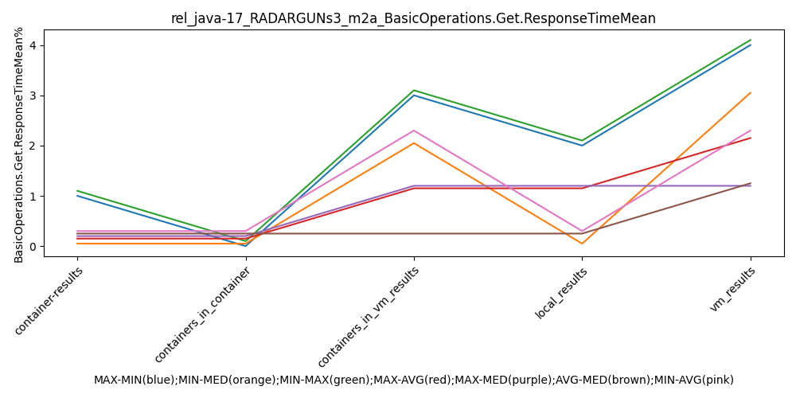
java-17 RADARGUNs3 BasicOperations.Put.Throughput= where all runs of one jdk were made AVARAGE before processing
MAX-MIN 0.0 container-results MAX-MIN 0.0 containers_in_container MAX-MIN 3.0 containers_in_vm_results MAX-MIN 1.0 local_results MAX-MIN 5.0 vm_results MIN-MED 0.0 container-results MIN-MED 0.0 containers_in_container MIN-MED 2.0 containers_in_vm_results MIN-MED 0.0 local_results MIN-MED 3.0 vm_results MIN-MAX 0.0 container-results MIN-MAX 0.0 containers_in_container MIN-MAX 3.0 containers_in_vm_results MIN-MAX 1.0 local_results MIN-MAX 5.0 vm_results MAX-AVG 0.0 container-results MAX-AVG 0.0 containers_in_container MAX-AVG 2.0 containers_in_vm_results MAX-AVG 1.0 local_results MAX-AVG 2.0 vm_results MAX-MED 0.0 container-results MAX-MED 0.0 containers_in_container MAX-MED 1.0 containers_in_vm_results MAX-MED 1.0 local_results MAX-MED 2.0 vm_results AVG-MED 0.0 container-results AVG-MED 0.0 containers_in_container AVG-MED 0.0 containers_in_vm_results AVG-MED 0.0 local_results AVG-MED 1.0 vm_results MIN-AVG 0.0 container-results MIN-AVG 0.0 containers_in_container MIN-AVG 2.0 containers_in_vm_results MIN-AVG 0.0 local_results MIN-AVG 2.0 vm_results
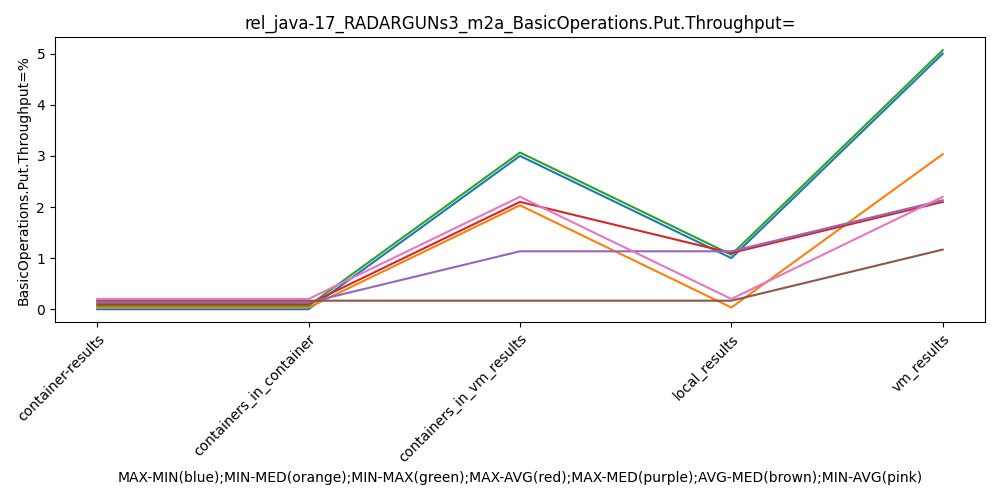
java-17 RADARGUNs3 BasicOperations.Get.Throughput= where all runs of one jdk are treated as INDIVIDUAL items
MAX-MIN 2.0 container-results MAX-MIN 2.0 containers_in_container MAX-MIN 7.0 containers_in_vm_results MAX-MIN 3.0 local_results MAX-MIN 13.0 vm_results MIN-MED 1.0 container-results MIN-MED 1.0 containers_in_container MIN-MED 3.0 containers_in_vm_results MIN-MED 1.0 local_results MIN-MED 7.0 vm_results MIN-MAX 2.0 container-results MIN-MAX 2.0 containers_in_container MIN-MAX 7.0 containers_in_vm_results MIN-MAX 3.0 local_results MIN-MAX 12.0 vm_results MAX-AVG 1.0 container-results MAX-AVG 1.0 containers_in_container MAX-AVG 3.0 containers_in_vm_results MAX-AVG 1.0 local_results MAX-AVG 5.0 vm_results MAX-MED 1.0 container-results MAX-MED 1.0 containers_in_container MAX-MED 3.0 containers_in_vm_results MAX-MED 1.0 local_results MAX-MED 5.0 vm_results AVG-MED 0.0 container-results AVG-MED 0.0 containers_in_container AVG-MED 0.0 containers_in_vm_results AVG-MED 0.0 local_results AVG-MED 0.0 vm_results MIN-AVG 1.0 container-results MIN-AVG 1.0 containers_in_container MIN-AVG 3.0 containers_in_vm_results MIN-AVG 1.0 local_results MIN-AVG 7.0 vm_results
java-17 RADARGUNs3 BasicOperations.Put.ResponseTimeMean where all runs of one jdk are treated as INDIVIDUAL items
MAX-MIN 2.0 container-results MAX-MIN 1.0 containers_in_container MAX-MIN 6.0 containers_in_vm_results MAX-MIN 2.0 local_results MAX-MIN 13.0 vm_results MIN-MED 1.0 container-results MIN-MED 1.0 containers_in_container MIN-MED 4.0 containers_in_vm_results MIN-MED 1.0 local_results MIN-MED 9.0 vm_results MIN-MAX 2.0 container-results MIN-MAX 1.0 containers_in_container MIN-MAX 7.0 containers_in_vm_results MIN-MAX 2.0 local_results MIN-MAX 15.0 vm_results MAX-AVG 0.0 container-results MAX-AVG 1.0 containers_in_container MAX-AVG 3.0 containers_in_vm_results MAX-AVG 1.0 local_results MAX-AVG 6.0 vm_results MAX-MED 0.0 container-results MAX-MED 1.0 containers_in_container MAX-MED 3.0 containers_in_vm_results MAX-MED 1.0 local_results MAX-MED 5.0 vm_results AVG-MED 0.0 container-results AVG-MED 0.0 containers_in_container AVG-MED 0.0 containers_in_vm_results AVG-MED 0.0 local_results AVG-MED 1.0 vm_results MIN-AVG 1.0 container-results MIN-AVG 1.0 containers_in_container MIN-AVG 3.0 containers_in_vm_results MIN-AVG 1.0 local_results MIN-AVG 9.0 vm_results
java-17 RADARGUNs3 BasicOperations.Get.ResponseTimeMean where all runs of one jdk are treated as INDIVIDUAL items
MAX-MIN 2.0 container-results MAX-MIN 3.0 containers_in_container MAX-MIN 7.0 containers_in_vm_results MAX-MIN 3.0 local_results MAX-MIN 11.0 vm_results MIN-MED 1.0 container-results MIN-MED 1.0 containers_in_container MIN-MED 4.0 containers_in_vm_results MIN-MED 1.0 local_results MIN-MED 6.0 vm_results MIN-MAX 2.0 container-results MIN-MAX 3.0 containers_in_container MIN-MAX 7.0 containers_in_vm_results MIN-MAX 3.0 local_results MIN-MAX 12.0 vm_results MAX-AVG 1.0 container-results MAX-AVG 2.0 containers_in_container MAX-AVG 3.0 containers_in_vm_results MAX-AVG 2.0 local_results MAX-AVG 5.0 vm_results MAX-MED 1.0 container-results MAX-MED 2.0 containers_in_container MAX-MED 3.0 containers_in_vm_results MAX-MED 2.0 local_results MAX-MED 5.0 vm_results AVG-MED 0.0 container-results AVG-MED 0.0 containers_in_container AVG-MED 0.0 containers_in_vm_results AVG-MED 0.0 local_results AVG-MED 0.0 vm_results MIN-AVG 1.0 container-results MIN-AVG 1.0 containers_in_container MIN-AVG 4.0 containers_in_vm_results MIN-AVG 1.0 local_results MIN-AVG 6.0 vm_results
java-17 RADARGUNs3 BasicOperations.Put.Throughput= where all runs of one jdk are treated as INDIVIDUAL items
MAX-MIN 2.0 container-results MAX-MIN 2.0 containers_in_container MAX-MIN 7.0 containers_in_vm_results MAX-MIN 3.0 local_results MAX-MIN 13.0 vm_results MIN-MED 1.0 container-results MIN-MED 1.0 containers_in_container MIN-MED 4.0 containers_in_vm_results MIN-MED 1.0 local_results MIN-MED 7.0 vm_results MIN-MAX 2.0 container-results MIN-MAX 2.0 containers_in_container MIN-MAX 7.0 containers_in_vm_results MIN-MAX 3.0 local_results MIN-MAX 12.0 vm_results MAX-AVG 1.0 container-results MAX-AVG 1.0 containers_in_container MAX-AVG 3.0 containers_in_vm_results MAX-AVG 1.0 local_results MAX-AVG 5.0 vm_results MAX-MED 1.0 container-results MAX-MED 1.0 containers_in_container MAX-MED 3.0 containers_in_vm_results MAX-MED 1.0 local_results MAX-MED 5.0 vm_results AVG-MED 0.0 container-results AVG-MED 0.0 containers_in_container AVG-MED 0.0 containers_in_vm_results AVG-MED 0.0 local_results AVG-MED 0.0 vm_results MIN-AVG 1.0 container-results MIN-AVG 1.0 containers_in_container MIN-AVG 3.0 containers_in_vm_results MIN-AVG 1.0 local_results MIN-AVG 7.0 vm_results
java-17 RADARGUNs3 BasicOperations.Get.Throughput= where all runs of one jdk were made MEDIAN before processing
MAX-MIN 1.0 container-results MAX-MIN 0.0 containers_in_container MAX-MIN 3.0 containers_in_vm_results MAX-MIN 1.0 local_results MAX-MIN 6.0 vm_results MIN-MED 0.0 container-results MIN-MED 0.0 containers_in_container MIN-MED 2.0 containers_in_vm_results MIN-MED 0.0 local_results MIN-MED 4.0 vm_results MIN-MAX 1.0 container-results MIN-MAX 0.0 containers_in_container MIN-MAX 2.0 containers_in_vm_results MIN-MAX 1.0 local_results MIN-MAX 5.0 vm_results MAX-AVG 0.0 container-results MAX-AVG 0.0 containers_in_container MAX-AVG 1.0 containers_in_vm_results MAX-AVG 1.0 local_results MAX-AVG 3.0 vm_results MAX-MED 0.0 container-results MAX-MED 0.0 containers_in_container MAX-MED 1.0 containers_in_vm_results MAX-MED 1.0 local_results MAX-MED 2.0 vm_results AVG-MED 0.0 container-results AVG-MED 0.0 containers_in_container AVG-MED 0.0 containers_in_vm_results AVG-MED 0.0 local_results AVG-MED 1.0 vm_results MIN-AVG 0.0 container-results MIN-AVG 0.0 containers_in_container MIN-AVG 1.0 containers_in_vm_results MIN-AVG 1.0 local_results MIN-AVG 3.0 vm_results
java-17 RADARGUNs3 BasicOperations.Put.ResponseTimeMean where all runs of one jdk were made MEDIAN before processing
MAX-MIN 0.0 container-results MAX-MIN 1.0 containers_in_container MAX-MIN 2.0 containers_in_vm_results MAX-MIN 1.0 local_results MAX-MIN 6.0 vm_results MIN-MED 0.0 container-results MIN-MED 0.0 containers_in_container MIN-MED 1.0 containers_in_vm_results MIN-MED 0.0 local_results MIN-MED 4.0 vm_results MIN-MAX 0.0 container-results MIN-MAX 1.0 containers_in_container MIN-MAX 2.0 containers_in_vm_results MIN-MAX 1.0 local_results MIN-MAX 6.0 vm_results MAX-AVG 0.0 container-results MAX-AVG 0.0 containers_in_container MAX-AVG 1.0 containers_in_vm_results MAX-AVG 1.0 local_results MAX-AVG 3.0 vm_results MAX-MED 0.0 container-results MAX-MED 0.0 containers_in_container MAX-MED 1.0 containers_in_vm_results MAX-MED 1.0 local_results MAX-MED 2.0 vm_results AVG-MED 0.0 container-results AVG-MED 0.0 containers_in_container AVG-MED 0.0 containers_in_vm_results AVG-MED 0.0 local_results AVG-MED 0.0 vm_results MIN-AVG 0.0 container-results MIN-AVG 0.0 containers_in_container MIN-AVG 1.0 containers_in_vm_results MIN-AVG 0.0 local_results MIN-AVG 3.0 vm_results
java-17 RADARGUNs3 BasicOperations.Get.ResponseTimeMean where all runs of one jdk were made MEDIAN before processing
MAX-MIN 1.0 container-results MAX-MIN 1.0 containers_in_container MAX-MIN 3.0 containers_in_vm_results MAX-MIN 2.0 local_results MAX-MIN 4.0 vm_results MIN-MED 1.0 container-results MIN-MED 0.0 containers_in_container MIN-MED 2.0 containers_in_vm_results MIN-MED 0.0 local_results MIN-MED 3.0 vm_results MIN-MAX 1.0 container-results MIN-MAX 1.0 containers_in_container MIN-MAX 3.0 containers_in_vm_results MIN-MAX 2.0 local_results MIN-MAX 4.0 vm_results MAX-AVG 1.0 container-results MAX-AVG 0.0 containers_in_container MAX-AVG 1.0 containers_in_vm_results MAX-AVG 1.0 local_results MAX-AVG 2.0 vm_results MAX-MED 1.0 container-results MAX-MED 0.0 containers_in_container MAX-MED 1.0 containers_in_vm_results MAX-MED 1.0 local_results MAX-MED 1.0 vm_results AVG-MED 0.0 container-results AVG-MED 0.0 containers_in_container AVG-MED 1.0 containers_in_vm_results AVG-MED 0.0 local_results AVG-MED 1.0 vm_results MIN-AVG 1.0 container-results MIN-AVG 0.0 containers_in_container MIN-AVG 1.0 containers_in_vm_results MIN-AVG 1.0 local_results MIN-AVG 2.0 vm_results
java-17 RADARGUNs3 BasicOperations.Put.Throughput= where all runs of one jdk were made MEDIAN before processing
MAX-MIN 0.0 container-results MAX-MIN 0.0 containers_in_container MAX-MIN 3.0 containers_in_vm_results MAX-MIN 1.0 local_results MAX-MIN 6.0 vm_results MIN-MED 0.0 container-results MIN-MED 0.0 containers_in_container MIN-MED 2.0 containers_in_vm_results MIN-MED 1.0 local_results MIN-MED 4.0 vm_results MIN-MAX 0.0 container-results MIN-MAX 0.0 containers_in_container MIN-MAX 3.0 containers_in_vm_results MIN-MAX 1.0 local_results MIN-MAX 5.0 vm_results MAX-AVG 0.0 container-results MAX-AVG 0.0 containers_in_container MAX-AVG 1.0 containers_in_vm_results MAX-AVG 1.0 local_results MAX-AVG 3.0 vm_results MAX-MED 0.0 container-results MAX-MED 0.0 containers_in_container MAX-MED 1.0 containers_in_vm_results MAX-MED 1.0 local_results MAX-MED 2.0 vm_results AVG-MED 0.0 container-results AVG-MED 0.0 containers_in_container AVG-MED 0.0 containers_in_vm_results AVG-MED 0.0 local_results AVG-MED 1.0 vm_results MIN-AVG 0.0 container-results MIN-AVG 0.0 containers_in_container MIN-AVG 1.0 containers_in_vm_results MIN-AVG 1.0 local_results MIN-AVG 3.0 vm_results
java-17 DACAPO geom where all runs of one jdk were made AVARAGE before processing
MAX-MIN 3.0 container-results MAX-MIN 9.0 containers_in_container MAX-MIN 10.0 containers_in_vm_results MAX-MIN 1.0 local_results MAX-MIN 1.0 vm_results MIN-MED 2.0 container-results MIN-MED 5.0 containers_in_container MIN-MED 4.0 containers_in_vm_results MIN-MED 1.0 local_results MIN-MED 1.0 vm_results MIN-MAX 3.0 container-results MIN-MAX 8.0 containers_in_container MIN-MAX 9.0 containers_in_vm_results MIN-MAX 1.0 local_results MIN-MAX 1.0 vm_results MAX-AVG 2.0 container-results MAX-AVG 4.0 containers_in_container MAX-AVG 6.0 containers_in_vm_results MAX-AVG 0.0 local_results MAX-AVG 1.0 vm_results MAX-MED 1.0 container-results MAX-MED 4.0 containers_in_container MAX-MED 6.0 containers_in_vm_results MAX-MED 0.0 local_results MAX-MED 1.0 vm_results AVG-MED 0.0 container-results AVG-MED 0.0 containers_in_container AVG-MED 0.0 containers_in_vm_results AVG-MED 0.0 local_results AVG-MED 0.0 vm_results MIN-AVG 2.0 container-results MIN-AVG 5.0 containers_in_container MIN-AVG 4.0 containers_in_vm_results MIN-AVG 1.0 local_results MIN-AVG 1.0 vm_results
java-17 DACAPO geom where all runs of one jdk are treated as INDIVIDUAL items
MAX-MIN 11.0 container-results MAX-MIN 14.0 containers_in_container MAX-MIN 23.0 containers_in_vm_results MAX-MIN 9.0 local_results MAX-MIN 5.0 vm_results MIN-MED 6.0 container-results MIN-MED 7.0 containers_in_container MIN-MED 4.0 containers_in_vm_results MIN-MED 5.0 local_results MIN-MED 2.0 vm_results MIN-MAX 10.0 container-results MIN-MAX 12.0 containers_in_container MIN-MAX 19.0 containers_in_vm_results MIN-MAX 8.0 local_results MIN-MAX 5.0 vm_results MAX-AVG 5.0 container-results MAX-AVG 6.0 containers_in_container MAX-AVG 17.0 containers_in_vm_results MAX-AVG 4.0 local_results MAX-AVG 2.0 vm_results MAX-MED 5.0 container-results MAX-MED 5.0 containers_in_container MAX-MED 19.0 containers_in_vm_results MAX-MED 4.0 local_results MAX-MED 2.0 vm_results AVG-MED 0.0 container-results AVG-MED 1.0 containers_in_container AVG-MED 1.0 containers_in_vm_results AVG-MED 0.0 local_results AVG-MED 0.0 vm_results MIN-AVG 5.0 container-results MIN-AVG 7.0 containers_in_container MIN-AVG 5.0 containers_in_vm_results MIN-AVG 4.0 local_results MIN-AVG 2.0 vm_results
java-17 DACAPO geom where all runs of one jdk were made MEDIAN before processing
MAX-MIN 3.0 container-results MAX-MIN 10.0 containers_in_container MAX-MIN 21.0 containers_in_vm_results MAX-MIN 3.0 local_results MAX-MIN 2.0 vm_results MIN-MED 2.0 container-results MIN-MED 4.0 containers_in_container MIN-MED 4.0 containers_in_vm_results MIN-MED 2.0 local_results MIN-MED 1.0 vm_results MIN-MAX 3.0 container-results MIN-MAX 9.0 containers_in_container MIN-MAX 18.0 containers_in_vm_results MIN-MAX 3.0 local_results MIN-MAX 2.0 vm_results MAX-AVG 1.0 container-results MAX-AVG 5.0 containers_in_container MAX-AVG 14.0 containers_in_vm_results MAX-AVG 1.0 local_results MAX-AVG 1.0 vm_results MAX-MED 1.0 container-results MAX-MED 5.0 containers_in_container MAX-MED 17.0 containers_in_vm_results MAX-MED 1.0 local_results MAX-MED 1.0 vm_results AVG-MED 0.0 container-results AVG-MED 0.0 containers_in_container AVG-MED 2.0 containers_in_vm_results AVG-MED 0.0 local_results AVG-MED 0.0 vm_results MIN-AVG 2.0 container-results MIN-AVG 4.0 containers_in_container MIN-AVG 6.0 containers_in_vm_results MIN-AVG 2.0 local_results MIN-AVG 1.0 vm_results
java-17 SPECJBB jbb2015.result.metric.max-jOPS where all runs of one jdk were made AVARAGE before processing
MAX-MIN 4.0 container-results MAX-MIN 2.0 containers_in_container MAX-MIN 2.0 containers_in_vm_results MAX-MIN 1.0 local_results MAX-MIN 1.0 vm_results MIN-MED 2.0 container-results MIN-MED 1.0 containers_in_container MIN-MED 2.0 containers_in_vm_results MIN-MED 1.0 local_results MIN-MED 1.0 vm_results MIN-MAX 3.0 container-results MIN-MAX 2.0 containers_in_container MIN-MAX 2.0 containers_in_vm_results MIN-MAX 1.0 local_results MIN-MAX 1.0 vm_results MAX-AVG 2.0 container-results MAX-AVG 1.0 containers_in_container MAX-AVG 1.0 containers_in_vm_results MAX-AVG 0.0 local_results MAX-AVG 1.0 vm_results MAX-MED 1.0 container-results MAX-MED 1.0 containers_in_container MAX-MED 0.0 containers_in_vm_results MAX-MED 0.0 local_results MAX-MED 0.0 vm_results AVG-MED 0.0 container-results AVG-MED 0.0 containers_in_container AVG-MED 0.0 containers_in_vm_results AVG-MED 0.0 local_results AVG-MED 0.0 vm_results MIN-AVG 2.0 container-results MIN-AVG 1.0 containers_in_container MIN-AVG 1.0 containers_in_vm_results MIN-AVG 1.0 local_results MIN-AVG 1.0 vm_results
java-17 SPECJBB jbb2015.result.metric.critical-jOPS where all runs of one jdk were made AVARAGE before processing
MAX-MIN 6.0 container-results MAX-MIN 4.0 containers_in_container MAX-MIN 5.0 containers_in_vm_results MAX-MIN 1.0 local_results MAX-MIN 4.0 vm_results MIN-MED 3.0 container-results MIN-MED 0.0 containers_in_container MIN-MED 4.0 containers_in_vm_results MIN-MED 0.0 local_results MIN-MED 2.0 vm_results MIN-MAX 6.0 container-results MIN-MAX 3.0 containers_in_container MIN-MAX 5.0 containers_in_vm_results MIN-MAX 1.0 local_results MIN-MAX 4.0 vm_results MAX-AVG 3.0 container-results MAX-AVG 2.0 containers_in_container MAX-AVG 2.0 containers_in_vm_results MAX-AVG 1.0 local_results MAX-AVG 2.0 vm_results MAX-MED 3.0 container-results MAX-MED 3.0 containers_in_container MAX-MED 1.0 containers_in_vm_results MAX-MED 1.0 local_results MAX-MED 2.0 vm_results AVG-MED 0.0 container-results AVG-MED 1.0 containers_in_container AVG-MED 1.0 containers_in_vm_results AVG-MED 0.0 local_results AVG-MED 0.0 vm_results MIN-AVG 3.0 container-results MIN-AVG 1.0 containers_in_container MIN-AVG 3.0 containers_in_vm_results MIN-AVG 1.0 local_results MIN-AVG 2.0 vm_results
java-17 SPECJBB jbb2015.result.metric.max-jOPS where all runs of one jdk are treated as INDIVIDUAL items
MAX-MIN 7.0 container-results MAX-MIN 6.0 containers_in_container MAX-MIN 5.0 containers_in_vm_results MAX-MIN 5.0 local_results MAX-MIN 4.0 vm_results MIN-MED 4.0 container-results MIN-MED 2.0 containers_in_container MIN-MED 2.0 containers_in_vm_results MIN-MED 2.0 local_results MIN-MED 2.0 vm_results MIN-MAX 6.0 container-results MIN-MAX 6.0 containers_in_container MIN-MAX 5.0 containers_in_vm_results MIN-MAX 5.0 local_results MIN-MAX 3.0 vm_results MAX-AVG 3.0 container-results MAX-AVG 3.0 containers_in_container MAX-AVG 3.0 containers_in_vm_results MAX-AVG 2.0 local_results MAX-AVG 1.0 vm_results MAX-MED 2.0 container-results MAX-MED 4.0 containers_in_container MAX-MED 2.0 containers_in_vm_results MAX-MED 2.0 local_results MAX-MED 1.0 vm_results AVG-MED 1.0 container-results AVG-MED 0.0 containers_in_container AVG-MED 0.0 containers_in_vm_results AVG-MED 0.0 local_results AVG-MED 0.0 vm_results MIN-AVG 3.0 container-results MIN-AVG 2.0 containers_in_container MIN-AVG 2.0 containers_in_vm_results MIN-AVG 2.0 local_results MIN-AVG 2.0 vm_results
java-17 SPECJBB jbb2015.result.metric.critical-jOPS where all runs of one jdk are treated as INDIVIDUAL items
MAX-MIN 10.0 container-results MAX-MIN 9.0 containers_in_container MAX-MIN 17.0 containers_in_vm_results MAX-MIN 9.0 local_results MAX-MIN 11.0 vm_results MIN-MED 4.0 container-results MIN-MED 4.0 containers_in_container MIN-MED 12.0 containers_in_vm_results MIN-MED 5.0 local_results MIN-MED 6.0 vm_results MIN-MAX 9.0 container-results MIN-MAX 8.0 containers_in_container MIN-MAX 14.0 containers_in_vm_results MIN-MAX 9.0 local_results MIN-MAX 10.0 vm_results MAX-AVG 6.0 container-results MAX-AVG 5.0 containers_in_container MAX-AVG 4.0 containers_in_vm_results MAX-AVG 4.0 local_results MAX-AVG 4.0 vm_results MAX-MED 6.0 container-results MAX-MED 5.0 containers_in_container MAX-MED 3.0 containers_in_vm_results MAX-MED 4.0 local_results MAX-MED 4.0 vm_results AVG-MED 0.0 container-results AVG-MED 0.0 containers_in_container AVG-MED 1.0 containers_in_vm_results AVG-MED 0.0 local_results AVG-MED 0.0 vm_results MIN-AVG 4.0 container-results MIN-AVG 4.0 containers_in_container MIN-AVG 11.0 containers_in_vm_results MIN-AVG 5.0 local_results MIN-AVG 6.0 vm_results
java-17 SPECJBB jbb2015.result.metric.max-jOPS where all runs of one jdk were made MEDIAN before processing
MAX-MIN 4.0 container-results MAX-MIN 3.0 containers_in_container MAX-MIN 2.0 containers_in_vm_results MAX-MIN 2.0 local_results MAX-MIN 2.0 vm_results MIN-MED 2.0 container-results MIN-MED 2.0 containers_in_container MIN-MED 2.0 containers_in_vm_results MIN-MED 1.0 local_results MIN-MED 1.0 vm_results MIN-MAX 3.0 container-results MIN-MAX 3.0 containers_in_container MIN-MAX 2.0 containers_in_vm_results MIN-MAX 2.0 local_results MIN-MAX 2.0 vm_results MAX-AVG 2.0 container-results MAX-AVG 1.0 containers_in_container MAX-AVG 1.0 containers_in_vm_results MAX-AVG 1.0 local_results MAX-AVG 1.0 vm_results MAX-MED 1.0 container-results MAX-MED 1.0 containers_in_container MAX-MED 0.0 containers_in_vm_results MAX-MED 1.0 local_results MAX-MED 1.0 vm_results AVG-MED 1.0 container-results AVG-MED 0.0 containers_in_container AVG-MED 0.0 containers_in_vm_results AVG-MED 0.0 local_results AVG-MED 0.0 vm_results MIN-AVG 2.0 container-results MIN-AVG 2.0 containers_in_container MIN-AVG 2.0 containers_in_vm_results MIN-AVG 1.0 local_results MIN-AVG 1.0 vm_results
java-17 SPECJBB jbb2015.result.metric.critical-jOPS where all runs of one jdk were made MEDIAN before processing
MAX-MIN 6.0 container-results MAX-MIN 5.0 containers_in_container MAX-MIN 4.0 containers_in_vm_results MAX-MIN 2.0 local_results MAX-MIN 3.0 vm_results MIN-MED 3.0 container-results MIN-MED 3.0 containers_in_container MIN-MED 3.0 containers_in_vm_results MIN-MED 1.0 local_results MIN-MED 2.0 vm_results MIN-MAX 5.0 container-results MIN-MAX 5.0 containers_in_container MIN-MAX 4.0 containers_in_vm_results MIN-MAX 2.0 local_results MIN-MAX 3.0 vm_results MAX-AVG 3.0 container-results MAX-AVG 3.0 containers_in_container MAX-AVG 1.0 containers_in_vm_results MAX-AVG 1.0 local_results MAX-AVG 1.0 vm_results MAX-MED 3.0 container-results MAX-MED 2.0 containers_in_container MAX-MED 0.0 containers_in_vm_results MAX-MED 1.0 local_results MAX-MED 1.0 vm_results AVG-MED 0.0 container-results AVG-MED 1.0 containers_in_container AVG-MED 1.0 containers_in_vm_results AVG-MED 0.0 local_results AVG-MED 0.0 vm_results MIN-AVG 2.0 container-results MIN-AVG 2.0 containers_in_container MIN-AVG 3.0 containers_in_vm_results MIN-AVG 1.0 local_results MIN-AVG 2.0 vm_results
java-1.8.0 J2DBENCH j2dbench.geom where all runs of one jdk were made AVARAGE before processing
MAX-MIN 0.0 container-results MAX-MIN 0.0 containers_in_container MAX-MIN 1.0 containers_in_vm_results MAX-MIN 1.0 local_results MAX-MIN 1.0 vm_results MIN-MED 0.0 container-results MIN-MED 0.0 containers_in_container MIN-MED 0.0 containers_in_vm_results MIN-MED 1.0 local_results MIN-MED 0.0 vm_results MIN-MAX 0.0 container-results MIN-MAX 0.0 containers_in_container MIN-MAX 1.0 containers_in_vm_results MIN-MAX 1.0 local_results MIN-MAX 1.0 vm_results MAX-AVG 0.0 container-results MAX-AVG 0.0 containers_in_container MAX-AVG 0.0 containers_in_vm_results MAX-AVG 0.0 local_results MAX-AVG 0.0 vm_results MAX-MED 0.0 container-results MAX-MED 0.0 containers_in_container MAX-MED 1.0 containers_in_vm_results MAX-MED 0.0 local_results MAX-MED 0.0 vm_results AVG-MED 0.0 container-results AVG-MED 0.0 containers_in_container AVG-MED 0.0 containers_in_vm_results AVG-MED 0.0 local_results AVG-MED 0.0 vm_results MIN-AVG 0.0 container-results MIN-AVG 0.0 containers_in_container MIN-AVG 0.0 containers_in_vm_results MIN-AVG 0.0 local_results MIN-AVG 0.0 vm_results
java-1.8.0 J2DBENCH j2dbench.geom where all runs of one jdk are treated as INDIVIDUAL items
MAX-MIN 0.0 container-results MAX-MIN 0.0 containers_in_container MAX-MIN 4.0 containers_in_vm_results MAX-MIN 3.0 local_results MAX-MIN 2.0 vm_results MIN-MED 0.0 container-results MIN-MED 0.0 containers_in_container MIN-MED 2.0 containers_in_vm_results MIN-MED 2.0 local_results MIN-MED 1.0 vm_results MIN-MAX 0.0 container-results MIN-MAX 0.0 containers_in_container MIN-MAX 3.0 containers_in_vm_results MIN-MAX 3.0 local_results MIN-MAX 2.0 vm_results MAX-AVG 0.0 container-results MAX-AVG 0.0 containers_in_container MAX-AVG 2.0 containers_in_vm_results MAX-AVG 1.0 local_results MAX-AVG 1.0 vm_results MAX-MED 0.0 container-results MAX-MED 0.0 containers_in_container MAX-MED 2.0 containers_in_vm_results MAX-MED 1.0 local_results MAX-MED 1.0 vm_results AVG-MED 0.0 container-results AVG-MED 0.0 containers_in_container AVG-MED 0.0 containers_in_vm_results AVG-MED 0.0 local_results AVG-MED 0.0 vm_results MIN-AVG 0.0 container-results MIN-AVG 0.0 containers_in_container MIN-AVG 2.0 containers_in_vm_results MIN-AVG 2.0 local_results MIN-AVG 1.0 vm_results
java-1.8.0 J2DBENCH j2dbench.geom where all runs of one jdk were made MEDIAN before processing
MAX-MIN 0.0 container-results MAX-MIN 0.0 containers_in_container MAX-MIN 1.0 containers_in_vm_results MAX-MIN 2.0 local_results MAX-MIN 1.0 vm_results MIN-MED 0.0 container-results MIN-MED 0.0 containers_in_container MIN-MED 1.0 containers_in_vm_results MIN-MED 1.0 local_results MIN-MED 1.0 vm_results MIN-MAX 0.0 container-results MIN-MAX 0.0 containers_in_container MIN-MAX 1.0 containers_in_vm_results MIN-MAX 1.0 local_results MIN-MAX 1.0 vm_results MAX-AVG 0.0 container-results MAX-AVG 0.0 containers_in_container MAX-AVG 0.0 containers_in_vm_results MAX-AVG 1.0 local_results MAX-AVG 0.0 vm_results MAX-MED 0.0 container-results MAX-MED 0.0 containers_in_container MAX-MED 0.0 containers_in_vm_results MAX-MED 0.0 local_results MAX-MED 0.0 vm_results AVG-MED 0.0 container-results AVG-MED 0.0 containers_in_container AVG-MED 0.0 containers_in_vm_results AVG-MED 0.0 local_results AVG-MED 0.0 vm_results MIN-AVG 0.0 container-results MIN-AVG 0.0 containers_in_container MIN-AVG 1.0 containers_in_vm_results MIN-AVG 1.0 local_results MIN-AVG 1.0 vm_results
java-1.8.0 RADARGUNs1 BasicOperations.Get.Throughput= where all runs of one jdk were made AVARAGE before processing
MAX-MIN 11.0 container-results MAX-MIN 11.0 containers_in_container MAX-MIN 6.0 containers_in_vm_results MAX-MIN 9.0 local_results MAX-MIN 6.0 vm_results MIN-MED 8.0 container-results MIN-MED 5.0 containers_in_container MIN-MED 4.0 containers_in_vm_results MIN-MED 3.0 local_results MIN-MED 3.0 vm_results MIN-MAX 10.0 container-results MIN-MAX 10.0 containers_in_container MIN-MAX 6.0 containers_in_vm_results MIN-MAX 8.0 local_results MIN-MAX 5.0 vm_results MAX-AVG 5.0 container-results MAX-AVG 6.0 containers_in_container MAX-AVG 2.0 containers_in_vm_results MAX-AVG 5.0 local_results MAX-AVG 3.0 vm_results MAX-MED 2.0 container-results MAX-MED 6.0 containers_in_container MAX-MED 2.0 containers_in_vm_results MAX-MED 5.0 local_results MAX-MED 3.0 vm_results AVG-MED 2.0 container-results AVG-MED 0.0 containers_in_container AVG-MED 0.0 containers_in_vm_results AVG-MED 1.0 local_results AVG-MED 0.0 vm_results MIN-AVG 6.0 container-results MIN-AVG 5.0 containers_in_container MIN-AVG 4.0 containers_in_vm_results MIN-AVG 4.0 local_results MIN-AVG 2.0 vm_results
java-1.8.0 RADARGUNs1 BasicOperations.Put.ResponseTimeMean where all runs of one jdk were made AVARAGE before processing
MAX-MIN 6.0 container-results MAX-MIN 4.0 containers_in_container MAX-MIN 3.0 containers_in_vm_results MAX-MIN 2.0 local_results MAX-MIN 3.0 vm_results MIN-MED 3.0 container-results MIN-MED 3.0 containers_in_container MIN-MED 1.0 containers_in_vm_results MIN-MED 2.0 local_results MIN-MED 1.0 vm_results MIN-MAX 6.0 container-results MIN-MAX 4.0 containers_in_container MIN-MAX 3.0 containers_in_vm_results MIN-MAX 2.0 local_results MIN-MAX 3.0 vm_results MAX-AVG 3.0 container-results MAX-AVG 2.0 containers_in_container MAX-AVG 2.0 containers_in_vm_results MAX-AVG 1.0 local_results MAX-AVG 2.0 vm_results MAX-MED 3.0 container-results MAX-MED 1.0 containers_in_container MAX-MED 2.0 containers_in_vm_results MAX-MED 0.0 local_results MAX-MED 2.0 vm_results AVG-MED 0.0 container-results AVG-MED 0.0 containers_in_container AVG-MED 0.0 containers_in_vm_results AVG-MED 0.0 local_results AVG-MED 0.0 vm_results MIN-AVG 3.0 container-results MIN-AVG 3.0 containers_in_container MIN-AVG 1.0 containers_in_vm_results MIN-AVG 1.0 local_results MIN-AVG 1.0 vm_results
java-1.8.0 RADARGUNs1 BasicOperations.Get.ResponseTimeMean where all runs of one jdk were made AVARAGE before processing
MAX-MIN 6.0 container-results MAX-MIN 4.0 containers_in_container MAX-MIN 8.0 containers_in_vm_results MAX-MIN 6.0 local_results MAX-MIN 9.0 vm_results MIN-MED 2.0 container-results MIN-MED 2.0 containers_in_container MIN-MED 1.0 containers_in_vm_results MIN-MED 3.0 local_results MIN-MED 3.0 vm_results MIN-MAX 6.0 container-results MIN-MAX 5.0 containers_in_container MIN-MAX 9.0 containers_in_vm_results MIN-MAX 6.0 local_results MIN-MAX 9.0 vm_results MAX-AVG 3.0 container-results MAX-AVG 2.0 containers_in_container MAX-AVG 6.0 containers_in_vm_results MAX-AVG 3.0 local_results MAX-AVG 5.0 vm_results MAX-MED 3.0 container-results MAX-MED 3.0 containers_in_container MAX-MED 7.0 containers_in_vm_results MAX-MED 3.0 local_results MAX-MED 6.0 vm_results AVG-MED 0.0 container-results AVG-MED 0.0 containers_in_container AVG-MED 1.0 containers_in_vm_results AVG-MED 0.0 local_results AVG-MED 1.0 vm_results MIN-AVG 3.0 container-results MIN-AVG 2.0 containers_in_container MIN-AVG 2.0 containers_in_vm_results MIN-AVG 3.0 local_results MIN-AVG 4.0 vm_results
java-1.8.0 RADARGUNs1 BasicOperations.Put.Throughput= where all runs of one jdk were made AVARAGE before processing
MAX-MIN 11.0 container-results MAX-MIN 11.0 containers_in_container MAX-MIN 6.0 containers_in_vm_results MAX-MIN 9.0 local_results MAX-MIN 6.0 vm_results MIN-MED 8.0 container-results MIN-MED 5.0 containers_in_container MIN-MED 4.0 containers_in_vm_results MIN-MED 3.0 local_results MIN-MED 3.0 vm_results MIN-MAX 10.0 container-results MIN-MAX 10.0 containers_in_container MIN-MAX 6.0 containers_in_vm_results MIN-MAX 8.0 local_results MIN-MAX 5.0 vm_results MAX-AVG 5.0 container-results MAX-AVG 6.0 containers_in_container MAX-AVG 2.0 containers_in_vm_results MAX-AVG 5.0 local_results MAX-AVG 3.0 vm_results MAX-MED 2.0 container-results MAX-MED 6.0 containers_in_container MAX-MED 2.0 containers_in_vm_results MAX-MED 5.0 local_results MAX-MED 3.0 vm_results AVG-MED 2.0 container-results AVG-MED 0.0 containers_in_container AVG-MED 0.0 containers_in_vm_results AVG-MED 1.0 local_results AVG-MED 0.0 vm_results MIN-AVG 6.0 container-results MIN-AVG 5.0 containers_in_container MIN-AVG 4.0 containers_in_vm_results MIN-AVG 4.0 local_results MIN-AVG 2.0 vm_results
java-1.8.0 RADARGUNs1 BasicOperations.Get.Throughput= where all runs of one jdk are treated as INDIVIDUAL items
MAX-MIN 25.0 container-results MAX-MIN 22.0 containers_in_container MAX-MIN 13.0 containers_in_vm_results MAX-MIN 19.0 local_results MAX-MIN 17.0 vm_results MIN-MED 13.0 container-results MIN-MED 14.0 containers_in_container MIN-MED 8.0 containers_in_vm_results MIN-MED 10.0 local_results MIN-MED 10.0 vm_results MIN-MAX 20.0 container-results MIN-MAX 18.0 containers_in_container MIN-MAX 12.0 containers_in_vm_results MIN-MAX 16.0 local_results MIN-MAX 14.0 vm_results MAX-AVG 9.0 container-results MAX-AVG 7.0 containers_in_container MAX-AVG 5.0 containers_in_vm_results MAX-AVG 7.0 local_results MAX-AVG 6.0 vm_results MAX-MED 9.0 container-results MAX-MED 5.0 containers_in_container MAX-MED 4.0 containers_in_vm_results MAX-MED 7.0 local_results MAX-MED 6.0 vm_results AVG-MED 0.0 container-results AVG-MED 2.0 containers_in_container AVG-MED 1.0 containers_in_vm_results AVG-MED 0.0 local_results AVG-MED 0.0 vm_results MIN-AVG 13.0 container-results MIN-AVG 12.0 containers_in_container MIN-AVG 7.0 containers_in_vm_results MIN-AVG 9.0 local_results MIN-AVG 9.0 vm_results
java-1.8.0 RADARGUNs1 BasicOperations.Put.ResponseTimeMean where all runs of one jdk are treated as INDIVIDUAL items
MAX-MIN 10.0 container-results MAX-MIN 13.0 containers_in_container MAX-MIN 8.0 containers_in_vm_results MAX-MIN 5.0 local_results MAX-MIN 8.0 vm_results MIN-MED 6.0 container-results MIN-MED 8.0 containers_in_container MIN-MED 4.0 containers_in_vm_results MIN-MED 3.0 local_results MIN-MED 5.0 vm_results MIN-MAX 11.0 container-results MIN-MAX 14.0 containers_in_container MIN-MAX 8.0 containers_in_vm_results MIN-MAX 6.0 local_results MIN-MAX 8.0 vm_results MAX-AVG 5.0 container-results MAX-AVG 5.0 containers_in_container MAX-AVG 4.0 containers_in_vm_results MAX-AVG 3.0 local_results MAX-AVG 4.0 vm_results MAX-MED 5.0 container-results MAX-MED 5.0 containers_in_container MAX-MED 4.0 containers_in_vm_results MAX-MED 3.0 local_results MAX-MED 4.0 vm_results AVG-MED 0.0 container-results AVG-MED 0.0 containers_in_container AVG-MED 0.0 containers_in_vm_results AVG-MED 0.0 local_results AVG-MED 0.0 vm_results MIN-AVG 6.0 container-results MIN-AVG 8.0 containers_in_container MIN-AVG 4.0 containers_in_vm_results MIN-AVG 3.0 local_results MIN-AVG 5.0 vm_results
java-1.8.0 RADARGUNs1 BasicOperations.Get.ResponseTimeMean where all runs of one jdk are treated as INDIVIDUAL items
MAX-MIN 15.0 container-results MAX-MIN 11.0 containers_in_container MAX-MIN 14.0 containers_in_vm_results MAX-MIN 14.0 local_results MAX-MIN 19.0 vm_results MIN-MED 11.0 container-results MIN-MED 6.0 containers_in_container MIN-MED 10.0 containers_in_vm_results MIN-MED 8.0 local_results MIN-MED 15.0 vm_results MIN-MAX 18.0 container-results MIN-MAX 13.0 containers_in_container MIN-MAX 16.0 containers_in_vm_results MIN-MAX 16.0 local_results MIN-MAX 24.0 vm_results MAX-AVG 6.0 container-results MAX-AVG 6.0 containers_in_container MAX-AVG 7.0 containers_in_vm_results MAX-AVG 7.0 local_results MAX-AVG 9.0 vm_results MAX-MED 6.0 container-results MAX-MED 6.0 containers_in_container MAX-MED 5.0 containers_in_vm_results MAX-MED 7.0 local_results MAX-MED 7.0 vm_results AVG-MED 0.0 container-results AVG-MED 0.0 containers_in_container AVG-MED 2.0 containers_in_vm_results AVG-MED 0.0 local_results AVG-MED 2.0 vm_results MIN-AVG 10.0 container-results MIN-AVG 6.0 containers_in_container MIN-AVG 8.0 containers_in_vm_results MIN-AVG 8.0 local_results MIN-AVG 13.0 vm_results
java-1.8.0 RADARGUNs1 BasicOperations.Put.Throughput= where all runs of one jdk are treated as INDIVIDUAL items
MAX-MIN 25.0 container-results MAX-MIN 22.0 containers_in_container MAX-MIN 13.0 containers_in_vm_results MAX-MIN 19.0 local_results MAX-MIN 17.0 vm_results MIN-MED 13.0 container-results MIN-MED 14.0 containers_in_container MIN-MED 8.0 containers_in_vm_results MIN-MED 10.0 local_results MIN-MED 10.0 vm_results MIN-MAX 20.0 container-results MIN-MAX 18.0 containers_in_container MIN-MAX 12.0 containers_in_vm_results MIN-MAX 16.0 local_results MIN-MAX 14.0 vm_results MAX-AVG 9.0 container-results MAX-AVG 7.0 containers_in_container MAX-AVG 5.0 containers_in_vm_results MAX-AVG 7.0 local_results MAX-AVG 6.0 vm_results MAX-MED 9.0 container-results MAX-MED 5.0 containers_in_container MAX-MED 4.0 containers_in_vm_results MAX-MED 7.0 local_results MAX-MED 6.0 vm_results AVG-MED 0.0 container-results AVG-MED 2.0 containers_in_container AVG-MED 1.0 containers_in_vm_results AVG-MED 0.0 local_results AVG-MED 0.0 vm_results MIN-AVG 13.0 container-results MIN-AVG 12.0 containers_in_container MIN-AVG 7.0 containers_in_vm_results MIN-AVG 9.0 local_results MIN-AVG 9.0 vm_results
java-1.8.0 RADARGUNs1 BasicOperations.Get.Throughput= where all runs of one jdk were made MEDIAN before processing
MAX-MIN 15.0 container-results MAX-MIN 17.0 containers_in_container MAX-MIN 7.0 containers_in_vm_results MAX-MIN 10.0 local_results MAX-MIN 7.0 vm_results MIN-MED 10.0 container-results MIN-MED 10.0 containers_in_container MIN-MED 4.0 containers_in_vm_results MIN-MED 5.0 local_results MIN-MED 3.0 vm_results MIN-MAX 13.0 container-results MIN-MAX 15.0 containers_in_container MIN-MAX 6.0 containers_in_vm_results MIN-MAX 9.0 local_results MIN-MAX 7.0 vm_results MAX-AVG 5.0 container-results MAX-AVG 6.0 containers_in_container MAX-AVG 3.0 containers_in_vm_results MAX-AVG 5.0 local_results MAX-AVG 3.0 vm_results MAX-MED 4.0 container-results MAX-MED 5.0 containers_in_container MAX-MED 2.0 containers_in_vm_results MAX-MED 4.0 local_results MAX-MED 4.0 vm_results AVG-MED 1.0 container-results AVG-MED 1.0 containers_in_container AVG-MED 1.0 containers_in_vm_results AVG-MED 1.0 local_results AVG-MED 0.0 vm_results MIN-AVG 8.0 container-results MIN-AVG 9.0 containers_in_container MIN-AVG 4.0 containers_in_vm_results MIN-AVG 5.0 local_results MIN-AVG 4.0 vm_results
java-1.8.0 RADARGUNs1 BasicOperations.Put.ResponseTimeMean where all runs of one jdk were made MEDIAN before processing
MAX-MIN 6.0 container-results MAX-MIN 3.0 containers_in_container MAX-MIN 3.0 containers_in_vm_results MAX-MIN 3.0 local_results MAX-MIN 2.0 vm_results MIN-MED 3.0 container-results MIN-MED 2.0 containers_in_container MIN-MED 1.0 containers_in_vm_results MIN-MED 2.0 local_results MIN-MED 1.0 vm_results MIN-MAX 6.0 container-results MIN-MAX 3.0 containers_in_container MIN-MAX 3.0 containers_in_vm_results MIN-MAX 3.0 local_results MIN-MAX 2.0 vm_results MAX-AVG 3.0 container-results MAX-AVG 1.0 containers_in_container MAX-AVG 2.0 containers_in_vm_results MAX-AVG 1.0 local_results MAX-AVG 1.0 vm_results MAX-MED 3.0 container-results MAX-MED 1.0 containers_in_container MAX-MED 2.0 containers_in_vm_results MAX-MED 1.0 local_results MAX-MED 2.0 vm_results AVG-MED 0.0 container-results AVG-MED 0.0 containers_in_container AVG-MED 0.0 containers_in_vm_results AVG-MED 0.0 local_results AVG-MED 0.0 vm_results MIN-AVG 3.0 container-results MIN-AVG 2.0 containers_in_container MIN-AVG 1.0 containers_in_vm_results MIN-AVG 2.0 local_results MIN-AVG 1.0 vm_results
java-1.8.0 RADARGUNs1 BasicOperations.Get.ResponseTimeMean where all runs of one jdk were made MEDIAN before processing
MAX-MIN 6.0 container-results MAX-MIN 5.0 containers_in_container MAX-MIN 11.0 containers_in_vm_results MAX-MIN 5.0 local_results MAX-MIN 10.0 vm_results MIN-MED 2.0 container-results MIN-MED 1.0 containers_in_container MIN-MED 6.0 containers_in_vm_results MIN-MED 3.0 local_results MIN-MED 8.0 vm_results MIN-MAX 7.0 container-results MIN-MAX 6.0 containers_in_container MIN-MAX 13.0 containers_in_vm_results MIN-MAX 6.0 local_results MIN-MAX 11.0 vm_results MAX-AVG 4.0 container-results MAX-AVG 3.0 containers_in_container MAX-AVG 6.0 containers_in_vm_results MAX-AVG 2.0 local_results MAX-AVG 5.0 vm_results MAX-MED 4.0 container-results MAX-MED 4.0 containers_in_container MAX-MED 6.0 containers_in_vm_results MAX-MED 2.0 local_results MAX-MED 3.0 vm_results AVG-MED 0.0 container-results AVG-MED 1.0 containers_in_container AVG-MED 0.0 containers_in_vm_results AVG-MED 0.0 local_results AVG-MED 2.0 vm_results MIN-AVG 3.0 container-results MIN-AVG 2.0 containers_in_container MIN-AVG 6.0 containers_in_vm_results MIN-AVG 3.0 local_results MIN-AVG 6.0 vm_results
java-1.8.0 RADARGUNs1 BasicOperations.Put.Throughput= where all runs of one jdk were made MEDIAN before processing
MAX-MIN 15.0 container-results MAX-MIN 17.0 containers_in_container MAX-MIN 7.0 containers_in_vm_results MAX-MIN 10.0 local_results MAX-MIN 7.0 vm_results MIN-MED 10.0 container-results MIN-MED 10.0 containers_in_container MIN-MED 4.0 containers_in_vm_results MIN-MED 5.0 local_results MIN-MED 3.0 vm_results MIN-MAX 13.0 container-results MIN-MAX 15.0 containers_in_container MIN-MAX 6.0 containers_in_vm_results MIN-MAX 9.0 local_results MIN-MAX 7.0 vm_results MAX-AVG 5.0 container-results MAX-AVG 6.0 containers_in_container MAX-AVG 3.0 containers_in_vm_results MAX-AVG 5.0 local_results MAX-AVG 3.0 vm_results MAX-MED 4.0 container-results MAX-MED 5.0 containers_in_container MAX-MED 2.0 containers_in_vm_results MAX-MED 4.0 local_results MAX-MED 4.0 vm_results AVG-MED 1.0 container-results AVG-MED 1.0 containers_in_container AVG-MED 1.0 containers_in_vm_results AVG-MED 1.0 local_results AVG-MED 0.0 vm_results MIN-AVG 8.0 container-results MIN-AVG 9.0 containers_in_container MIN-AVG 4.0 containers_in_vm_results MIN-AVG 5.0 local_results MIN-AVG 4.0 vm_results
java-1.8.0 JMH geom where all runs of one jdk were made AVARAGE before processing
MAX-MIN 9.0 container-results MAX-MIN 8.0 containers_in_container MAX-MIN 9.0 containers_in_vm_results MAX-MIN 9.0 local_results MAX-MIN 7.0 vm_results MIN-MED 8.0 container-results MIN-MED 7.0 containers_in_container MIN-MED 4.0 containers_in_vm_results MIN-MED 7.0 local_results MIN-MED 6.0 vm_results MIN-MAX 9.0 container-results MIN-MAX 7.0 containers_in_container MIN-MAX 8.0 containers_in_vm_results MIN-MAX 8.0 local_results MIN-MAX 7.0 vm_results MAX-AVG 1.0 container-results MAX-AVG 2.0 containers_in_container MAX-AVG 4.0 containers_in_vm_results MAX-AVG 2.0 local_results MAX-AVG 1.0 vm_results MAX-MED 0.0 container-results MAX-MED 1.0 containers_in_container MAX-MED 4.0 containers_in_vm_results MAX-MED 1.0 local_results MAX-MED 1.0 vm_results AVG-MED 1.0 container-results AVG-MED 1.0 containers_in_container AVG-MED 1.0 containers_in_vm_results AVG-MED 1.0 local_results AVG-MED 1.0 vm_results MIN-AVG 7.0 container-results MIN-AVG 6.0 containers_in_container MIN-AVG 5.0 containers_in_vm_results MIN-AVG 6.0 local_results MIN-AVG 6.0 vm_results
java-1.8.0 JMH geom where all runs of one jdk are treated as INDIVIDUAL items
MAX-MIN 11.0 container-results MAX-MIN 9.0 containers_in_container MAX-MIN 10.0 containers_in_vm_results MAX-MIN 13.0 local_results MAX-MIN 8.0 vm_results MIN-MED 9.0 container-results MIN-MED 7.0 containers_in_container MIN-MED 6.0 containers_in_vm_results MIN-MED 8.0 local_results MIN-MED 7.0 vm_results MIN-MAX 10.0 container-results MIN-MAX 8.0 containers_in_container MIN-MAX 9.0 containers_in_vm_results MIN-MAX 12.0 local_results MIN-MAX 7.0 vm_results MAX-AVG 2.0 container-results MAX-AVG 2.0 containers_in_container MAX-AVG 4.0 containers_in_vm_results MAX-AVG 6.0 local_results MAX-AVG 2.0 vm_results MAX-MED 1.0 container-results MAX-MED 1.0 containers_in_container MAX-MED 4.0 containers_in_vm_results MAX-MED 5.0 local_results MAX-MED 1.0 vm_results AVG-MED 1.0 container-results AVG-MED 1.0 containers_in_container AVG-MED 0.0 containers_in_vm_results AVG-MED 1.0 local_results AVG-MED 1.0 vm_results MIN-AVG 8.0 container-results MIN-AVG 6.0 containers_in_container MIN-AVG 5.0 containers_in_vm_results MIN-AVG 7.0 local_results MIN-AVG 6.0 vm_results
java-1.8.0 JMH geom where all runs of one jdk were made MEDIAN before processing
MAX-MIN 10.0 container-results MAX-MIN 8.0 containers_in_container MAX-MIN 9.0 containers_in_vm_results MAX-MIN 8.0 local_results MAX-MIN 8.0 vm_results MIN-MED 8.0 container-results MIN-MED 7.0 containers_in_container MIN-MED 4.0 containers_in_vm_results MIN-MED 6.0 local_results MIN-MED 6.0 vm_results MIN-MAX 9.0 container-results MIN-MAX 7.0 containers_in_container MIN-MAX 8.0 containers_in_vm_results MIN-MAX 7.0 local_results MIN-MAX 7.0 vm_results MAX-AVG 2.0 container-results MAX-AVG 1.0 containers_in_container MAX-AVG 4.0 containers_in_vm_results MAX-AVG 1.0 local_results MAX-AVG 1.0 vm_results MAX-MED 0.0 container-results MAX-MED 1.0 containers_in_container MAX-MED 5.0 containers_in_vm_results MAX-MED 1.0 local_results MAX-MED 1.0 vm_results AVG-MED 1.0 container-results AVG-MED 1.0 containers_in_container AVG-MED 1.0 containers_in_vm_results AVG-MED 1.0 local_results AVG-MED 1.0 vm_results MIN-AVG 7.0 container-results MIN-AVG 6.0 containers_in_container MIN-AVG 5.0 containers_in_vm_results MIN-AVG 6.0 local_results MIN-AVG 6.0 vm_results
java-1.8.0 RADARGUNs3 BasicOperations.Get.Throughput= where all runs of one jdk were made AVARAGE before processing
MAX-MIN 2.0 container-results MAX-MIN 2.0 containers_in_container MAX-MIN 3.0 containers_in_vm_results MAX-MIN 2.0 local_results MAX-MIN 5.0 vm_results MIN-MED 1.0 container-results MIN-MED 1.0 containers_in_container MIN-MED 1.0 containers_in_vm_results MIN-MED 0.0 local_results MIN-MED 4.0 vm_results MIN-MAX 2.0 container-results MIN-MAX 2.0 containers_in_container MIN-MAX 3.0 containers_in_vm_results MIN-MAX 2.0 local_results MIN-MAX 5.0 vm_results MAX-AVG 1.0 container-results MAX-AVG 1.0 containers_in_container MAX-AVG 1.0 containers_in_vm_results MAX-AVG 1.0 local_results MAX-AVG 2.0 vm_results MAX-MED 2.0 container-results MAX-MED 2.0 containers_in_container MAX-MED 1.0 containers_in_vm_results MAX-MED 1.0 local_results MAX-MED 1.0 vm_results AVG-MED 0.0 container-results AVG-MED 0.0 containers_in_container AVG-MED 0.0 containers_in_vm_results AVG-MED 0.0 local_results AVG-MED 1.0 vm_results MIN-AVG 1.0 container-results MIN-AVG 1.0 containers_in_container MIN-AVG 1.0 containers_in_vm_results MIN-AVG 1.0 local_results MIN-AVG 3.0 vm_results
java-1.8.0 RADARGUNs3 BasicOperations.Put.ResponseTimeMean where all runs of one jdk were made AVARAGE before processing
MAX-MIN 2.0 container-results MAX-MIN 2.0 containers_in_container MAX-MIN 3.0 containers_in_vm_results MAX-MIN 2.0 local_results MAX-MIN 5.0 vm_results MIN-MED 1.0 container-results MIN-MED 1.0 containers_in_container MIN-MED 1.0 containers_in_vm_results MIN-MED 0.0 local_results MIN-MED 4.0 vm_results MIN-MAX 2.0 container-results MIN-MAX 2.0 containers_in_container MIN-MAX 3.0 containers_in_vm_results MIN-MAX 2.0 local_results MIN-MAX 5.0 vm_results MAX-AVG 1.0 container-results MAX-AVG 1.0 containers_in_container MAX-AVG 1.0 containers_in_vm_results MAX-AVG 1.0 local_results MAX-AVG 2.0 vm_results MAX-MED 1.0 container-results MAX-MED 2.0 containers_in_container MAX-MED 1.0 containers_in_vm_results MAX-MED 1.0 local_results MAX-MED 1.0 vm_results AVG-MED 0.0 container-results AVG-MED 0.0 containers_in_container AVG-MED 0.0 containers_in_vm_results AVG-MED 0.0 local_results AVG-MED 1.0 vm_results MIN-AVG 1.0 container-results MIN-AVG 1.0 containers_in_container MIN-AVG 1.0 containers_in_vm_results MIN-AVG 1.0 local_results MIN-AVG 3.0 vm_results
java-1.8.0 RADARGUNs3 BasicOperations.Get.ResponseTimeMean where all runs of one jdk were made AVARAGE before processing
MAX-MIN 3.0 container-results MAX-MIN 3.0 containers_in_container MAX-MIN 3.0 containers_in_vm_results MAX-MIN 2.0 local_results MAX-MIN 5.0 vm_results MIN-MED 1.0 container-results MIN-MED 1.0 containers_in_container MIN-MED 1.0 containers_in_vm_results MIN-MED 1.0 local_results MIN-MED 4.0 vm_results MIN-MAX 3.0 container-results MIN-MAX 3.0 containers_in_container MIN-MAX 3.0 containers_in_vm_results MIN-MAX 2.0 local_results MIN-MAX 5.0 vm_results MAX-AVG 1.0 container-results MAX-AVG 1.0 containers_in_container MAX-AVG 2.0 containers_in_vm_results MAX-AVG 1.0 local_results MAX-AVG 2.0 vm_results MAX-MED 2.0 container-results MAX-MED 2.0 containers_in_container MAX-MED 2.0 containers_in_vm_results MAX-MED 1.0 local_results MAX-MED 1.0 vm_results AVG-MED 0.0 container-results AVG-MED 0.0 containers_in_container AVG-MED 0.0 containers_in_vm_results AVG-MED 0.0 local_results AVG-MED 1.0 vm_results MIN-AVG 1.0 container-results MIN-AVG 1.0 containers_in_container MIN-AVG 1.0 containers_in_vm_results MIN-AVG 1.0 local_results MIN-AVG 3.0 vm_results
java-1.8.0 RADARGUNs3 BasicOperations.Put.Throughput= where all runs of one jdk were made AVARAGE before processing
MAX-MIN 2.0 container-results MAX-MIN 2.0 containers_in_container MAX-MIN 3.0 containers_in_vm_results MAX-MIN 2.0 local_results MAX-MIN 5.0 vm_results MIN-MED 1.0 container-results MIN-MED 1.0 containers_in_container MIN-MED 1.0 containers_in_vm_results MIN-MED 0.0 local_results MIN-MED 4.0 vm_results MIN-MAX 2.0 container-results MIN-MAX 2.0 containers_in_container MIN-MAX 3.0 containers_in_vm_results MIN-MAX 2.0 local_results MIN-MAX 5.0 vm_results MAX-AVG 1.0 container-results MAX-AVG 1.0 containers_in_container MAX-AVG 1.0 containers_in_vm_results MAX-AVG 1.0 local_results MAX-AVG 2.0 vm_results MAX-MED 1.0 container-results MAX-MED 2.0 containers_in_container MAX-MED 1.0 containers_in_vm_results MAX-MED 1.0 local_results MAX-MED 1.0 vm_results AVG-MED 0.0 container-results AVG-MED 0.0 containers_in_container AVG-MED 0.0 containers_in_vm_results AVG-MED 0.0 local_results AVG-MED 1.0 vm_results MIN-AVG 1.0 container-results MIN-AVG 1.0 containers_in_container MIN-AVG 1.0 containers_in_vm_results MIN-AVG 1.0 local_results MIN-AVG 3.0 vm_results
java-1.8.0 RADARGUNs3 BasicOperations.Get.Throughput= where all runs of one jdk are treated as INDIVIDUAL items
MAX-MIN 3.0 container-results MAX-MIN 4.0 containers_in_container MAX-MIN 6.0 containers_in_vm_results MAX-MIN 3.0 local_results MAX-MIN 15.0 vm_results MIN-MED 1.0 container-results MIN-MED 2.0 containers_in_container MIN-MED 2.0 containers_in_vm_results MIN-MED 1.0 local_results MIN-MED 9.0 vm_results MIN-MAX 3.0 container-results MIN-MAX 4.0 containers_in_container MIN-MAX 5.0 containers_in_vm_results MIN-MAX 3.0 local_results MIN-MAX 13.0 vm_results MAX-AVG 2.0 container-results MAX-AVG 2.0 containers_in_container MAX-AVG 4.0 containers_in_vm_results MAX-AVG 2.0 local_results MAX-AVG 5.0 vm_results MAX-MED 2.0 container-results MAX-MED 2.0 containers_in_container MAX-MED 4.0 containers_in_vm_results MAX-MED 2.0 local_results MAX-MED 5.0 vm_results AVG-MED 0.0 container-results AVG-MED 0.0 containers_in_container AVG-MED 0.0 containers_in_vm_results AVG-MED 0.0 local_results AVG-MED 0.0 vm_results MIN-AVG 1.0 container-results MIN-AVG 2.0 containers_in_container MIN-AVG 2.0 containers_in_vm_results MIN-AVG 1.0 local_results MIN-AVG 8.0 vm_results
java-1.8.0 RADARGUNs3 BasicOperations.Put.ResponseTimeMean where all runs of one jdk are treated as INDIVIDUAL items
MAX-MIN 3.0 container-results MAX-MIN 3.0 containers_in_container MAX-MIN 6.0 containers_in_vm_results MAX-MIN 2.0 local_results MAX-MIN 14.0 vm_results MIN-MED 2.0 container-results MIN-MED 1.0 containers_in_container MIN-MED 2.0 containers_in_vm_results MIN-MED 1.0 local_results MIN-MED 9.0 vm_results MIN-MAX 4.0 container-results MIN-MAX 3.0 containers_in_container MIN-MAX 6.0 containers_in_vm_results MIN-MAX 3.0 local_results MIN-MAX 16.0 vm_results MAX-AVG 2.0 container-results MAX-AVG 2.0 containers_in_container MAX-AVG 4.0 containers_in_vm_results MAX-AVG 2.0 local_results MAX-AVG 5.0 vm_results MAX-MED 2.0 container-results MAX-MED 2.0 containers_in_container MAX-MED 4.0 containers_in_vm_results MAX-MED 2.0 local_results MAX-MED 5.0 vm_results AVG-MED 0.0 container-results AVG-MED 0.0 containers_in_container AVG-MED 0.0 containers_in_vm_results AVG-MED 0.0 local_results AVG-MED 0.0 vm_results MIN-AVG 2.0 container-results MIN-AVG 1.0 containers_in_container MIN-AVG 2.0 containers_in_vm_results MIN-AVG 1.0 local_results MIN-AVG 9.0 vm_results
java-1.8.0 RADARGUNs3 BasicOperations.Get.ResponseTimeMean where all runs of one jdk are treated as INDIVIDUAL items
MAX-MIN 4.0 container-results MAX-MIN 5.0 containers_in_container MAX-MIN 5.0 containers_in_vm_results MAX-MIN 4.0 local_results MAX-MIN 12.0 vm_results MIN-MED 1.0 container-results MIN-MED 2.0 containers_in_container MIN-MED 3.0 containers_in_vm_results MIN-MED 2.0 local_results MIN-MED 10.0 vm_results MIN-MAX 4.0 container-results MIN-MAX 5.0 containers_in_container MIN-MAX 6.0 containers_in_vm_results MIN-MAX 4.0 local_results MIN-MAX 14.0 vm_results MAX-AVG 2.0 container-results MAX-AVG 2.0 containers_in_container MAX-AVG 3.0 containers_in_vm_results MAX-AVG 2.0 local_results MAX-AVG 4.0 vm_results MAX-MED 2.0 container-results MAX-MED 2.0 containers_in_container MAX-MED 3.0 containers_in_vm_results MAX-MED 3.0 local_results MAX-MED 4.0 vm_results AVG-MED 0.0 container-results AVG-MED 0.0 containers_in_container AVG-MED 0.0 containers_in_vm_results AVG-MED 0.0 local_results AVG-MED 1.0 vm_results MIN-AVG 2.0 container-results MIN-AVG 2.0 containers_in_container MIN-AVG 2.0 containers_in_vm_results MIN-AVG 2.0 local_results MIN-AVG 9.0 vm_results
java-1.8.0 RADARGUNs3 BasicOperations.Put.Throughput= where all runs of one jdk are treated as INDIVIDUAL items
MAX-MIN 3.0 container-results MAX-MIN 4.0 containers_in_container MAX-MIN 6.0 containers_in_vm_results MAX-MIN 3.0 local_results MAX-MIN 15.0 vm_results MIN-MED 1.0 container-results MIN-MED 2.0 containers_in_container MIN-MED 2.0 containers_in_vm_results MIN-MED 1.0 local_results MIN-MED 9.0 vm_results MIN-MAX 3.0 container-results MIN-MAX 4.0 containers_in_container MIN-MAX 5.0 containers_in_vm_results MIN-MAX 3.0 local_results MIN-MAX 13.0 vm_results MAX-AVG 2.0 container-results MAX-AVG 2.0 containers_in_container MAX-AVG 4.0 containers_in_vm_results MAX-AVG 2.0 local_results MAX-AVG 5.0 vm_results MAX-MED 2.0 container-results MAX-MED 2.0 containers_in_container MAX-MED 4.0 containers_in_vm_results MAX-MED 2.0 local_results MAX-MED 5.0 vm_results AVG-MED 0.0 container-results AVG-MED 0.0 containers_in_container AVG-MED 0.0 containers_in_vm_results AVG-MED 0.0 local_results AVG-MED 0.0 vm_results MIN-AVG 1.0 container-results MIN-AVG 2.0 containers_in_container MIN-AVG 2.0 containers_in_vm_results MIN-AVG 1.0 local_results MIN-AVG 9.0 vm_results
java-1.8.0 RADARGUNs3 BasicOperations.Get.Throughput= where all runs of one jdk were made MEDIAN before processing
MAX-MIN 2.0 container-results MAX-MIN 2.0 containers_in_container MAX-MIN 3.0 containers_in_vm_results MAX-MIN 1.0 local_results MAX-MIN 8.0 vm_results MIN-MED 1.0 container-results MIN-MED 1.0 containers_in_container MIN-MED 2.0 containers_in_vm_results MIN-MED 0.0 local_results MIN-MED 5.0 vm_results MIN-MAX 2.0 container-results MIN-MAX 2.0 containers_in_container MIN-MAX 3.0 containers_in_vm_results MIN-MAX 1.0 local_results MIN-MAX 8.0 vm_results MAX-AVG 1.0 container-results MAX-AVG 1.0 containers_in_container MAX-AVG 1.0 containers_in_vm_results MAX-AVG 1.0 local_results MAX-AVG 3.0 vm_results MAX-MED 2.0 container-results MAX-MED 1.0 containers_in_container MAX-MED 1.0 containers_in_vm_results MAX-MED 1.0 local_results MAX-MED 3.0 vm_results AVG-MED 0.0 container-results AVG-MED 0.0 containers_in_container AVG-MED 1.0 containers_in_vm_results AVG-MED 0.0 local_results AVG-MED 0.0 vm_results MIN-AVG 1.0 container-results MIN-AVG 1.0 containers_in_container MIN-AVG 2.0 containers_in_vm_results MIN-AVG 0.0 local_results MIN-AVG 5.0 vm_results
java-1.8.0 RADARGUNs3 BasicOperations.Put.ResponseTimeMean where all runs of one jdk were made MEDIAN before processing
MAX-MIN 2.0 container-results MAX-MIN 2.0 containers_in_container MAX-MIN 3.0 containers_in_vm_results MAX-MIN 2.0 local_results MAX-MIN 8.0 vm_results MIN-MED 1.0 container-results MIN-MED 1.0 containers_in_container MIN-MED 2.0 containers_in_vm_results MIN-MED 0.0 local_results MIN-MED 6.0 vm_results MIN-MAX 2.0 container-results MIN-MAX 2.0 containers_in_container MIN-MAX 3.0 containers_in_vm_results MIN-MAX 2.0 local_results MIN-MAX 9.0 vm_results MAX-AVG 1.0 container-results MAX-AVG 1.0 containers_in_container MAX-AVG 1.0 containers_in_vm_results MAX-AVG 1.0 local_results MAX-AVG 3.0 vm_results MAX-MED 2.0 container-results MAX-MED 1.0 containers_in_container MAX-MED 1.0 containers_in_vm_results MAX-MED 2.0 local_results MAX-MED 3.0 vm_results AVG-MED 0.0 container-results AVG-MED 0.0 containers_in_container AVG-MED 0.0 containers_in_vm_results AVG-MED 0.0 local_results AVG-MED 1.0 vm_results MIN-AVG 1.0 container-results MIN-AVG 1.0 containers_in_container MIN-AVG 2.0 containers_in_vm_results MIN-AVG 0.0 local_results MIN-AVG 5.0 vm_results
java-1.8.0 RADARGUNs3 BasicOperations.Get.ResponseTimeMean where all runs of one jdk were made MEDIAN before processing
MAX-MIN 2.0 container-results MAX-MIN 3.0 containers_in_container MAX-MIN 3.0 containers_in_vm_results MAX-MIN 2.0 local_results MAX-MIN 7.0 vm_results MIN-MED 1.0 container-results MIN-MED 1.0 containers_in_container MIN-MED 2.0 containers_in_vm_results MIN-MED 0.0 local_results MIN-MED 5.0 vm_results MIN-MAX 2.0 container-results MIN-MAX 3.0 containers_in_container MIN-MAX 3.0 containers_in_vm_results MIN-MAX 2.0 local_results MIN-MAX 8.0 vm_results MAX-AVG 1.0 container-results MAX-AVG 1.0 containers_in_container MAX-AVG 1.0 containers_in_vm_results MAX-AVG 1.0 local_results MAX-AVG 3.0 vm_results MAX-MED 1.0 container-results MAX-MED 2.0 containers_in_container MAX-MED 1.0 containers_in_vm_results MAX-MED 2.0 local_results MAX-MED 3.0 vm_results AVG-MED 0.0 container-results AVG-MED 0.0 containers_in_container AVG-MED 1.0 containers_in_vm_results AVG-MED 0.0 local_results AVG-MED 0.0 vm_results MIN-AVG 1.0 container-results MIN-AVG 1.0 containers_in_container MIN-AVG 2.0 containers_in_vm_results MIN-AVG 1.0 local_results MIN-AVG 5.0 vm_results
java-1.8.0 RADARGUNs3 BasicOperations.Put.Throughput= where all runs of one jdk were made MEDIAN before processing
MAX-MIN 2.0 container-results MAX-MIN 2.0 containers_in_container MAX-MIN 3.0 containers_in_vm_results MAX-MIN 1.0 local_results MAX-MIN 8.0 vm_results MIN-MED 1.0 container-results MIN-MED 1.0 containers_in_container MIN-MED 2.0 containers_in_vm_results MIN-MED 0.0 local_results MIN-MED 5.0 vm_results MIN-MAX 2.0 container-results MIN-MAX 2.0 containers_in_container MIN-MAX 3.0 containers_in_vm_results MIN-MAX 1.0 local_results MIN-MAX 8.0 vm_results MAX-AVG 1.0 container-results MAX-AVG 1.0 containers_in_container MAX-AVG 1.0 containers_in_vm_results MAX-AVG 1.0 local_results MAX-AVG 3.0 vm_results MAX-MED 1.0 container-results MAX-MED 1.0 containers_in_container MAX-MED 1.0 containers_in_vm_results MAX-MED 1.0 local_results MAX-MED 3.0 vm_results AVG-MED 0.0 container-results AVG-MED 0.0 containers_in_container AVG-MED 1.0 containers_in_vm_results AVG-MED 0.0 local_results AVG-MED 0.0 vm_results MIN-AVG 1.0 container-results MIN-AVG 1.0 containers_in_container MIN-AVG 2.0 containers_in_vm_results MIN-AVG 0.0 local_results MIN-AVG 5.0 vm_results
java-1.8.0 DACAPO geom where all runs of one jdk were made AVARAGE before processing
MAX-MIN 3.0 container-results MAX-MIN 8.0 containers_in_container MAX-MIN 8.0 containers_in_vm_results MAX-MIN 2.0 local_results MAX-MIN 3.0 vm_results MIN-MED 1.0 container-results MIN-MED 6.0 containers_in_container MIN-MED 2.0 containers_in_vm_results MIN-MED 1.0 local_results MIN-MED 1.0 vm_results MIN-MAX 3.0 container-results MIN-MAX 8.0 containers_in_container MIN-MAX 7.0 containers_in_vm_results MIN-MAX 2.0 local_results MIN-MAX 3.0 vm_results MAX-AVG 2.0 container-results MAX-AVG 3.0 containers_in_container MAX-AVG 5.0 containers_in_vm_results MAX-AVG 1.0 local_results MAX-AVG 2.0 vm_results MAX-MED 2.0 container-results MAX-MED 2.0 containers_in_container MAX-MED 6.0 containers_in_vm_results MAX-MED 1.0 local_results MAX-MED 2.0 vm_results AVG-MED 0.0 container-results AVG-MED 1.0 containers_in_container AVG-MED 1.0 containers_in_vm_results AVG-MED 0.0 local_results AVG-MED 0.0 vm_results MIN-AVG 1.0 container-results MIN-AVG 5.0 containers_in_container MIN-AVG 2.0 containers_in_vm_results MIN-AVG 1.0 local_results MIN-AVG 1.0 vm_results
java-1.8.0 DACAPO geom where all runs of one jdk are treated as INDIVIDUAL items
MAX-MIN 9.0 container-results MAX-MIN 16.0 containers_in_container MAX-MIN 30.0 containers_in_vm_results MAX-MIN 8.0 local_results MAX-MIN 11.0 vm_results MIN-MED 3.0 container-results MIN-MED 5.0 containers_in_container MIN-MED 10.0 containers_in_vm_results MIN-MED 4.0 local_results MIN-MED 4.0 vm_results MIN-MAX 8.0 container-results MIN-MAX 13.0 containers_in_container MIN-MAX 23.0 containers_in_vm_results MIN-MAX 8.0 local_results MIN-MAX 10.0 vm_results MAX-AVG 5.0 container-results MAX-AVG 9.0 containers_in_container MAX-AVG 16.0 containers_in_vm_results MAX-AVG 4.0 local_results MAX-AVG 6.0 vm_results MAX-MED 5.0 container-results MAX-MED 10.0 containers_in_container MAX-MED 16.0 containers_in_vm_results MAX-MED 4.0 local_results MAX-MED 6.0 vm_results AVG-MED 0.0 container-results AVG-MED 0.0 containers_in_container AVG-MED 1.0 containers_in_vm_results AVG-MED 0.0 local_results AVG-MED 0.0 vm_results MIN-AVG 4.0 container-results MIN-AVG 6.0 containers_in_container MIN-AVG 11.0 containers_in_vm_results MIN-AVG 4.0 local_results MIN-AVG 4.0 vm_results
java-1.8.0 DACAPO geom where all runs of one jdk were made MEDIAN before processing
MAX-MIN 2.0 container-results MAX-MIN 16.0 containers_in_container MAX-MIN 4.0 containers_in_vm_results MAX-MIN 2.0 local_results MAX-MIN 4.0 vm_results MIN-MED 1.0 container-results MIN-MED 6.0 containers_in_container MIN-MED 0.0 containers_in_vm_results MIN-MED 1.0 local_results MIN-MED 1.0 vm_results MIN-MAX 2.0 container-results MIN-MAX 13.0 containers_in_container MIN-MAX 4.0 containers_in_vm_results MIN-MAX 2.0 local_results MIN-MAX 4.0 vm_results MAX-AVG 1.0 container-results MAX-AVG 8.0 containers_in_container MAX-AVG 3.0 containers_in_vm_results MAX-AVG 1.0 local_results MAX-AVG 3.0 vm_results MAX-MED 2.0 container-results MAX-MED 8.0 containers_in_container MAX-MED 3.0 containers_in_vm_results MAX-MED 1.0 local_results MAX-MED 3.0 vm_results AVG-MED 0.0 container-results AVG-MED 0.0 containers_in_container AVG-MED 1.0 containers_in_vm_results AVG-MED 0.0 local_results AVG-MED 1.0 vm_results MIN-AVG 1.0 container-results MIN-AVG 6.0 containers_in_container MIN-AVG 1.0 containers_in_vm_results MIN-AVG 1.0 local_results MIN-AVG 1.0 vm_results
java-1.8.0 SPECJBB jbb2015.result.metric.max-jOPS where all runs of one jdk were made AVARAGE before processing
MAX-MIN 2.0 container-results MAX-MIN 4.0 containers_in_container MAX-MIN 3.0 containers_in_vm_results MAX-MIN 3.0 local_results MAX-MIN 1.0 vm_results MIN-MED 1.0 container-results MIN-MED 2.0 containers_in_container MIN-MED 2.0 containers_in_vm_results MIN-MED 1.0 local_results MIN-MED 1.0 vm_results MIN-MAX 2.0 container-results MIN-MAX 3.0 containers_in_container MIN-MAX 3.0 containers_in_vm_results MIN-MAX 2.0 local_results MIN-MAX 1.0 vm_results MAX-AVG 1.0 container-results MAX-AVG 1.0 containers_in_container MAX-AVG 1.0 containers_in_vm_results MAX-AVG 1.0 local_results MAX-AVG 1.0 vm_results MAX-MED 1.0 container-results MAX-MED 1.0 containers_in_container MAX-MED 1.0 containers_in_vm_results MAX-MED 1.0 local_results MAX-MED 1.0 vm_results AVG-MED 0.0 container-results AVG-MED 0.0 containers_in_container AVG-MED 0.0 containers_in_vm_results AVG-MED 0.0 local_results AVG-MED 0.0 vm_results MIN-AVG 1.0 container-results MIN-AVG 2.0 containers_in_container MIN-AVG 2.0 containers_in_vm_results MIN-AVG 1.0 local_results MIN-AVG 1.0 vm_results
java-1.8.0 SPECJBB jbb2015.result.metric.critical-jOPS where all runs of one jdk were made AVARAGE before processing
MAX-MIN 6.0 container-results MAX-MIN 7.0 containers_in_container MAX-MIN 5.0 containers_in_vm_results MAX-MIN 9.0 local_results MAX-MIN 7.0 vm_results MIN-MED 3.0 container-results MIN-MED 1.0 containers_in_container MIN-MED 2.0 containers_in_vm_results MIN-MED 4.0 local_results MIN-MED 2.0 vm_results MIN-MAX 6.0 container-results MIN-MAX 7.0 containers_in_container MIN-MAX 5.0 containers_in_vm_results MIN-MAX 8.0 local_results MIN-MAX 7.0 vm_results MAX-AVG 2.0 container-results MAX-AVG 5.0 containers_in_container MAX-AVG 3.0 containers_in_vm_results MAX-AVG 5.0 local_results MAX-AVG 4.0 vm_results MAX-MED 3.0 container-results MAX-MED 7.0 containers_in_container MAX-MED 3.0 containers_in_vm_results MAX-MED 4.0 local_results MAX-MED 5.0 vm_results AVG-MED 1.0 container-results AVG-MED 1.0 containers_in_container AVG-MED 0.0 containers_in_vm_results AVG-MED 0.0 local_results AVG-MED 1.0 vm_results MIN-AVG 3.0 container-results MIN-AVG 2.0 containers_in_container MIN-AVG 2.0 containers_in_vm_results MIN-AVG 4.0 local_results MIN-AVG 3.0 vm_results
java-1.8.0 SPECJBB jbb2015.result.metric.max-jOPS where all runs of one jdk are treated as INDIVIDUAL items
MAX-MIN 5.0 container-results MAX-MIN 21.0 containers_in_container MAX-MIN 8.0 containers_in_vm_results MAX-MIN 7.0 local_results MAX-MIN 7.0 vm_results MIN-MED 4.0 container-results MIN-MED 15.0 containers_in_container MIN-MED 4.0 containers_in_vm_results MIN-MED 4.0 local_results MIN-MED 4.0 vm_results MIN-MAX 5.0 container-results MIN-MAX 17.0 containers_in_container MIN-MAX 7.0 containers_in_vm_results MIN-MAX 6.0 local_results MIN-MAX 6.0 vm_results MAX-AVG 2.0 container-results MAX-AVG 3.0 containers_in_container MAX-AVG 4.0 containers_in_vm_results MAX-AVG 2.0 local_results MAX-AVG 3.0 vm_results MAX-MED 1.0 container-results MAX-MED 3.0 containers_in_container MAX-MED 4.0 containers_in_vm_results MAX-MED 3.0 local_results MAX-MED 3.0 vm_results AVG-MED 1.0 container-results AVG-MED 0.0 containers_in_container AVG-MED 0.0 containers_in_vm_results AVG-MED 0.0 local_results AVG-MED 0.0 vm_results MIN-AVG 3.0 container-results MIN-AVG 15.0 containers_in_container MIN-AVG 4.0 containers_in_vm_results MIN-AVG 4.0 local_results MIN-AVG 4.0 vm_results
java-1.8.0 SPECJBB jbb2015.result.metric.critical-jOPS where all runs of one jdk are treated as INDIVIDUAL items
MAX-MIN 25.0 container-results MAX-MIN 32.0 containers_in_container MAX-MIN 40.0 containers_in_vm_results MAX-MIN 31.0 local_results MAX-MIN 25.0 vm_results MIN-MED 10.0 container-results MIN-MED 14.0 containers_in_container MIN-MED 13.0 containers_in_vm_results MIN-MED 14.0 local_results MIN-MED 10.0 vm_results MIN-MAX 20.0 container-results MIN-MAX 25.0 containers_in_container MIN-MAX 29.0 containers_in_vm_results MIN-MAX 24.0 local_results MIN-MAX 20.0 vm_results MAX-AVG 11.0 container-results MAX-AVG 15.0 containers_in_container MAX-AVG 21.0 containers_in_vm_results MAX-AVG 13.0 local_results MAX-AVG 13.0 vm_results MAX-MED 12.0 container-results MAX-MED 13.0 containers_in_container MAX-MED 22.0 containers_in_vm_results MAX-MED 13.0 local_results MAX-MED 13.0 vm_results AVG-MED 1.0 container-results AVG-MED 2.0 containers_in_container AVG-MED 1.0 containers_in_vm_results AVG-MED 0.0 local_results AVG-MED 0.0 vm_results MIN-AVG 11.0 container-results MIN-AVG 13.0 containers_in_container MIN-AVG 14.0 containers_in_vm_results MIN-AVG 14.0 local_results MIN-AVG 10.0 vm_results
java-1.8.0 SPECJBB jbb2015.result.metric.max-jOPS where all runs of one jdk were made MEDIAN before processing
MAX-MIN 1.0 container-results MAX-MIN 3.0 containers_in_container MAX-MIN 3.0 containers_in_vm_results MAX-MIN 3.0 local_results MAX-MIN 2.0 vm_results MIN-MED 1.0 container-results MIN-MED 3.0 containers_in_container MIN-MED 1.0 containers_in_vm_results MIN-MED 0.0 local_results MIN-MED 1.0 vm_results MIN-MAX 1.0 container-results MIN-MAX 3.0 containers_in_container MIN-MAX 2.0 containers_in_vm_results MIN-MAX 2.0 local_results MIN-MAX 2.0 vm_results MAX-AVG 1.0 container-results MAX-AVG 1.0 containers_in_container MAX-AVG 1.0 containers_in_vm_results MAX-AVG 2.0 local_results MAX-AVG 1.0 vm_results MAX-MED 0.0 container-results MAX-MED 0.0 containers_in_container MAX-MED 1.0 containers_in_vm_results MAX-MED 3.0 local_results MAX-MED 1.0 vm_results AVG-MED 1.0 container-results AVG-MED 1.0 containers_in_container AVG-MED 0.0 containers_in_vm_results AVG-MED 1.0 local_results AVG-MED 0.0 vm_results MIN-AVG 1.0 container-results MIN-AVG 2.0 containers_in_container MIN-AVG 1.0 containers_in_vm_results MIN-AVG 1.0 local_results MIN-AVG 1.0 vm_results
java-1.8.0 SPECJBB jbb2015.result.metric.critical-jOPS where all runs of one jdk were made MEDIAN before processing
MAX-MIN 10.0 container-results MAX-MIN 11.0 containers_in_container MAX-MIN 12.0 containers_in_vm_results MAX-MIN 7.0 local_results MAX-MIN 10.0 vm_results MIN-MED 3.0 container-results MIN-MED 5.0 containers_in_container MIN-MED 4.0 containers_in_vm_results MIN-MED 4.0 local_results MIN-MED 4.0 vm_results MIN-MAX 9.0 container-results MIN-MAX 10.0 containers_in_container MIN-MAX 11.0 containers_in_vm_results MIN-MAX 7.0 local_results MIN-MAX 9.0 vm_results MAX-AVG 6.0 container-results MAX-AVG 6.0 containers_in_container MAX-AVG 7.0 containers_in_vm_results MAX-AVG 3.0 local_results MAX-AVG 5.0 vm_results MAX-MED 6.0 container-results MAX-MED 6.0 containers_in_container MAX-MED 7.0 containers_in_vm_results MAX-MED 3.0 local_results MAX-MED 6.0 vm_results AVG-MED 1.0 container-results AVG-MED 0.0 containers_in_container AVG-MED 0.0 containers_in_vm_results AVG-MED 0.0 local_results AVG-MED 1.0 vm_results MIN-AVG 4.0 container-results MIN-AVG 5.0 containers_in_container MIN-AVG 5.0 containers_in_vm_results MIN-AVG 4.0 local_results MIN-AVG 4.0 vm_results
For those values, ALL jdks is moreover useless. But can serve as the ONE number if needed
all J2DBENCH j2dbench.geom where all runs of one jdk were made AVARAGE before processing
MAX-MIN 5.0 container-results MAX-MIN 5.0 containers_in_container MAX-MIN 10.0 containers_in_vm_results MAX-MIN 10.0 local_results MAX-MIN 11.0 vm_results MIN-MED 3.0 container-results MIN-MED 3.0 containers_in_container MIN-MED 8.0 containers_in_vm_results MIN-MED 7.0 local_results MIN-MED 7.0 vm_results MIN-MAX 5.0 container-results MIN-MAX 5.0 containers_in_container MIN-MAX 9.0 containers_in_vm_results MIN-MAX 9.0 local_results MIN-MAX 10.0 vm_results MAX-AVG 2.0 container-results MAX-AVG 2.0 containers_in_container MAX-AVG 4.0 containers_in_vm_results MAX-AVG 5.0 local_results MAX-AVG 5.0 vm_results MAX-MED 2.0 container-results MAX-MED 2.0 containers_in_container MAX-MED 1.0 containers_in_vm_results MAX-MED 3.0 local_results MAX-MED 3.0 vm_results AVG-MED 0.0 container-results AVG-MED 0.0 containers_in_container AVG-MED 2.0 containers_in_vm_results AVG-MED 2.0 local_results AVG-MED 2.0 vm_results MIN-AVG 3.0 container-results MIN-AVG 3.0 containers_in_container MIN-AVG 6.0 containers_in_vm_results MIN-AVG 5.0 local_results MIN-AVG 5.0 vm_results
all J2DBENCH j2dbench.geom where all runs of one jdk are treated as INDIVIDUAL items
MAX-MIN 6.0 container-results MAX-MIN 6.0 containers_in_container MAX-MIN 12.0 containers_in_vm_results MAX-MIN 12.0 local_results MAX-MIN 12.0 vm_results MIN-MED 3.0 container-results MIN-MED 4.0 containers_in_container MIN-MED 9.0 containers_in_vm_results MIN-MED 8.0 local_results MIN-MED 8.0 vm_results MIN-MAX 5.0 container-results MIN-MAX 6.0 containers_in_container MIN-MAX 11.0 containers_in_vm_results MIN-MAX 11.0 local_results MIN-MAX 11.0 vm_results MAX-AVG 2.0 container-results MAX-AVG 2.0 containers_in_container MAX-AVG 4.0 containers_in_vm_results MAX-AVG 5.0 local_results MAX-AVG 5.0 vm_results MAX-MED 2.0 container-results MAX-MED 2.0 containers_in_container MAX-MED 2.0 containers_in_vm_results MAX-MED 3.0 local_results MAX-MED 3.0 vm_results AVG-MED 0.0 container-results AVG-MED 0.0 containers_in_container AVG-MED 2.0 containers_in_vm_results AVG-MED 2.0 local_results AVG-MED 2.0 vm_results MIN-AVG 3.0 container-results MIN-AVG 3.0 containers_in_container MIN-AVG 7.0 containers_in_vm_results MIN-AVG 6.0 local_results MIN-AVG 6.0 vm_results
all J2DBENCH j2dbench.geom where all runs of one jdk were made MEDIAN before processing
MAX-MIN 5.0 container-results MAX-MIN 6.0 containers_in_container MAX-MIN 10.0 containers_in_vm_results MAX-MIN 11.0 local_results MAX-MIN 11.0 vm_results MIN-MED 3.0 container-results MIN-MED 3.0 containers_in_container MIN-MED 8.0 containers_in_vm_results MIN-MED 7.0 local_results MIN-MED 7.0 vm_results MIN-MAX 5.0 container-results MIN-MAX 5.0 containers_in_container MIN-MAX 9.0 containers_in_vm_results MIN-MAX 10.0 local_results MIN-MAX 10.0 vm_results MAX-AVG 2.0 container-results MAX-AVG 2.0 containers_in_container MAX-AVG 4.0 containers_in_vm_results MAX-AVG 5.0 local_results MAX-AVG 5.0 vm_results MAX-MED 2.0 container-results MAX-MED 2.0 containers_in_container MAX-MED 1.0 containers_in_vm_results MAX-MED 3.0 local_results MAX-MED 3.0 vm_results AVG-MED 0.0 container-results AVG-MED 0.0 containers_in_container AVG-MED 2.0 containers_in_vm_results AVG-MED 2.0 local_results AVG-MED 2.0 vm_results MIN-AVG 3.0 container-results MIN-AVG 3.0 containers_in_container MIN-AVG 6.0 containers_in_vm_results MIN-AVG 5.0 local_results MIN-AVG 6.0 vm_results
all RADARGUNs1 BasicOperations.Get.Throughput= where all runs of one jdk were made AVARAGE before processing
MAX-MIN 14.0 container-results MAX-MIN 13.0 containers_in_container MAX-MIN 9.0 containers_in_vm_results MAX-MIN 13.0 local_results MAX-MIN 11.0 vm_results MIN-MED 9.0 container-results MIN-MED 7.0 containers_in_container MIN-MED 4.0 containers_in_vm_results MIN-MED 8.0 local_results MIN-MED 7.0 vm_results MIN-MAX 12.0 container-results MIN-MAX 12.0 containers_in_container MIN-MAX 8.0 containers_in_vm_results MIN-MAX 11.0 local_results MIN-MAX 10.0 vm_results MAX-AVG 5.0 container-results MAX-AVG 5.0 containers_in_container MAX-AVG 4.0 containers_in_vm_results MAX-AVG 5.0 local_results MAX-AVG 5.0 vm_results MAX-MED 4.0 container-results MAX-MED 5.0 containers_in_container MAX-MED 4.0 containers_in_vm_results MAX-MED 4.0 local_results MAX-MED 4.0 vm_results AVG-MED 1.0 container-results AVG-MED 0.0 containers_in_container AVG-MED 0.0 containers_in_vm_results AVG-MED 1.0 local_results AVG-MED 1.0 vm_results MIN-AVG 8.0 container-results MIN-AVG 7.0 containers_in_container MIN-AVG 4.0 containers_in_vm_results MIN-AVG 7.0 local_results MIN-AVG 6.0 vm_results
all RADARGUNs1 BasicOperations.Put.ResponseTimeMean where all runs of one jdk were made AVARAGE before processing
MAX-MIN 9.0 container-results MAX-MIN 9.0 containers_in_container MAX-MIN 9.0 containers_in_vm_results MAX-MIN 9.0 local_results MAX-MIN 9.0 vm_results MIN-MED 5.0 container-results MIN-MED 4.0 containers_in_container MIN-MED 2.0 containers_in_vm_results MIN-MED 2.0 local_results MIN-MED 7.0 vm_results MIN-MAX 10.0 container-results MIN-MAX 10.0 containers_in_container MIN-MAX 10.0 containers_in_vm_results MIN-MAX 10.0 local_results MIN-MAX 10.0 vm_results MAX-AVG 5.0 container-results MAX-AVG 5.0 containers_in_container MAX-AVG 6.0 containers_in_vm_results MAX-AVG 5.0 local_results MAX-AVG 4.0 vm_results MAX-MED 5.0 container-results MAX-MED 6.0 containers_in_container MAX-MED 7.0 containers_in_vm_results MAX-MED 7.0 local_results MAX-MED 3.0 vm_results AVG-MED 0.0 container-results AVG-MED 1.0 containers_in_container AVG-MED 1.0 containers_in_vm_results AVG-MED 2.0 local_results AVG-MED 1.0 vm_results MIN-AVG 5.0 container-results MIN-AVG 5.0 containers_in_container MIN-AVG 3.0 containers_in_vm_results MIN-AVG 4.0 local_results MIN-AVG 6.0 vm_results
all RADARGUNs1 BasicOperations.Get.ResponseTimeMean where all runs of one jdk were made AVARAGE before processing
MAX-MIN 6.0 container-results MAX-MIN 5.0 containers_in_container MAX-MIN 8.0 containers_in_vm_results MAX-MIN 8.0 local_results MAX-MIN 12.0 vm_results MIN-MED 3.0 container-results MIN-MED 2.0 containers_in_container MIN-MED 3.0 containers_in_vm_results MIN-MED 6.0 local_results MIN-MED 12.0 vm_results MIN-MAX 7.0 container-results MIN-MAX 6.0 containers_in_container MIN-MAX 9.0 containers_in_vm_results MIN-MAX 8.0 local_results MIN-MAX 14.0 vm_results MAX-AVG 4.0 container-results MAX-AVG 3.0 containers_in_container MAX-AVG 5.0 containers_in_vm_results MAX-AVG 3.0 local_results MAX-AVG 5.0 vm_results MAX-MED 4.0 container-results MAX-MED 3.0 containers_in_container MAX-MED 5.0 containers_in_vm_results MAX-MED 2.0 local_results MAX-MED 2.0 vm_results AVG-MED 0.0 container-results AVG-MED 0.0 containers_in_container AVG-MED 0.0 containers_in_vm_results AVG-MED 0.0 local_results AVG-MED 2.0 vm_results MIN-AVG 3.0 container-results MIN-AVG 2.0 containers_in_container MIN-AVG 3.0 containers_in_vm_results MIN-AVG 5.0 local_results MIN-AVG 9.0 vm_results
all RADARGUNs1 BasicOperations.Put.Throughput= where all runs of one jdk were made AVARAGE before processing
MAX-MIN 14.0 container-results MAX-MIN 13.0 containers_in_container MAX-MIN 9.0 containers_in_vm_results MAX-MIN 13.0 local_results MAX-MIN 11.0 vm_results MIN-MED 9.0 container-results MIN-MED 7.0 containers_in_container MIN-MED 4.0 containers_in_vm_results MIN-MED 8.0 local_results MIN-MED 7.0 vm_results MIN-MAX 12.0 container-results MIN-MAX 12.0 containers_in_container MIN-MAX 8.0 containers_in_vm_results MIN-MAX 11.0 local_results MIN-MAX 10.0 vm_results MAX-AVG 5.0 container-results MAX-AVG 5.0 containers_in_container MAX-AVG 4.0 containers_in_vm_results MAX-AVG 5.0 local_results MAX-AVG 5.0 vm_results MAX-MED 4.0 container-results MAX-MED 5.0 containers_in_container MAX-MED 4.0 containers_in_vm_results MAX-MED 4.0 local_results MAX-MED 4.0 vm_results AVG-MED 1.0 container-results AVG-MED 0.0 containers_in_container AVG-MED 0.0 containers_in_vm_results AVG-MED 1.0 local_results AVG-MED 1.0 vm_results MIN-AVG 8.0 container-results MIN-AVG 7.0 containers_in_container MIN-AVG 4.0 containers_in_vm_results MIN-AVG 7.0 local_results MIN-AVG 6.0 vm_results
all RADARGUNs1 BasicOperations.Get.Throughput= where all runs of one jdk are treated as INDIVIDUAL items
MAX-MIN 28.0 container-results MAX-MIN 26.0 containers_in_container MAX-MIN 27.0 containers_in_vm_results MAX-MIN 22.0 local_results MAX-MIN 24.0 vm_results MIN-MED 16.0 container-results MIN-MED 16.0 containers_in_container MIN-MED 15.0 containers_in_vm_results MIN-MED 14.0 local_results MIN-MED 13.0 vm_results MIN-MAX 22.0 container-results MIN-MAX 21.0 containers_in_container MIN-MAX 21.0 containers_in_vm_results MIN-MAX 18.0 local_results MIN-MAX 20.0 vm_results MAX-AVG 9.0 container-results MAX-AVG 8.0 containers_in_container MAX-AVG 9.0 containers_in_vm_results MAX-AVG 7.0 local_results MAX-AVG 9.0 vm_results MAX-MED 7.0 container-results MAX-MED 5.0 containers_in_container MAX-MED 8.0 containers_in_vm_results MAX-MED 5.0 local_results MAX-MED 8.0 vm_results AVG-MED 1.0 container-results AVG-MED 2.0 containers_in_container AVG-MED 1.0 containers_in_vm_results AVG-MED 2.0 local_results AVG-MED 1.0 vm_results MIN-AVG 15.0 container-results MIN-AVG 15.0 containers_in_container MIN-AVG 14.0 containers_in_vm_results MIN-AVG 12.0 local_results MIN-AVG 13.0 vm_results
all RADARGUNs1 BasicOperations.Put.ResponseTimeMean where all runs of one jdk are treated as INDIVIDUAL items
MAX-MIN 15.0 container-results MAX-MIN 15.0 containers_in_container MAX-MIN 18.0 containers_in_vm_results MAX-MIN 15.0 local_results MAX-MIN 14.0 vm_results MIN-MED 8.0 container-results MIN-MED 10.0 containers_in_container MIN-MED 9.0 containers_in_vm_results MIN-MED 8.0 local_results MIN-MED 10.0 vm_results MIN-MAX 17.0 container-results MIN-MAX 18.0 containers_in_container MIN-MAX 22.0 containers_in_vm_results MIN-MAX 18.0 local_results MIN-MAX 17.0 vm_results MAX-AVG 7.0 container-results MAX-AVG 7.0 containers_in_container MAX-AVG 10.0 containers_in_vm_results MAX-AVG 8.0 local_results MAX-AVG 6.0 vm_results MAX-MED 8.0 container-results MAX-MED 7.0 containers_in_container MAX-MED 10.0 containers_in_vm_results MAX-MED 8.0 local_results MAX-MED 6.0 vm_results AVG-MED 0.0 container-results AVG-MED 0.0 containers_in_container AVG-MED 1.0 containers_in_vm_results AVG-MED 0.0 local_results AVG-MED 1.0 vm_results MIN-AVG 8.0 container-results MIN-AVG 10.0 containers_in_container MIN-AVG 10.0 containers_in_vm_results MIN-AVG 9.0 local_results MIN-AVG 9.0 vm_results
all RADARGUNs1 BasicOperations.Get.ResponseTimeMean where all runs of one jdk are treated as INDIVIDUAL items
MAX-MIN 15.0 container-results MAX-MIN 12.0 containers_in_container MAX-MIN 15.0 containers_in_vm_results MAX-MIN 14.0 local_results MAX-MIN 22.0 vm_results MIN-MED 10.0 container-results MIN-MED 7.0 containers_in_container MIN-MED 10.0 containers_in_vm_results MIN-MED 11.0 local_results MIN-MED 20.0 vm_results MIN-MAX 18.0 container-results MIN-MAX 14.0 containers_in_container MIN-MAX 18.0 containers_in_vm_results MIN-MAX 16.0 local_results MIN-MAX 29.0 vm_results MAX-AVG 6.0 container-results MAX-AVG 6.0 containers_in_container MAX-AVG 8.0 containers_in_vm_results MAX-AVG 5.0 local_results MAX-AVG 8.0 vm_results MAX-MED 6.0 container-results MAX-MED 6.0 containers_in_container MAX-MED 7.0 containers_in_vm_results MAX-MED 4.0 local_results MAX-MED 7.0 vm_results AVG-MED 0.0 container-results AVG-MED 1.0 containers_in_container AVG-MED 1.0 containers_in_vm_results AVG-MED 1.0 local_results AVG-MED 1.0 vm_results MIN-AVG 10.0 container-results MIN-AVG 7.0 containers_in_container MIN-AVG 9.0 containers_in_vm_results MIN-AVG 11.0 local_results MIN-AVG 19.0 vm_results
all RADARGUNs1 BasicOperations.Put.Throughput= where all runs of one jdk are treated as INDIVIDUAL items
MAX-MIN 28.0 container-results MAX-MIN 26.0 containers_in_container MAX-MIN 27.0 containers_in_vm_results MAX-MIN 22.0 local_results MAX-MIN 24.0 vm_results MIN-MED 16.0 container-results MIN-MED 16.0 containers_in_container MIN-MED 15.0 containers_in_vm_results MIN-MED 14.0 local_results MIN-MED 13.0 vm_results MIN-MAX 22.0 container-results MIN-MAX 21.0 containers_in_container MIN-MAX 21.0 containers_in_vm_results MIN-MAX 18.0 local_results MIN-MAX 20.0 vm_results MAX-AVG 9.0 container-results MAX-AVG 8.0 containers_in_container MAX-AVG 9.0 containers_in_vm_results MAX-AVG 7.0 local_results MAX-AVG 9.0 vm_results MAX-MED 7.0 container-results MAX-MED 5.0 containers_in_container MAX-MED 8.0 containers_in_vm_results MAX-MED 5.0 local_results MAX-MED 8.0 vm_results AVG-MED 1.0 container-results AVG-MED 2.0 containers_in_container AVG-MED 1.0 containers_in_vm_results AVG-MED 2.0 local_results AVG-MED 1.0 vm_results MIN-AVG 15.0 container-results MIN-AVG 15.0 containers_in_container MIN-AVG 14.0 containers_in_vm_results MIN-AVG 12.0 local_results MIN-AVG 13.0 vm_results
all RADARGUNs1 BasicOperations.Get.Throughput= where all runs of one jdk were made MEDIAN before processing
MAX-MIN 18.0 container-results MAX-MIN 19.0 containers_in_container MAX-MIN 7.0 containers_in_vm_results MAX-MIN 14.0 local_results MAX-MIN 14.0 vm_results MIN-MED 13.0 container-results MIN-MED 13.0 containers_in_container MIN-MED 4.0 containers_in_vm_results MIN-MED 10.0 local_results MIN-MED 7.0 vm_results MIN-MAX 15.0 container-results MIN-MAX 16.0 containers_in_container MIN-MAX 7.0 containers_in_vm_results MIN-MAX 12.0 local_results MIN-MAX 12.0 vm_results MAX-AVG 5.0 container-results MAX-AVG 4.0 containers_in_container MAX-AVG 3.0 containers_in_vm_results MAX-AVG 4.0 local_results MAX-AVG 6.0 vm_results MAX-MED 3.0 container-results MAX-MED 3.0 containers_in_container MAX-MED 3.0 containers_in_vm_results MAX-MED 3.0 local_results MAX-MED 6.0 vm_results AVG-MED 2.0 container-results AVG-MED 1.0 containers_in_container AVG-MED 0.0 containers_in_vm_results AVG-MED 1.0 local_results AVG-MED 0.0 vm_results MIN-AVG 11.0 container-results MIN-AVG 13.0 containers_in_container MIN-AVG 4.0 containers_in_vm_results MIN-AVG 9.0 local_results MIN-AVG 7.0 vm_results
all RADARGUNs1 BasicOperations.Put.ResponseTimeMean where all runs of one jdk were made MEDIAN before processing
MAX-MIN 9.0 container-results MAX-MIN 9.0 containers_in_container MAX-MIN 10.0 containers_in_vm_results MAX-MIN 8.0 local_results MAX-MIN 9.0 vm_results MIN-MED 5.0 container-results MIN-MED 3.0 containers_in_container MIN-MED 3.0 containers_in_vm_results MIN-MED 3.0 local_results MIN-MED 7.0 vm_results MIN-MAX 10.0 container-results MIN-MAX 10.0 containers_in_container MIN-MAX 11.0 containers_in_vm_results MIN-MAX 9.0 local_results MIN-MAX 10.0 vm_results MAX-AVG 5.0 container-results MAX-AVG 6.0 containers_in_container MAX-AVG 6.0 containers_in_vm_results MAX-AVG 4.0 local_results MAX-AVG 4.0 vm_results MAX-MED 5.0 container-results MAX-MED 6.0 containers_in_container MAX-MED 7.0 containers_in_vm_results MAX-MED 6.0 local_results MAX-MED 2.0 vm_results AVG-MED 0.0 container-results AVG-MED 1.0 containers_in_container AVG-MED 1.0 containers_in_vm_results AVG-MED 1.0 local_results AVG-MED 2.0 vm_results MIN-AVG 5.0 container-results MIN-AVG 4.0 containers_in_container MIN-AVG 4.0 containers_in_vm_results MIN-AVG 4.0 local_results MIN-AVG 6.0 vm_results
all RADARGUNs1 BasicOperations.Get.ResponseTimeMean where all runs of one jdk were made MEDIAN before processing
MAX-MIN 7.0 container-results MAX-MIN 6.0 containers_in_container MAX-MIN 12.0 containers_in_vm_results MAX-MIN 8.0 local_results MAX-MIN 15.0 vm_results MIN-MED 3.0 container-results MIN-MED 2.0 containers_in_container MIN-MED 8.0 containers_in_vm_results MIN-MED 6.0 local_results MIN-MED 13.0 vm_results MIN-MAX 8.0 container-results MIN-MAX 6.0 containers_in_container MIN-MAX 14.0 containers_in_vm_results MIN-MAX 9.0 local_results MIN-MAX 17.0 vm_results MAX-AVG 4.0 container-results MAX-AVG 3.0 containers_in_container MAX-AVG 6.0 containers_in_vm_results MAX-AVG 3.0 local_results MAX-AVG 5.0 vm_results MAX-MED 4.0 container-results MAX-MED 4.0 containers_in_container MAX-MED 5.0 containers_in_vm_results MAX-MED 3.0 local_results MAX-MED 3.0 vm_results AVG-MED 0.0 container-results AVG-MED 1.0 containers_in_container AVG-MED 1.0 containers_in_vm_results AVG-MED 0.0 local_results AVG-MED 2.0 vm_results MIN-AVG 3.0 container-results MIN-AVG 3.0 containers_in_container MIN-AVG 8.0 containers_in_vm_results MIN-AVG 5.0 local_results MIN-AVG 11.0 vm_results
all RADARGUNs1 BasicOperations.Put.Throughput= where all runs of one jdk were made MEDIAN before processing
MAX-MIN 18.0 container-results MAX-MIN 19.0 containers_in_container MAX-MIN 7.0 containers_in_vm_results MAX-MIN 14.0 local_results MAX-MIN 14.0 vm_results MIN-MED 13.0 container-results MIN-MED 13.0 containers_in_container MIN-MED 4.0 containers_in_vm_results MIN-MED 10.0 local_results MIN-MED 7.0 vm_results MIN-MAX 15.0 container-results MIN-MAX 16.0 containers_in_container MIN-MAX 7.0 containers_in_vm_results MIN-MAX 12.0 local_results MIN-MAX 12.0 vm_results MAX-AVG 5.0 container-results MAX-AVG 4.0 containers_in_container MAX-AVG 3.0 containers_in_vm_results MAX-AVG 4.0 local_results MAX-AVG 6.0 vm_results MAX-MED 3.0 container-results MAX-MED 3.0 containers_in_container MAX-MED 3.0 containers_in_vm_results MAX-MED 3.0 local_results MAX-MED 6.0 vm_results AVG-MED 2.0 container-results AVG-MED 1.0 containers_in_container AVG-MED 0.0 containers_in_vm_results AVG-MED 1.0 local_results AVG-MED 0.0 vm_results MIN-AVG 11.0 container-results MIN-AVG 13.0 containers_in_container MIN-AVG 4.0 containers_in_vm_results MIN-AVG 9.0 local_results MIN-AVG 7.0 vm_results
all JMH geom where all runs of one jdk were made AVARAGE before processing
MAX-MIN 9.0 container-results MAX-MIN 8.0 containers_in_container MAX-MIN 9.0 containers_in_vm_results MAX-MIN 9.0 local_results MAX-MIN 7.0 vm_results MIN-MED 7.0 container-results MIN-MED 5.0 containers_in_container MIN-MED 3.0 containers_in_vm_results MIN-MED 5.0 local_results MIN-MED 5.0 vm_results MIN-MAX 9.0 container-results MIN-MAX 7.0 containers_in_container MIN-MAX 8.0 containers_in_vm_results MIN-MAX 8.0 local_results MIN-MAX 7.0 vm_results MAX-AVG 2.0 container-results MAX-AVG 2.0 containers_in_container MAX-AVG 5.0 containers_in_vm_results MAX-AVG 3.0 local_results MAX-AVG 2.0 vm_results MAX-MED 2.0 container-results MAX-MED 2.0 containers_in_container MAX-MED 6.0 containers_in_vm_results MAX-MED 4.0 local_results MAX-MED 2.0 vm_results AVG-MED 0.0 container-results AVG-MED 0.0 containers_in_container AVG-MED 0.0 containers_in_vm_results AVG-MED 0.0 local_results AVG-MED 0.0 vm_results MIN-AVG 6.0 container-results MIN-AVG 5.0 containers_in_container MIN-AVG 3.0 containers_in_vm_results MIN-AVG 5.0 local_results MIN-AVG 5.0 vm_results
all JMH geom where all runs of one jdk are treated as INDIVIDUAL items
MAX-MIN 11.0 container-results MAX-MIN 9.0 containers_in_container MAX-MIN 10.0 containers_in_vm_results MAX-MIN 16.0 local_results MAX-MIN 8.0 vm_results MIN-MED 7.0 container-results MIN-MED 6.0 containers_in_container MIN-MED 4.0 containers_in_vm_results MIN-MED 5.0 local_results MIN-MED 5.0 vm_results MIN-MAX 10.0 container-results MIN-MAX 8.0 containers_in_container MIN-MAX 9.0 containers_in_vm_results MIN-MAX 14.0 local_results MIN-MAX 7.0 vm_results MAX-AVG 3.0 container-results MAX-AVG 3.0 containers_in_container MAX-AVG 6.0 containers_in_vm_results MAX-AVG 9.0 local_results MAX-AVG 3.0 vm_results MAX-MED 3.0 container-results MAX-MED 3.0 containers_in_container MAX-MED 6.0 containers_in_vm_results MAX-MED 10.0 local_results MAX-MED 2.0 vm_results AVG-MED 0.0 container-results AVG-MED 0.0 containers_in_container AVG-MED 0.0 containers_in_vm_results AVG-MED 0.0 local_results AVG-MED 0.0 vm_results MIN-AVG 7.0 container-results MIN-AVG 6.0 containers_in_container MIN-AVG 4.0 containers_in_vm_results MIN-AVG 6.0 local_results MIN-AVG 5.0 vm_results
all JMH geom where all runs of one jdk were made MEDIAN before processing
MAX-MIN 10.0 container-results MAX-MIN 8.0 containers_in_container MAX-MIN 9.0 containers_in_vm_results MAX-MIN 8.0 local_results MAX-MIN 8.0 vm_results MIN-MED 7.0 container-results MIN-MED 5.0 containers_in_container MIN-MED 3.0 containers_in_vm_results MIN-MED 4.0 local_results MIN-MED 5.0 vm_results MIN-MAX 9.0 container-results MIN-MAX 7.0 containers_in_container MIN-MAX 8.0 containers_in_vm_results MIN-MAX 7.0 local_results MIN-MAX 7.0 vm_results MAX-AVG 2.0 container-results MAX-AVG 2.0 containers_in_container MAX-AVG 6.0 containers_in_vm_results MAX-AVG 3.0 local_results MAX-AVG 3.0 vm_results MAX-MED 2.0 container-results MAX-MED 2.0 containers_in_container MAX-MED 6.0 containers_in_vm_results MAX-MED 3.0 local_results MAX-MED 2.0 vm_results AVG-MED 0.0 container-results AVG-MED 0.0 containers_in_container AVG-MED 1.0 containers_in_vm_results AVG-MED 0.0 local_results AVG-MED 0.0 vm_results MIN-AVG 6.0 container-results MIN-AVG 5.0 containers_in_container MIN-AVG 3.0 containers_in_vm_results MIN-AVG 5.0 local_results MIN-AVG 5.0 vm_results
all RADARGUNs3 BasicOperations.Get.Throughput= where all runs of one jdk were made AVARAGE before processing
MAX-MIN 9.0 container-results MAX-MIN 9.0 containers_in_container MAX-MIN 7.0 containers_in_vm_results MAX-MIN 14.0 local_results MAX-MIN 11.0 vm_results MIN-MED 3.0 container-results MIN-MED 3.0 containers_in_container MIN-MED 3.0 containers_in_vm_results MIN-MED 6.0 local_results MIN-MED 6.0 vm_results MIN-MAX 8.0 container-results MIN-MAX 8.0 containers_in_container MIN-MAX 6.0 containers_in_vm_results MIN-MAX 12.0 local_results MIN-MAX 10.0 vm_results MAX-AVG 5.0 container-results MAX-AVG 5.0 containers_in_container MAX-AVG 3.0 containers_in_vm_results MAX-AVG 7.0 local_results MAX-AVG 5.0 vm_results MAX-MED 6.0 container-results MAX-MED 6.0 containers_in_container MAX-MED 3.0 containers_in_vm_results MAX-MED 7.0 local_results MAX-MED 4.0 vm_results AVG-MED 1.0 container-results AVG-MED 1.0 containers_in_container AVG-MED 0.0 containers_in_vm_results AVG-MED 0.0 local_results AVG-MED 0.0 vm_results MIN-AVG 4.0 container-results MIN-AVG 3.0 containers_in_container MIN-AVG 3.0 containers_in_vm_results MIN-AVG 6.0 local_results MIN-AVG 6.0 vm_results
all RADARGUNs3 BasicOperations.Put.ResponseTimeMean where all runs of one jdk were made AVARAGE before processing
MAX-MIN 9.0 container-results MAX-MIN 9.0 containers_in_container MAX-MIN 7.0 containers_in_vm_results MAX-MIN 13.0 local_results MAX-MIN 10.0 vm_results MIN-MED 5.0 container-results MIN-MED 5.0 containers_in_container MIN-MED 4.0 containers_in_vm_results MIN-MED 9.0 local_results MIN-MED 6.0 vm_results MIN-MAX 10.0 container-results MIN-MAX 10.0 containers_in_container MIN-MAX 7.0 containers_in_vm_results MIN-MAX 16.0 local_results MIN-MAX 12.0 vm_results MAX-AVG 5.0 container-results MAX-AVG 5.0 containers_in_container MAX-AVG 3.0 containers_in_vm_results MAX-AVG 7.0 local_results MAX-AVG 5.0 vm_results MAX-MED 5.0 container-results MAX-MED 5.0 containers_in_container MAX-MED 3.0 containers_in_vm_results MAX-MED 6.0 local_results MAX-MED 5.0 vm_results AVG-MED 0.0 container-results AVG-MED 0.0 containers_in_container AVG-MED 0.0 containers_in_vm_results AVG-MED 1.0 local_results AVG-MED 0.0 vm_results MIN-AVG 5.0 container-results MIN-AVG 5.0 containers_in_container MIN-AVG 3.0 containers_in_vm_results MIN-AVG 7.0 local_results MIN-AVG 6.0 vm_results
all RADARGUNs3 BasicOperations.Get.ResponseTimeMean where all runs of one jdk were made AVARAGE before processing
MAX-MIN 8.0 container-results MAX-MIN 7.0 containers_in_container MAX-MIN 6.0 containers_in_vm_results MAX-MIN 11.0 local_results MAX-MIN 10.0 vm_results MIN-MED 2.0 container-results MIN-MED 2.0 containers_in_container MIN-MED 3.0 containers_in_vm_results MIN-MED 5.0 local_results MIN-MED 7.0 vm_results MIN-MAX 8.0 container-results MIN-MAX 7.0 containers_in_container MIN-MAX 6.0 containers_in_vm_results MIN-MAX 13.0 local_results MIN-MAX 11.0 vm_results MAX-AVG 5.0 container-results MAX-AVG 4.0 containers_in_container MAX-AVG 3.0 containers_in_vm_results MAX-AVG 6.0 local_results MAX-AVG 4.0 vm_results MAX-MED 6.0 container-results MAX-MED 5.0 containers_in_container MAX-MED 3.0 containers_in_vm_results MAX-MED 6.0 local_results MAX-MED 4.0 vm_results AVG-MED 1.0 container-results AVG-MED 1.0 containers_in_container AVG-MED 0.0 containers_in_vm_results AVG-MED 0.0 local_results AVG-MED 0.0 vm_results MIN-AVG 3.0 container-results MIN-AVG 3.0 containers_in_container MIN-AVG 3.0 containers_in_vm_results MIN-AVG 5.0 local_results MIN-AVG 7.0 vm_results
all RADARGUNs3 BasicOperations.Put.Throughput= where all runs of one jdk were made AVARAGE before processing
MAX-MIN 9.0 container-results MAX-MIN 9.0 containers_in_container MAX-MIN 7.0 containers_in_vm_results MAX-MIN 14.0 local_results MAX-MIN 11.0 vm_results MIN-MED 3.0 container-results MIN-MED 3.0 containers_in_container MIN-MED 3.0 containers_in_vm_results MIN-MED 6.0 local_results MIN-MED 6.0 vm_results MIN-MAX 8.0 container-results MIN-MAX 8.0 containers_in_container MIN-MAX 6.0 containers_in_vm_results MIN-MAX 12.0 local_results MIN-MAX 10.0 vm_results MAX-AVG 5.0 container-results MAX-AVG 5.0 containers_in_container MAX-AVG 3.0 containers_in_vm_results MAX-AVG 7.0 local_results MAX-AVG 5.0 vm_results MAX-MED 6.0 container-results MAX-MED 6.0 containers_in_container MAX-MED 3.0 containers_in_vm_results MAX-MED 7.0 local_results MAX-MED 4.0 vm_results AVG-MED 1.0 container-results AVG-MED 1.0 containers_in_container AVG-MED 0.0 containers_in_vm_results AVG-MED 0.0 local_results AVG-MED 0.0 vm_results MIN-AVG 4.0 container-results MIN-AVG 3.0 containers_in_container MIN-AVG 3.0 containers_in_vm_results MIN-AVG 6.0 local_results MIN-AVG 6.0 vm_results
all RADARGUNs3 BasicOperations.Get.Throughput= where all runs of one jdk are treated as INDIVIDUAL items
MAX-MIN 11.0 container-results MAX-MIN 10.0 containers_in_container MAX-MIN 11.0 containers_in_vm_results MAX-MIN 16.0 local_results MAX-MIN 19.0 vm_results MIN-MED 3.0 container-results MIN-MED 3.0 containers_in_container MIN-MED 5.0 containers_in_vm_results MIN-MED 7.0 local_results MIN-MED 9.0 vm_results MIN-MAX 10.0 container-results MIN-MAX 9.0 containers_in_container MIN-MAX 10.0 containers_in_vm_results MIN-MAX 14.0 local_results MIN-MAX 16.0 vm_results MAX-AVG 6.0 container-results MAX-AVG 5.0 containers_in_container MAX-AVG 6.0 containers_in_vm_results MAX-AVG 8.0 local_results MAX-AVG 8.0 vm_results MAX-MED 7.0 container-results MAX-MED 6.0 containers_in_container MAX-MED 5.0 containers_in_vm_results MAX-MED 7.0 local_results MAX-MED 8.0 vm_results AVG-MED 1.0 container-results AVG-MED 1.0 containers_in_container AVG-MED 0.0 containers_in_vm_results AVG-MED 0.0 local_results AVG-MED 0.0 vm_results MIN-AVG 4.0 container-results MIN-AVG 4.0 containers_in_container MIN-AVG 5.0 containers_in_vm_results MIN-AVG 7.0 local_results MIN-AVG 9.0 vm_results
all RADARGUNs3 BasicOperations.Put.ResponseTimeMean where all runs of one jdk are treated as INDIVIDUAL items
MAX-MIN 11.0 container-results MAX-MIN 10.0 containers_in_container MAX-MIN 10.0 containers_in_vm_results MAX-MIN 15.0 local_results MAX-MIN 16.0 vm_results MIN-MED 5.0 container-results MIN-MED 5.0 containers_in_container MIN-MED 5.0 containers_in_vm_results MIN-MED 10.0 local_results MIN-MED 10.0 vm_results MIN-MAX 12.0 container-results MIN-MAX 11.0 containers_in_container MIN-MAX 11.0 containers_in_vm_results MIN-MAX 17.0 local_results MIN-MAX 19.0 vm_results MAX-AVG 6.0 container-results MAX-AVG 5.0 containers_in_container MAX-AVG 5.0 containers_in_vm_results MAX-AVG 7.0 local_results MAX-AVG 8.0 vm_results MAX-MED 6.0 container-results MAX-MED 6.0 containers_in_container MAX-MED 5.0 containers_in_vm_results MAX-MED 6.0 local_results MAX-MED 7.0 vm_results AVG-MED 0.0 container-results AVG-MED 0.0 containers_in_container AVG-MED 0.0 containers_in_vm_results AVG-MED 1.0 local_results AVG-MED 0.0 vm_results MIN-AVG 6.0 container-results MIN-AVG 5.0 containers_in_container MIN-AVG 5.0 containers_in_vm_results MIN-AVG 9.0 local_results MIN-AVG 10.0 vm_results
all RADARGUNs3 BasicOperations.Get.ResponseTimeMean where all runs of one jdk are treated as INDIVIDUAL items
MAX-MIN 9.0 container-results MAX-MIN 9.0 containers_in_container MAX-MIN 11.0 containers_in_vm_results MAX-MIN 13.0 local_results MAX-MIN 16.0 vm_results MIN-MED 2.0 container-results MIN-MED 3.0 containers_in_container MIN-MED 6.0 containers_in_vm_results MIN-MED 7.0 local_results MIN-MED 10.0 vm_results MIN-MAX 10.0 container-results MIN-MAX 10.0 containers_in_container MIN-MAX 12.0 containers_in_vm_results MIN-MAX 15.0 local_results MIN-MAX 19.0 vm_results MAX-AVG 5.0 container-results MAX-AVG 5.0 containers_in_container MAX-AVG 6.0 containers_in_vm_results MAX-AVG 7.0 local_results MAX-AVG 7.0 vm_results MAX-MED 7.0 container-results MAX-MED 6.0 containers_in_container MAX-MED 5.0 containers_in_vm_results MAX-MED 7.0 local_results MAX-MED 7.0 vm_results AVG-MED 1.0 container-results AVG-MED 1.0 containers_in_container AVG-MED 0.0 containers_in_vm_results AVG-MED 0.0 local_results AVG-MED 0.0 vm_results MIN-AVG 4.0 container-results MIN-AVG 4.0 containers_in_container MIN-AVG 6.0 containers_in_vm_results MIN-AVG 6.0 local_results MIN-AVG 10.0 vm_results
all RADARGUNs3 BasicOperations.Put.Throughput= where all runs of one jdk are treated as INDIVIDUAL items
MAX-MIN 11.0 container-results MAX-MIN 10.0 containers_in_container MAX-MIN 11.0 containers_in_vm_results MAX-MIN 16.0 local_results MAX-MIN 19.0 vm_results MIN-MED 3.0 container-results MIN-MED 3.0 containers_in_container MIN-MED 5.0 containers_in_vm_results MIN-MED 7.0 local_results MIN-MED 9.0 vm_results MIN-MAX 10.0 container-results MIN-MAX 9.0 containers_in_container MIN-MAX 10.0 containers_in_vm_results MIN-MAX 14.0 local_results MIN-MAX 16.0 vm_results MAX-AVG 6.0 container-results MAX-AVG 5.0 containers_in_container MAX-AVG 6.0 containers_in_vm_results MAX-AVG 8.0 local_results MAX-AVG 8.0 vm_results MAX-MED 7.0 container-results MAX-MED 6.0 containers_in_container MAX-MED 5.0 containers_in_vm_results MAX-MED 7.0 local_results MAX-MED 8.0 vm_results AVG-MED 1.0 container-results AVG-MED 1.0 containers_in_container AVG-MED 0.0 containers_in_vm_results AVG-MED 0.0 local_results AVG-MED 0.0 vm_results MIN-AVG 4.0 container-results MIN-AVG 4.0 containers_in_container MIN-AVG 5.0 containers_in_vm_results MIN-AVG 7.0 local_results MIN-AVG 9.0 vm_results
all RADARGUNs3 BasicOperations.Get.Throughput= where all runs of one jdk were made MEDIAN before processing
MAX-MIN 9.0 container-results MAX-MIN 9.0 containers_in_container MAX-MIN 7.0 containers_in_vm_results MAX-MIN 14.0 local_results MAX-MIN 13.0 vm_results MIN-MED 3.0 container-results MIN-MED 3.0 containers_in_container MIN-MED 4.0 containers_in_vm_results MIN-MED 7.0 local_results MIN-MED 7.0 vm_results MIN-MAX 8.0 container-results MIN-MAX 8.0 containers_in_container MIN-MAX 6.0 containers_in_vm_results MIN-MAX 12.0 local_results MIN-MAX 12.0 vm_results MAX-AVG 5.0 container-results MAX-AVG 5.0 containers_in_container MAX-AVG 3.0 containers_in_vm_results MAX-AVG 7.0 local_results MAX-AVG 5.0 vm_results MAX-MED 6.0 container-results MAX-MED 6.0 containers_in_container MAX-MED 3.0 containers_in_vm_results MAX-MED 6.0 local_results MAX-MED 5.0 vm_results AVG-MED 1.0 container-results AVG-MED 1.0 containers_in_container AVG-MED 0.0 containers_in_vm_results AVG-MED 0.0 local_results AVG-MED 0.0 vm_results MIN-AVG 4.0 container-results MIN-AVG 4.0 containers_in_container MIN-AVG 4.0 containers_in_vm_results MIN-AVG 6.0 local_results MIN-AVG 7.0 vm_results
all RADARGUNs3 BasicOperations.Put.ResponseTimeMean where all runs of one jdk were made MEDIAN before processing
MAX-MIN 10.0 container-results MAX-MIN 9.0 containers_in_container MAX-MIN 7.0 containers_in_vm_results MAX-MIN 14.0 local_results MAX-MIN 12.0 vm_results MIN-MED 4.0 container-results MIN-MED 5.0 containers_in_container MIN-MED 5.0 containers_in_vm_results MIN-MED 9.0 local_results MIN-MED 8.0 vm_results MIN-MAX 11.0 container-results MIN-MAX 10.0 containers_in_container MIN-MAX 8.0 containers_in_vm_results MIN-MAX 16.0 local_results MIN-MAX 13.0 vm_results MAX-AVG 5.0 container-results MAX-AVG 5.0 containers_in_container MAX-AVG 3.0 containers_in_vm_results MAX-AVG 7.0 local_results MAX-AVG 5.0 vm_results MAX-MED 6.0 container-results MAX-MED 5.0 containers_in_container MAX-MED 3.0 containers_in_vm_results MAX-MED 6.0 local_results MAX-MED 5.0 vm_results AVG-MED 0.0 container-results AVG-MED 0.0 containers_in_container AVG-MED 1.0 containers_in_vm_results AVG-MED 1.0 local_results AVG-MED 1.0 vm_results MIN-AVG 5.0 container-results MIN-AVG 5.0 containers_in_container MIN-AVG 4.0 containers_in_vm_results MIN-AVG 8.0 local_results MIN-AVG 7.0 vm_results
all RADARGUNs3 BasicOperations.Get.ResponseTimeMean where all runs of one jdk were made MEDIAN before processing
MAX-MIN 8.0 container-results MAX-MIN 7.0 containers_in_container MAX-MIN 6.0 containers_in_vm_results MAX-MIN 11.0 local_results MAX-MIN 11.0 vm_results MIN-MED 2.0 container-results MIN-MED 2.0 containers_in_container MIN-MED 4.0 containers_in_vm_results MIN-MED 6.0 local_results MIN-MED 7.0 vm_results MIN-MAX 8.0 container-results MIN-MAX 7.0 containers_in_container MIN-MAX 7.0 containers_in_vm_results MIN-MAX 12.0 local_results MIN-MAX 12.0 vm_results MAX-AVG 5.0 container-results MAX-AVG 4.0 containers_in_container MAX-AVG 3.0 containers_in_vm_results MAX-AVG 6.0 local_results MAX-AVG 4.0 vm_results MAX-MED 6.0 container-results MAX-MED 5.0 containers_in_container MAX-MED 3.0 containers_in_vm_results MAX-MED 6.0 local_results MAX-MED 4.0 vm_results AVG-MED 1.0 container-results AVG-MED 1.0 containers_in_container AVG-MED 0.0 containers_in_vm_results AVG-MED 0.0 local_results AVG-MED 0.0 vm_results MIN-AVG 3.0 container-results MIN-AVG 3.0 containers_in_container MIN-AVG 3.0 containers_in_vm_results MIN-AVG 6.0 local_results MIN-AVG 7.0 vm_results
all RADARGUNs3 BasicOperations.Put.Throughput= where all runs of one jdk were made MEDIAN before processing
MAX-MIN 9.0 container-results MAX-MIN 9.0 containers_in_container MAX-MIN 7.0 containers_in_vm_results MAX-MIN 14.0 local_results MAX-MIN 13.0 vm_results MIN-MED 3.0 container-results MIN-MED 3.0 containers_in_container MIN-MED 4.0 containers_in_vm_results MIN-MED 7.0 local_results MIN-MED 7.0 vm_results MIN-MAX 8.0 container-results MIN-MAX 8.0 containers_in_container MIN-MAX 6.0 containers_in_vm_results MIN-MAX 12.0 local_results MIN-MAX 12.0 vm_results MAX-AVG 5.0 container-results MAX-AVG 5.0 containers_in_container MAX-AVG 3.0 containers_in_vm_results MAX-AVG 7.0 local_results MAX-AVG 5.0 vm_results MAX-MED 6.0 container-results MAX-MED 6.0 containers_in_container MAX-MED 3.0 containers_in_vm_results MAX-MED 6.0 local_results MAX-MED 5.0 vm_results AVG-MED 1.0 container-results AVG-MED 1.0 containers_in_container AVG-MED 0.0 containers_in_vm_results AVG-MED 0.0 local_results AVG-MED 0.0 vm_results MIN-AVG 4.0 container-results MIN-AVG 4.0 containers_in_container MIN-AVG 4.0 containers_in_vm_results MIN-AVG 6.0 local_results MIN-AVG 7.0 vm_results
all DACAPO geom where all runs of one jdk were made AVARAGE before processing
MAX-MIN 8.0 container-results MAX-MIN 16.0 containers_in_container MAX-MIN 19.0 containers_in_vm_results MAX-MIN 7.0 local_results MAX-MIN 8.0 vm_results MIN-MED 3.0 container-results MIN-MED 7.0 containers_in_container MIN-MED 11.0 containers_in_vm_results MIN-MED 5.0 local_results MIN-MED 6.0 vm_results MIN-MAX 7.0 container-results MIN-MAX 13.0 containers_in_container MIN-MAX 16.0 containers_in_vm_results MIN-MAX 7.0 local_results MIN-MAX 7.0 vm_results MAX-AVG 4.0 container-results MAX-AVG 7.0 containers_in_container MAX-AVG 6.0 containers_in_vm_results MAX-AVG 3.0 local_results MAX-AVG 3.0 vm_results MAX-MED 4.0 container-results MAX-MED 7.0 containers_in_container MAX-MED 6.0 containers_in_vm_results MAX-MED 1.0 local_results MAX-MED 2.0 vm_results AVG-MED 0.0 container-results AVG-MED 0.0 containers_in_container AVG-MED 1.0 containers_in_vm_results AVG-MED 1.0 local_results AVG-MED 1.0 vm_results MIN-AVG 3.0 container-results MIN-AVG 7.0 containers_in_container MIN-AVG 11.0 containers_in_vm_results MIN-AVG 4.0 local_results MIN-AVG 4.0 vm_results
all DACAPO geom where all runs of one jdk are treated as INDIVIDUAL items
MAX-MIN 15.0 container-results MAX-MIN 18.0 containers_in_container MAX-MIN 37.0 containers_in_vm_results MAX-MIN 18.0 local_results MAX-MIN 16.0 vm_results MIN-MED 5.0 container-results MIN-MED 7.0 containers_in_container MIN-MED 12.0 containers_in_vm_results MIN-MED 6.0 local_results MIN-MED 8.0 vm_results MIN-MAX 13.0 container-results MIN-MAX 15.0 containers_in_container MIN-MAX 27.0 containers_in_vm_results MIN-MAX 15.0 local_results MIN-MAX 14.0 vm_results MAX-AVG 8.0 container-results MAX-AVG 9.0 containers_in_container MAX-AVG 21.0 containers_in_vm_results MAX-AVG 10.0 local_results MAX-AVG 7.0 vm_results MAX-MED 8.0 container-results MAX-MED 9.0 containers_in_container MAX-MED 20.0 containers_in_vm_results MAX-MED 11.0 local_results MAX-MED 7.0 vm_results AVG-MED 0.0 container-results AVG-MED 0.0 containers_in_container AVG-MED 0.0 containers_in_vm_results AVG-MED 1.0 local_results AVG-MED 1.0 vm_results MIN-AVG 6.0 container-results MIN-AVG 8.0 containers_in_container MIN-AVG 12.0 containers_in_vm_results MIN-AVG 6.0 local_results MIN-AVG 7.0 vm_results
all DACAPO geom where all runs of one jdk were made MEDIAN before processing
MAX-MIN 7.0 container-results MAX-MIN 18.0 containers_in_container MAX-MIN 22.0 containers_in_vm_results MAX-MIN 9.0 local_results MAX-MIN 9.0 vm_results MIN-MED 4.0 container-results MIN-MED 8.0 containers_in_container MIN-MED 12.0 containers_in_vm_results MIN-MED 5.0 local_results MIN-MED 6.0 vm_results MIN-MAX 7.0 container-results MIN-MAX 15.0 containers_in_container MIN-MAX 18.0 containers_in_vm_results MIN-MAX 8.0 local_results MIN-MAX 8.0 vm_results MAX-AVG 4.0 container-results MAX-AVG 9.0 containers_in_container MAX-AVG 8.0 containers_in_vm_results MAX-AVG 4.0 local_results MAX-AVG 4.0 vm_results MAX-MED 4.0 container-results MAX-MED 8.0 containers_in_container MAX-MED 7.0 containers_in_vm_results MAX-MED 4.0 local_results MAX-MED 3.0 vm_results AVG-MED 0.0 container-results AVG-MED 0.0 containers_in_container AVG-MED 1.0 containers_in_vm_results AVG-MED 1.0 local_results AVG-MED 1.0 vm_results MIN-AVG 3.0 container-results MIN-AVG 8.0 containers_in_container MIN-AVG 11.0 containers_in_vm_results MIN-AVG 4.0 local_results MIN-AVG 4.0 vm_results
all SPECJBB jbb2015.result.metric.max-jOPS where all runs of one jdk were made AVARAGE before processing
MAX-MIN 23.0 container-results MAX-MIN 24.0 containers_in_container MAX-MIN 27.0 containers_in_vm_results MAX-MIN 24.0 local_results MAX-MIN 31.0 vm_results MIN-MED 12.0 container-results MIN-MED 10.0 containers_in_container MIN-MED 7.0 containers_in_vm_results MIN-MED 10.0 local_results MIN-MED 14.0 vm_results MIN-MAX 19.0 container-results MIN-MAX 20.0 containers_in_container MIN-MAX 21.0 containers_in_vm_results MIN-MAX 19.0 local_results MIN-MAX 23.0 vm_results MAX-AVG 8.0 container-results MAX-AVG 10.0 containers_in_container MAX-AVG 13.0 containers_in_vm_results MAX-AVG 10.0 local_results MAX-AVG 11.0 vm_results MAX-MED 8.0 container-results MAX-MED 12.0 containers_in_container MAX-MED 18.0 containers_in_vm_results MAX-MED 11.0 local_results MAX-MED 12.0 vm_results AVG-MED 1.0 container-results AVG-MED 2.0 containers_in_container AVG-MED 5.0 containers_in_vm_results AVG-MED 1.0 local_results AVG-MED 1.0 vm_results MIN-AVG 12.0 container-results MIN-AVG 11.0 containers_in_container MIN-AVG 12.0 containers_in_vm_results MIN-AVG 12.0 local_results MIN-AVG 15.0 vm_results
all SPECJBB jbb2015.result.metric.critical-jOPS where all runs of one jdk were made AVARAGE before processing
MAX-MIN 66.0 container-results MAX-MIN 65.0 containers_in_container MAX-MIN 47.0 containers_in_vm_results MAX-MIN 63.0 local_results MAX-MIN 59.0 vm_results MIN-MED 5.0 container-results MIN-MED 6.0 containers_in_container MIN-MED 17.0 containers_in_vm_results MIN-MED 6.0 local_results MIN-MED 26.0 vm_results MIN-MAX 40.0 container-results MIN-MAX 39.0 containers_in_container MIN-MAX 32.0 containers_in_vm_results MIN-MAX 39.0 local_results MIN-MAX 37.0 vm_results MAX-AVG 38.0 container-results MAX-AVG 35.0 containers_in_container MAX-AVG 20.0 containers_in_vm_results MAX-AVG 34.0 local_results MAX-AVG 20.0 vm_results MAX-MED 58.0 container-results MAX-MED 56.0 containers_in_container MAX-MED 22.0 containers_in_vm_results MAX-MED 54.0 local_results MAX-MED 17.0 vm_results AVG-MED 14.0 container-results AVG-MED 15.0 containers_in_container AVG-MED 2.0 containers_in_vm_results AVG-MED 15.0 local_results AVG-MED 3.0 vm_results MIN-AVG 17.0 container-results MIN-AVG 18.0 containers_in_container MIN-AVG 18.0 containers_in_vm_results MIN-AVG 18.0 local_results MIN-AVG 24.0 vm_results
all SPECJBB jbb2015.result.metric.max-jOPS where all runs of one jdk are treated as INDIVIDUAL items
MAX-MIN 26.0 container-results MAX-MIN 30.0 containers_in_container MAX-MIN 34.0 containers_in_vm_results MAX-MIN 30.0 local_results MAX-MIN 39.0 vm_results MIN-MED 13.0 container-results MIN-MED 13.0 containers_in_container MIN-MED 10.0 containers_in_vm_results MIN-MED 13.0 local_results MIN-MED 18.0 vm_results MIN-MAX 21.0 container-results MIN-MAX 23.0 containers_in_container MIN-MAX 26.0 containers_in_vm_results MIN-MAX 23.0 local_results MIN-MAX 28.0 vm_results MAX-AVG 10.0 container-results MAX-AVG 12.0 containers_in_container MAX-AVG 16.0 containers_in_vm_results MAX-AVG 11.0 local_results MAX-AVG 13.0 vm_results MAX-MED 10.0 container-results MAX-MED 13.0 containers_in_container MAX-MED 21.0 containers_in_vm_results MAX-MED 13.0 local_results MAX-MED 14.0 vm_results AVG-MED 0.0 container-results AVG-MED 1.0 containers_in_container AVG-MED 5.0 containers_in_vm_results AVG-MED 2.0 local_results AVG-MED 1.0 vm_results MIN-AVG 13.0 container-results MIN-AVG 14.0 containers_in_container MIN-AVG 14.0 containers_in_vm_results MIN-AVG 15.0 local_results MIN-AVG 18.0 vm_results
all SPECJBB jbb2015.result.metric.critical-jOPS where all runs of one jdk are treated as INDIVIDUAL items
MAX-MIN 92.0 container-results MAX-MIN 98.0 containers_in_container MAX-MIN 60.0 containers_in_vm_results MAX-MIN 90.0 local_results MAX-MIN 81.0 vm_results MIN-MED 18.0 container-results MIN-MED 22.0 containers_in_container MIN-MED 21.0 containers_in_vm_results MIN-MED 18.0 local_results MIN-MED 34.0 vm_results MIN-MAX 48.0 container-results MIN-MAX 50.0 containers_in_container MIN-MAX 38.0 containers_in_vm_results MIN-MAX 47.0 local_results MIN-MAX 45.0 vm_results MAX-AVG 41.0 container-results MAX-AVG 38.0 containers_in_container MAX-AVG 23.0 containers_in_vm_results MAX-AVG 39.0 local_results MAX-AVG 24.0 vm_results MAX-MED 58.0 container-results MAX-MED 54.0 containers_in_container MAX-MED 26.0 containers_in_vm_results MAX-MED 56.0 local_results MAX-MED 20.0 vm_results AVG-MED 12.0 container-results AVG-MED 11.0 containers_in_container AVG-MED 3.0 containers_in_vm_results AVG-MED 12.0 local_results AVG-MED 3.0 vm_results MIN-AVG 27.0 container-results MIN-AVG 30.0 containers_in_container MIN-AVG 23.0 containers_in_vm_results MIN-AVG 27.0 local_results MIN-AVG 32.0 vm_results
all SPECJBB jbb2015.result.metric.max-jOPS where all runs of one jdk were made MEDIAN before processing
MAX-MIN 23.0 container-results MAX-MIN 25.0 containers_in_container MAX-MIN 29.0 containers_in_vm_results MAX-MIN 24.0 local_results MAX-MIN 35.0 vm_results MIN-MED 12.0 container-results MIN-MED 11.0 containers_in_container MIN-MED 9.0 containers_in_vm_results MIN-MED 9.0 local_results MIN-MED 16.0 vm_results MIN-MAX 19.0 container-results MIN-MAX 20.0 containers_in_container MIN-MAX 23.0 containers_in_vm_results MIN-MAX 20.0 local_results MIN-MAX 26.0 vm_results MAX-AVG 8.0 container-results MAX-AVG 10.0 containers_in_container MAX-AVG 13.0 containers_in_vm_results MAX-AVG 11.0 local_results MAX-AVG 12.0 vm_results MAX-MED 9.0 container-results MAX-MED 11.0 containers_in_container MAX-MED 18.0 containers_in_vm_results MAX-MED 13.0 local_results MAX-MED 13.0 vm_results AVG-MED 0.0 container-results AVG-MED 1.0 containers_in_container AVG-MED 5.0 containers_in_vm_results AVG-MED 2.0 local_results AVG-MED 1.0 vm_results MIN-AVG 12.0 container-results MIN-AVG 12.0 containers_in_container MIN-AVG 13.0 containers_in_vm_results MIN-AVG 11.0 local_results MIN-AVG 17.0 vm_results
all SPECJBB jbb2015.result.metric.critical-jOPS where all runs of one jdk were made MEDIAN before processing
MAX-MIN 67.0 container-results MAX-MIN 66.0 containers_in_container MAX-MIN 47.0 containers_in_vm_results MAX-MIN 63.0 local_results MAX-MIN 61.0 vm_results MIN-MED 6.0 container-results MIN-MED 8.0 containers_in_container MIN-MED 16.0 containers_in_vm_results MIN-MED 6.0 local_results MIN-MED 28.0 vm_results MIN-MAX 40.0 container-results MIN-MAX 40.0 containers_in_container MIN-MAX 32.0 containers_in_vm_results MIN-MAX 39.0 local_results MIN-MAX 38.0 vm_results MAX-AVG 37.0 container-results MAX-AVG 35.0 containers_in_container MAX-AVG 21.0 containers_in_vm_results MAX-AVG 35.0 local_results MAX-AVG 20.0 vm_results MAX-MED 56.0 container-results MAX-MED 52.0 containers_in_container MAX-MED 24.0 containers_in_vm_results MAX-MED 54.0 local_results MAX-MED 17.0 vm_results AVG-MED 14.0 container-results AVG-MED 13.0 containers_in_container AVG-MED 2.0 containers_in_vm_results AVG-MED 14.0 local_results AVG-MED 3.0 vm_results MIN-AVG 18.0 container-results MIN-AVG 19.0 containers_in_container MIN-AVG 18.0 containers_in_vm_results MIN-AVG 17.0 local_results MIN-AVG 26.0 vm_results


{kind=link}
{kind=link}
{kind=link}
{kind=link}
{kind=link}
{kind=link}
{kind=link}
{kind=link}
{kind=link}
{kind=link}
{kind=link}
{kind=link}
{kind=link}
{kind=link}
{kind=link}
{kind=link}
{kind=link}
{kind=link}
{kind=link}
{kind=link}
{kind=link}
{kind=link}
{kind=link}
{kind=link}
{kind=link}
{kind=link}
{kind=link}
{kind=link}
{kind=link}
{kind=link}
{kind=link}
{kind=link}
{kind=link}
{kind=link}
{kind=link}
{kind=link}
{kind=link}
{kind=link}
{kind=link}
{kind=link}
{kind=link}
{kind=link}
{kind=link}
{kind=link}
{kind=link}
{kind=link}
{kind=link}
{kind=link}
{kind=link}
{kind=link}
{kind=link}
{kind=link}
{kind=link}
{kind=link}
{kind=link}
{kind=link}
{kind=link}
{kind=link}
{kind=link}
{kind=link}
{kind=link}
{kind=link}
{kind=link}
{kind=link}
{kind=link}
{kind=link}
{kind=link}
{kind=link}
{kind=link}
{kind=link}
{kind=link}
{kind=link}
{kind=link}
{kind=link}
{kind=link}
{kind=link}
{kind=link}
{kind=link}
{kind=link}
{kind=link}
{kind=link}
{kind=link}
{kind=link}
{kind=link}
{kind=link}
{kind=link}
{kind=link}
{kind=link}
{kind=link}
{kind=link}
{kind=link}
{kind=link}
{kind=link}
{kind=link}
{kind=link}
{kind=link}
{kind=link}
{kind=link}
{kind=link}
{kind=link}
{kind=link}
{kind=link}
{kind=link}
{kind=link}
{kind=link}
{kind=link}
{kind=link}
{kind=link}
{kind=link}
{kind=link}
{kind=link}
{kind=link}
{kind=link}
{kind=link}
{kind=link}
{kind=link}
{kind=link}
{kind=link}
{kind=link}
{kind=link}
{kind=link}
{kind=link}
{kind=link}
{kind=link}
{kind=link}
{kind=link}
{kind=link}
{kind=link}
{kind=link}
{kind=link}
{kind=link}
{kind=link}
{kind=link}
{kind=link}
{kind=link}
{kind=link}
{kind=link}
{kind=link}
{kind=link}
{kind=link}
{kind=link}
{kind=link}
{kind=link}
{kind=link}
{kind=link}
{kind=link}
{kind=link}
{kind=link}
{kind=link}